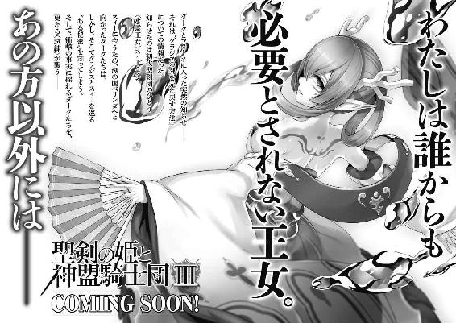

| 聖剣の姫と神盟騎士団 II (角川スニーカー文庫) | |
| 杉原 智則 | |
| (2013) | |

聖剣の姫と神盟騎士団Ⅱ
杉原智則
角川スニーカー文庫
本作品の全部または一部を無断で複製、転載、配信、送信したり、ホームページ上に転載することを禁止します。また、本作品の内容を無断で改変、改ざん等を行うことも禁止します。
本作品購入時にご承諾いただいた規約により、有償・無償にかかわらず本作品を第三者に譲渡することはできません。
本作品を示すサムネイルなどのイメージ画像は、再ダウンロード時に予告なく変更される場合があります。
本作品は縦書きでレイアウトされています。
また、ご覧になるリーディングシステムにより、表示の差が認められることがあります。
口絵・本文イラスト／Ｎｉｄｙ─２Ｄ─
口絵・本文デザイン／ビィピィ
 序章
序章
ラッセル・アーヴェンは死地を好んだ。
彼は故郷を出立して以来、『騎士』を名乗りながらも、その実、定まった君主を持たず、大陸各地のありとあらゆる戦場を経巡ったが、その大半においてわざわざ不利とされる陣営につき、しかももっとも危険な任務を好んで引き受けた。
「騎士とはなんぞ」ラッセルは馬上にあって、常に自らへ問いかけた。「いかなる死地にあっても引かず、戦い、勝利する者のことだ。いかに不利な条件が揃っていたとしても、たとえ味方が裏切ったとしても」
加担したすべての陣営に勝利をもたらすことはなかったが、ラッセル自身は誰にも討ち取られず、捕縛もされず、それどころか傷ひとつ負うこともなかった。若いながら屈強の戦士としていよいよ名前も売れはじめたそのころ、またも新たな戦場への誘いがあった。
「敵は、畏れ多くも〈真紅の騎士〉を騙る大馬鹿者を味方に引き入れたらしい」
ラッセルを自分の陣営に引き込もうとして、彼が当座の住まいにしていた家に駆け込んできた男は、小ずるそうな目をしてそういった。
「〈真紅の騎士〉といえば、あまたの戦場にて傷知らず、甲冑を真っ赤に染めるは大量に浴びた敵の返り血ばかり、というそなたのことではないか。どうだろう、ここはその不届き者を成敗する心づもりでこちらについてはくれぬか」
「けしからん奴がいたものだ。よし、つこう」
ラッセルは激怒する振りをして立ちあがった。
いや、内心は確かに高揚していた。わざわざこの二つ名を自ら名乗ってきた甲斐があった。目指すべき敵があちらの陣営にいると知れば、こちらにつくしかない。
それは、奇しくも家を二つに割った戦いだった。血をわけた兄と弟が相続争いによって国土を荒らしていた。前領主が弟のほうを溺愛して家督を譲ろうとしたため、兄の側が謀反という形で兵を挙げたのだ。ラッセルを引き込んだのは兄の側だ。兵の数で劣ったために、すでにそのとき数々の武名をあげていた放浪の騎士ラッセルを雇い入れたのだった。
憤慨したような態度はあえて建前上のことだった。が、このときのラッセルはいま以上に若く、幼い。槍を取り、剣を腰に吊るして馬上に身を投げたときには、まさしくこれが正義の戦いだと信じられるようになっていた。
きっかけや目的はどうあれ、いざ剣を振るう段になれば、これは命を懸けるにふさわしい義戦である、と心の底から信じてしまっている。
（おれは、『奴ら』とはちがう。どのような状況に追い込まれようと、おれから裏切ることはない。味方も、主君も、そして自分自身の剣に対しても、おれからは決して裏切らない）
馬に鞭をくれ、次から次へと面前にあらわれる敵を事もなく斬り伏せていきながら、ラッセルは自身にそう言い聞かせつづけた。
（おれは騎士だ。父と同じく、おれだけがこの世で唯一、正当の騎士だ）
風が正面から顔に当たっては後方に流れていく。風は血のりの色を帯びていた。そのすべてが、ラッセルが繰りだした槍や振りおろした剣によって命を絶たれた敵兵のものだ。戦場を駆けていくラッセルの愛馬、その尻尾から血の帯がたなびいているかのようでもあった。
彼は局所的な勝利をいくつか引き寄せたが、しかし兵力の差と士気のちがいはいかんともしがたく、結局、彼のついた陣営は敗北を目前としていた。蜂起した兄をはじめ、重臣たち数名が国境近くの砦へと逃げ込んでいたが、あてにしていた隣国からの支援も訪れぬまま、敵軍に包囲されていった。
ラッセル・アーヴェンはそのとき、砦へ通じる道のひとつを防いでいた。南側にある森のなかだ。すでに周囲は死体の山。敵味方双方のものが入り交じっていたが、相変わらずラッセル自身には傷ひとつない。
「かかれ、かかれえっ」
敵側の指揮官らしき者が声を張りあげ、兵を鼓舞しているが、誰もラッセルに撃ちかかってこられない。なにしろラッセルとは一合と剣をあわせられた者がないのだ。国のなかでは比較的名の知れた武人も騎士も、ひとたびラッセルに躍りかかったが最後、縦に、あるいは横にと、頭や身体を両断されて血の雨をラッセルに降り注ぎながら絶命していった。
湯気をあげそうな血を身体中に浴びながら、ラッセルは悠々と剣を構えている。周囲の木々には矢が突き立っていた。敵の一斉射撃を、彼は木々を盾にしてかわした。もはや矢も尽きているだろうから、相手としてはラッセルに白兵戦を挑むしかない。が、
（そろそろ潮時か）
とラッセルは踏んでいた。若輩ゆえに単純なところも多々あるラッセルだが、戦の引きどころはわきまえている。味方の大半は死に絶え、砦からの援護もない。ラッセルとて一日も二日もこうしているわけにはいかなかったし、またラッセルひとりが南側の道を死守したとて、大方五日、早ければ三日後には、別の道をやすやす突破されて、砦などはその日のうちに陥落するだろう。
名はあげた。敵についたという〈真紅の騎士〉も噂でしかなかったか、あるいはラッセルを引き込む噓でしかなかったようで、この戦場にあらわれたという話は聞かない。
（今夜だな）
とラッセルは決めた。陽が暮れてからこの森を東に抜ける。あとは戦の帰結など知ったことではない。新たな領主になった弟のほうがせいぜいよい君主になってくれればいいが、そうでない場合、新たな火種が生まれ、それはまた争いの火となって広がるだろう。そのときにまた自分の出番が来ればいい。
正当騎士が聞いてあきれるが、このときはこのときで、ラッセルのなかには自分なりの『正義』の理論がある。余人には理解しがたいだけだ。
と、
「道を空けてくれ」
のんびりとした声が聞こえてきて、敵側の陣営がそのときざわっと揺れた。
見ると、馬に乗ったひとりの戦士が進み出てきている。三十代半ばほどの男だ。兵たちの掲げた槍の林を搔きわけるようにして、指揮官のもとへと近づいた。
「い、いってくれるか」
口を開いたのは、その傍らにいた副官らしき男のほうだ。指揮官はあまりいい顔をしていなかった。このときのラッセルにその理由はわからない。気にもしていなかった。
「ここは砦にいちばん近い進軍路だ。ほかの経路は明日、明後日には突破できるでしょう。もしいちばん近いはずのわれわれが砦への総がかりに出遅れたら、あとで偉い方にどやされますぜ」
馬上の男はまるで茶飲み話でもしているかのような口調でいう。指揮官も腹を決めて、「いけ」というふうに馬の尻を追いやった。
（ふん）
ラッセルは思わず嘲笑った。そののんびりとした雰囲気の男が、たったひとりでラッセルのもとに馬を進めてきたからだ。姿格好からして、傭兵だろう。ラッセルとていままで多数名のある傭兵を相手にしてきた。傭兵は自分の腕を高く売り込むため、〈戦神〉だの〈狂戦士〉だの大仰な二つ名を名乗る者も多い。いずれも、ラッセルの前では赤子同然だった。
「貴様は、なんだ」
ラッセルはつきあってやる気になって、声を投げかけた。
「なんだ、とはなんだ」
「なにか名乗るべき二つ名があるのだろう。聞いてやる。おれが明日になっても覚えていられるかどうかは、おまえのこれからの頑張り次第だが」
「あははは、いうねえ。名乗ってもいいが、ちょっと自分では恥ずかしいな。あとで風の噂にでも聞いてくれ」
「はん」
ラッセルは心底からせせら笑った。剣を掲げる。と、男はラッセルから距離を隔てた場所で馬の足を止めた。
「なんだ、怖気づいたか」
「いや、確かおまえは騎士を名乗っていたな。騎乗しなよ」
と促してくる。剣での勝負より、馬上での槍ならば分があるということらしい。
（なるほど、自信の根拠はそれか）
ラッセルは得心した。この森に入って以来、彼は騎乗しての戦いは見せていない。
ならばとことんまでつきあってやる、とばかりにラッセルは木につないでおいた愛馬を引き出し、鞍の上に身を投げた。
「おまえの呼び名は決まったぞ」
「なにかね」
「〈愚か者〉というのさ！」
馬の足に地を蹴らせた。
傭兵も応じて馬を駆けさせる。
ラッセルは前傾姿勢で槍を身構えた。童顔に似ず、ラッセルの膂力は体格で上まわるどんな武者にも引けを取らない。馬上から繰りだす槍は疾風とすら称えられた。
わずかに起伏した地面の上、馬と馬とがすれちがった。
直後、片方の騎馬武者が、どうと地面に投げ出される。
ラッセル・アーヴェンは、それが自分だと気づくのにいくばくかの時間を要した。
空中で槍を弾かれ、それに気づかぬ間に二度目の突きが胸へと襲いかかってきたのだ。咄嗟に身をかわして避けたのは本能による習性だが、おかげで体勢を乱して落馬した。
「──」
一瞬の攻防を脳裏によみがえらせたラッセルではあったが、それでも納得にはいたらなかった。神か悪魔か、ともあれ、人智の及ばぬ領域にいる何者かが、この一瞬、悪ふざけを仕掛けたのだとしか思えなかった。
「下りろっ」ラッセルは草地の上で体勢をととのえながら吠えた。「いまのは勝負にならん、剣で来い！」
「おやおや」馬上の傭兵は苦笑いを浮かべた。「この場合、命ずる権利があるのはどちらかね。まあいい、こっちにつきあってもらったんだ。返礼するとしよう」
ひらりと身軽そうに傭兵は飛びおりた。腰から剣を抜く。
ラッセルは猛然と襲いかかった。
今度は油断などしない。神であれ悪魔であれ、悪ふざけを許すような余地など与えない。
ラッセルの剣は、父譲りの正式な技に加えて、数々の戦場で磨きあげた実戦的な鋭さがある。いかにも猪突猛進気味に見られがちな彼ではあるが、戦いの駆け引きとて無数に所持している。
敵の頭上から剣を見舞う。弾かれるのは予測の上だ。その上で、思いきり身を沈ませざまに、横殴りの一撃を振るう。
その連撃を放った間に、ラッセルは敵の姿を見失っていた。
「なに？」
という声が洩れたとき、すでに側面に位置していた傭兵による一撃で、あっさり剣を叩き折られていた。
予期せぬ角度からの一撃は骨身まで痺れるようで、ラッセルは思わず腕を押さえながらその場にひざまずいた。
これも、なにが起こったか容易には理解できなかった。
いや、わかる。ラッセルは踏み込んで剣を振るった。初手と次の一撃とのあいだに生じた、ひと呼吸の半分も入るか入らないかというわずかなその間隙に、傭兵は巧みな足さばきでラッセルの側面へと移動した。そして、軽々とラッセルの剣を中央からへし折った。
わかる。わかるものの、わからない。なぜそんな芸当がこなせるのか、それもこのラッセル・アーヴェン相手になぜこうもあっさりとできるのか。
気づけば、傭兵の身柄はふたたび馬上にあった。背を向けて陣営に引き返そうとしている。もはやこちらへの興味も失せたかのようなその姿に、ラッセルは両肩から背中にかけて重石を載せられたような感覚を覚えた。
（敗れたのか）
（このおれが。『奴』にではなく、名も知れぬような男に）
「ま、待てっ」考えるより早く、口から声が迸っていた。「敵に情けをかけるのか。殺せっ」
「そうしてやろうかと思ったが」馬上で、傭兵は鼻の頭を搔いていた。「馬上で突いたとき、そしていまさっき剣を叩き折ったとき、いずれもおまえさんは子供のような顔をしていた。おれは、今日の糧を得るためとあれば戦場にて兵を殺すのになんのためらいも抱かぬていどの男だが、さすがに女子供は手にかけられん」
「な、なに？」
「殺してほしければ、ちゃんと戦士の、男の顔をしていろ。次に会ったとき、そうであれば、おれはおまえを殺す」
待て、ともう一度吠えたつもりだったが、まともな声にはならなかった。
傭兵は馬を駆って、自軍の陣地へ戻っていく。
「お、おのれ」
ラッセルはあわてて立ちあがった。この傭兵を追おうとしたのではなく、敵が雪崩を打って進軍してきたからだ。
愛馬をつかまえ、その背へと飛び乗って脇腹を蹴った。
風を面に浴びる。しかしいまはもう馬の尻尾からたなびく血色の帯はない。
（おれが子供の顔だと。騎士であるおれが、戦士の顔をしていないだと！）
ラッセルは馬上で強く歯嚙みした。はじめての敗北で味わった絶望や悲しみ、憎しみが渦巻いているなか、その胸中、いままでにない種類の灯りが、いままで意識もしていなかった場所で輝いている気がした。
結局、そののち砦は三日ともたずに陥落したものの、同じ陣営から逃げ散っていた兵から、あの傭兵のことを聞き出すことができた。
かつては一国に仕えていた戦士だったというが、いまはラッセルと同じく、戦いとあればどこへなりとも駆けつけて、なけなしの銭を手に、また次の戦場に向かっていく放浪の傭兵であるという。
名は、グラジス。
「二つ名をあわせると、〈無敗の〉グラジス・エストール」
それこそが、のちの聖剣団団長グラジスと、聖剣団一番槍ともいわれるラッセル・アーヴェンとの出会いであった。
それから六年以上も経った現在。ラッセル・アーヴェンはひとり、山中にいる。すでに〈真紅の騎士〉としての異名はない。いまの彼を指すのにふさわしいのは〈竜殺し〉であり、そして聖剣団一番槍としての武名である。
陽はすでに暮れていた。山道は峻険そのもので、しかも裾野辺りは地方の土豪どもがしょっちゅう小競りあいを繰りかえしているような土地柄だ。いくら〈竜殺し〉ラッセルといえど、鎧も剣も身につけていないこの姿では、危険極まりない。
が、時間と場所を指定してきた『相手』から、
「山に入るときは決して鉄を帯びるな」
と固くいい含められてある。
ならば従うしかなかった。
山中に一軒の草庵がある。あらかじめ教えられていたとおりの作法で、その庵の前にて腰をおろし、半時間ほども待った。
虫の声がする。時折、遠方から獣の声まで聞こえてきた。しかしラッセルは揺るがない。無心で耳を傾けているうちに、
「そのほう、ラッセルか」
と声をかけられた。いつしかラッセルは目を閉じていたのだが、開くと、目の前にひとりの老人が立っていた。
「あなたが、賢者ナージャさまでいらっしゃいますか」
「いかにも。まあ、賢者かどうか、それはわしを見る各々の目が決めることだ。そなたの目にはどう映る？」
「いまはまだわかりかねる。ですが、あなたが噂どおりの術の持ち主ならば──すなわち、奪われた魂を引き戻す術を心得るほどの方であるなら、もうそれは大賢者であろうが、大魔法使いであろうが、歴史に名を残す名碩学であろうが、いかようにも見える」
「素直な男だな」からからと老人は笑った。「入れ」
庵に入ると、なかは粗末なつくりだった。天井を支える柱もわずかばかり傾いでいて、嵐どころか、この山あいを時折吹き流れる強風にあおられただけで崩れてしまいそうだ。
一本の蠟燭が立てかけてある。老人は敷布もなく、板も張っていない土の上に直接腰をおろすと、その火を挟んで、ラッセルに「座れ」という。
ラッセルはこれも素直に従った。ようやく探し求めていた人物に出会えたのだ。先ほどラッセルが口にしたとおり、『奪われた魂を引き戻す術』を知るという賢者。
先ごろ、おそらくカーラーンの手の者と思われる黒魔法士によって、聖剣団団長グラジス・エストールの魂が奪われるという驚天動地の事態が勃発した。
ラグナの谷を旅立ったラッセルは、魂を戻せる術を知る者はないか、あるいは同じ効果の魔法具がないか、ひと月ものあいだ、ひとかけらの情報たりとて逃がさんとばかりに血眼になって探し歩いた。いくつかそれらしい情報を手がかり、足がかりに、また次の土地へと旅立って、そこでまた情報を得るために足を使って歩きまわる。時には、その情報を与える対価として、ラッセルに土地を荒らす狼やら怪物退治やらを頼む者、また滅多に人が近づかぬ危険な谷にしかないという珍しい薬草摘みやらを頼む者もあった。ラッセルはそのすべての頼みに「否」とは応えなかった。
このわずか一ヶ月で、ラッセルが土地土地に残した武勇譚は両手の指で数えるに余りある。
そうして集めた情報を一本の綱のように長くよりあわせ、その綱を辿ってようやくのことで行き着いたのが、この東方の山中。
ナージャと名乗るこの賢人こそが、ラッセルの望む術を心得ているという話だった。
「さて」と老人は切り出した。「無論、話は聞いておる。黒魔法によって奪われた魂を取り戻してほしい、という話だったな」
「そのとおりです。可能でありますか、ご老人？」
「まあそう急くな。そなたのほうも、この老人にそんな大層な真似が果たしてできるものかと疑ってかかっておるだろうが、わしもまた、この目でじかに見ずして真実がすべて見通せるというほどのものではない」
「おれは噓などいっていない」
思わず激昂しかけてラッセルは老人に詰め寄ろうとした。が、すぐに思いとどまって、咳払いとともに身を引く。
「......あなたのもとに辿り着くまで、三十以上もの夜を越えた。同じ目的を持って谷を旅立っていった者たちがどういう状況にあるかは知らないが、おれひとりが、ようやくあなたのところまで辿り着いた。おれの言葉をお疑いあるなら、この胸を、腹を搔っさばくなりなんなりして、真実を見通すがよかろう」
「無用よ。先ほどいうたであろう。この『目』でじかに見ずして、とな。これからわしはそなたの記憶を見通す」
「記憶を？」
「左様。人間、言葉や態度はいくらでも取り繕うことができる。いや、心のなかでさえおのが自身に噓をつくということもある。が、記憶となるとやや事情が異なる。時が経過して自分に都合のよいように捏造することがあるとしても──希望的観測から来る思い込みというやつだな──、新しい記憶というものは変えようがない。食する生き物と同じで、新鮮であればあるほどよい。先ほど、三十以上もの夜、というたか？ それならば許容範囲だ。わしはこれからそなたの記憶をさかのぼってこの『目』でじかに見る。いわばそなたの人生を覗き見るのと同じだ。それを不快に思うなら──」
「なにもありはしない、ご老人」息せき切ってラッセルはいった。「おれは、この世で唯一の正当騎士を自任してきた。他人に見られ、知られて、恥と思うことなどは......過去にはあるにしても、いまの自分が恥として耐え忍ぶことくらいはできる。好きに見てくれ」
「よかろう。ならばラッセル、この火を見よ」
老人が指し示したとおりに、ラッセルはこの闇のなか、唯一あかるく灯っている蠟燭の炎を見つめた。
「視野の中央に火が来るように。そうだ、あとはなにも考えずともよい。無理に過去のことを思い出す必要もない。ではラッセル、少しそなたの人生に邪魔するとしよう」
すでに火のほうへ意識の大半を奪われていたラッセルは、老人の口もとを笑みがかすめ過ぎたのに気づかなかった。
暗闇に縁取りされたラッセルの視界、その中央で、炎はわずかばかり右に左にと身じろぎする。ラッセルは老人のいうとおり、なにも考えまいとした。ただ一心に火を見つめようとした。
が、どうしても動悸がしてしまう。無敗を誇り、目指すべき仇敵に出会うまでは一度たりとて負けてはならなかったはずの自分を、ああもあっさり叩きのめした、あのグラジス・エストールに、ふたたび会えるかもしれないという期待が、ラッセルを平常心でいさせてはくれない。
（ええい）
ラッセルはおのれを激しく叱責した。子供のように高鳴る胸を無理にでも抑えつけ、今度こそ火のほうに意識を集中させようとする。と......、
炎が激しく左右に揺れた。
風が吹き込んできたのかと思った。
炎はラッセルの背丈よりも高く噴きあがったかと思うと、その中央に何者かの姿を映し出していた。
いや、何者か、などではない。ラッセル自身だ。
（これが記憶......おれの、記憶か？）
炎に映し出されたラッセルの姿は、全身血にまみれている。ただし自分のものではない。いつものことだった。戦場に立ったラッセルは、常に他人の血を浴びて真っ赤に染めあがっているのだ。
「誰の血だ？」
問いかける声がある。
賢者ナージャのものに聞こえた。あるいは、自分自身の声のようにも聞こえた。
「決まっている。敵だ。敵の血だ」
「本当にそうか？」
なおも問いかける声は、その裏に残虐な笑みを含んでいた。
「よく見てみるがいい。過去のおまえ、その真実の姿を。何者を抱きあげ、いったい何者の血で全身を染めているのかを」
ラッセルははっと目をみはった。
炎の中央、ラッセルは確かにひとりの男を抱きかかえている。そして両目から涙をあふれさせている。
父だ。
ラッセルの父、ラウル・アーヴェンが、彼の腕のなかにいた。父の胸からは剣の切っ先が生えている。後ろから刺し貫かれたのだろう。とめどなく流れつづける血が、ラッセルの身体を赤く汚していた。
高笑いが聞こえた。反射的に振り仰ぐと、そこにもうひとりの人物が立っていた。
「おまえか」
ラッセルの口から矢のような声が迸った。
「おまえか！」
「おれの仕業であるものか」甲冑を、やはり余すところなく血で染めたその男は、ラッセルを指差しながら冷笑した。「おまえだ。おまえがやったんだよ。その手で父を殺害したのだ」
ラッセルの手は本能的に腰をまさぐっていた。そこに剣はないはずだった。が、なぜかラッセルの手は馴染みの感触に触れている。むしろ鋼鉄のほうからラッセルの手に吸い寄せられたような思いがした。
「また斬るんだな、ラッセル？」
真紅の甲冑姿をした男は、ラッセルが剣を手に立ちあがろうとしても、その笑みを顔から剝ぎ落とそうとはしなかった。
「なにをっ。貴様、そこを動くな──！」
ラッセルは立ちあがりざまに剣を一閃させた。
男の姿がよろめき、その場に崩れかかる。
（やったぞ）
快哉を叫びかけたラッセルは、しかし男の姿が徐々に変貌していくのを目の当たりにして、口をつぐんだ。
真っ赤な甲冑が消え失せ、黒いフードつきのマントにすり替わる。「ああっ」とラッセルは女のような悲鳴をあげていた。
倒れた拍子にフードが後ろへと跳ねあがり、男の素顔をさらしていた。
それもまた、ラッセルの父の顔をしていた。
ラッセルは急いでひざまずくような姿勢となって、父を両手に抱きあげた。すでに息はない。
声なき慟哭が、炎を、その場の空気を、おびただしく震わせた。
「救いたいか」
なおも降りかかる声。
もはや何者のものとも断定できない。ナージャか、甲冑姿の男か、はたまた父か、あるいはラッセル本人か。
「同じ過ちを繰りかえしたくはなかろう。おまえは父の命を絶った。その罪を償うため、もうひとりの父を救うがいい。約束された場所で、定められていたとおりの方法で、おまえは二人の『父』を救うのだ。よいな、ラッセル・アーヴェン──〈竜殺し〉の英傑よ。それこそが天によって指し示されたおまえの運命なのだから」
ラッセル・アーヴェンは頰に涙を伝わせながら、声なき咆哮を轟かせている。
ひと粒ひと粒の涙に炎が反射して、それもまた、瞳からあふれた血のように見えた。
一章 新米魔道士の平穏でありすぎない日常
１
ラグナ郷といえば、昼日中は活気もあるが、陽がいったん暮れてしまえば、それだけでもう一日がおしまい、といった呆気なさがある。
空に星が瞬くころには路上はしんと静まり返り、ほどなくして家々に灯っていた明かりもぽつぽつと絶えていく。
「昔はね──といっても、ひと月にもならない過去の話だけど」
ダークの隣に腰掛けた女性が、もの憂げにいった。
「ここら一画は、それでも大層にぎわっていたのよ。店先に客引きの女の子がたくさん立って、ひとりでも多く客を引っぱり込もうって躍起になってたわ。あまりに争いが激しくなったから、裏で休戦協定が結ばれて、それから暗黙のルールづくりがおこなわれたくらい」
というのも、ひと月前には、ダークと同様、昼の仕事が終われば朝まで飲んで歌って大騒ぎしたい連中がたくさんいたからだ。
ラグナ郷の住人ではない。長いあいだ外界と接触を持たず、この絶壁に挟まれた集落のみを世界として暮らしてきた人間たちは、気性穏やかで、真面目で、あまり羽目を外すことを好まない。
市場のある表通りから路地を外れた先にある、この小さな飲み屋街を毎夜のごとく賑やかしていたのは、例の聖剣団、各々の部隊長に雇われた傭兵たちだった。
ひと月のあいだでダークが痛感したとおりに、この谷あいの集落、平和で穏やかであっても、遊ぶ場所には限りがある。陽が暮れてしまえば、憂さ晴らしできる場所などこの飲み屋街だけのようなものだ。
そういうわけで、連日、傭兵たちが大挙して押しかけてきては、店の軒先から女たちの白い手がのびてきて、無骨な腕を引っぱりあう光景が多数見られたという。
「戦のあった日なんてもう大変。どの男たちも血気にはやって、いつもより飲み食いする量が増えるし、あちらこちらで喧嘩なんて当たり前。兵隊さんは自分の手柄を誰かに自慢したくって仕方ないから、二軒、三軒の店を急いではしごしちゃうから酔いも早くまわるのよ。ジョッキが何度となく宙に掲げられて、兵隊さんたちはばかすか食べて。ついでにお店の女の子までつまみ食いしようって目を光らせるから、あたしたち年長組は若い娘たちを守ろうって、そういう意味で目を光らせなきゃならなかったわ」
というほど、ダークの隣にいる女性が年かさだとは見えない。こういう世界で生きる女性というのは老成するのが早い、と耳年増のダークは聞いたことがある。
「それがいまじゃ、客はぱったり」女は大胆に露出している肩をすくめた。「毎日のように若い娘たちは辞めてくし、お店も次から次へと看板をさげていく。たまーに小銭のあるおっさん連中が来ることもあるけど、話題といえば、どこそこに知りあいがいるからいっしょに逃げないか、だの、うちは自前で兵隊雇っているから、危なくなったらうちにおいでよ、なんて、どこまで本気だかわかりもしない、後ろ向きの話ばっかりでさ」
という女のほうこそ、さっきから鬱々とした後ろ向きの話ばかりだ。まだ若いのにどこか厭世的な気分さえ横顔から見え隠れする。
（酒が不味い。河岸を変えるか）
などと世慣れた感想を抱いたダークではあるが、そもそもこのダーク、酒は一滴たりとて飲んでいない。成人の儀式はとっくに生まれ故郷の村で済ませたが、生来、酒とはあまり相性がよくないらしい、というのも、そのときの宴の席で痛感させられている。
が、下戸のくせして酒の席での盛りあがりは大好きなのだ。だから陽暮れとともに彼は真っ先にこういった店へと駆けつける。連日のことだ。いくらほとんど飲まないとはいっても、ダークは谷を守る聖剣団の端くれであるから、
「ほどほどにされてはいかがですか、ダーク」
フィーネ・エストールから注意されることもある。年齢はダークよりひとつ下だが、聖剣団としてはいわばダークの上司に当たる人物だ。
「いざというときに二日酔いや寝不足で戦えない、というのではお話になりませんよ」
「いえ、これは谷の方々と親睦を深めるための、大切な交流なのであります。今日はあの店に、明日はこの店に、と場所を変えながら大勢の人々と交流を持って、わたくし新顔の存在を知らしめるとともに、聖剣団が確かにこの谷を守っている、という安心感を皆さまに抱いてもらうためなのです」
などとダークはうそぶく。いくら上司とはいえ、相手は年下の少女。そんな彼女にダークが敬語を使うのは、大体が上手いこといって相手をだまくらかしてやろう、という魂胆があるときに限られるのだが、対するフィーネはというと、
「なるほど、確かに大切なことです。ダークも、聖剣団になったからには一日も早く谷に馴染みたいところでしょう。これはわたしが浅はかでした」
などといつものように他愛がない。
（聖剣団になったからには、ねえ）
ダークとしては多少引っかかりを覚えないこともない。まるで、ダークが自分の意志でこの谷の窮地を救わんと立ちあがった勇士だといわんばかりの言葉だが、実際のところ、彼は脅迫されるも同然、というか脅迫以外のなにものでもない経緯を経てこの聖剣団に所属している身だ。
目には見えねど、彼の胸にはフィーネの所持する聖剣ゼスの刀身が一部埋め込まれており、これはいまのところまったくの無害であるものの、ひとたびフィーネがこの欠片と意思を結びあわせれば、刀身はダークの胸に鋭く突き刺さって、たちどころにダークの命を奪ってしまうという恐ろしい代物だ。
ともあれ、上司のお許しが出たからには、
「はっ、それではこのダーク、今日も今日とて『交流』に赴いてまいりますれば」
陽暮れとともに聖剣団宿舎を飛び出さぬわけにもいかぬダークである。
「励んでらっしゃい」
というフィーネの声を背に、今夜もこの小さな飲み屋街へとやってきた。
しかし先ほど述べたように、日に日にこの飲み屋街も活気を失い、店に入ったら入ったで、女たちの鬱々とした空気にさらされる羽目になる。
無理もない。
現在、ラグナの谷は侵略の火の手にさらされている状況だ。火を放っているのは、南方の大国カーラーン。二百年以上も平和を享受してきた集落と、ここ数年で急激に勢いを増してきた軍事大国とでは勝負になろうはずもない。
そのカーラーンが何度となく大規模な攻勢をかけてきたのに、奇跡的なまでに兵力の差を引っくりかえして谷が守られてきたのは、ひとえに、本来はよそ者集団である聖剣団のおかげだった。
団を構成する六人の部隊長はいずれも一騎当千、彼らの率いる兵たちも鉄の結束に結ばれており、全員が一丸となって戦えば、史上におけるどのような劇的な戦いも、人気のあるどのような英雄物語も霞んでしまうというほどの活躍ぶりを見せつける。
さらには、その頂点に君臨するグラジス・エストール。彼自身が、まさしく生ける伝説そのものだった。
それは、新たな店に入ったダークの目にもあきらかだ。ラグナの谷にある店であれば、飲食店であろうが、小物を扱う雑貨屋であろうが、必ずといっていいほどグラジスの絵姿が飾られてある。
「またか」
うんざりしたような気持ちでダークがいうと、席に案内してくれた若い娘が、
「そりゃ谷の守り神だもの」胸を張っていった。「あの方がこの谷にいらっしゃると思うだけで、どんな神さまに祈るより確実に守られていると実感できるのよ。ほら、あたしだって」
と懐から出したのは、やはりこれもグラジスの絵姿。
「ほかにもお守りにしている人は多いのよ。出せば売れる、って状態だから、最近ラグナ郷の絵描きさんたちはみんなグラジスさまばっかり描いているみたい」
（見た目はただのおっさんじゃねえか）
とは思うが、そんなことを口にするほどダークも無分別ではない。口にしたが最後、いまはにこやかにダークを接待する娘どもも一転して鬼の化身となって、ダークを半殺しにするほど叩きのめした挙句に尻の毛まで毟って店の外に放り投げるであろう。
「ただ」と娘はため息をついて手もとの絵姿を眺めた。「グラジスさまって、絵に描かれるのをあんまり好まれないみたいなの。どんな絵師から高い金を積まれても、頑としてモデルを引き受けてくださらないから、出来にばらつきがあるのよね。見てよ、この絵。グラジスさまにしてはちょっと鼻が低すぎると思わない？」
「そうだね、そうそう。ささ、なにか頼もうか。あ、きみも飲みたい？ 遠慮せずにじゃんじゃん注文しちゃってよ」
いつまでも『おっさん』の話をしていても仕方ないので、ダークは強引に自分のペースに娘を巻き込んだ。
ともあれ、いまの飲み屋街にとって、ダークは上客だ。ほかの客足がぱったりと絶えたなか、ひとり足しげく通ってきては結構盛大に金を使ってくれる。
「さすがは聖剣団」
とあって、女たちもこぞってダークの給仕をしたがる。
若く、それなりに着飾った女性たちに囲まれれば当然ダークも上機嫌となる。ますます金を使って、テーブルの上は飲み物や食べ物であふれかえる。
当然、持ち前の舌も常日頃以上によく働く。
ダークは「とっておきの話」をするとばかりに、自分の武勇譚をべらべらと語った。ゲルウィンの塔において、襲いかかる怪物やカーラーン兵相手にいかなる大立ちまわりを演じたか、自分の任務にかかりきりになって心を閉ざした賢者ゲルウィンをどのような言葉で感動的に説得したか。
「塔のなかは危険に満ち満ちていて、さしものフィーネ・エストールも弱気になる場面が多々あった」ダークは苦渋の顔をして語りつづける。「そのたび、『あきらめるな』とおれはフィーネに檄を飛ばしたものさ。何事においてもあきらめたらそこでおしまいだ。たとえ命はあろうと死んだも同然。『輝かしい明日を迎えんとするなら、ともにこの苦難の道を歩もう』とおれはフィーネの手を引きあげ、最上階へと足を運び......」
ダークの奇妙なところは、自分はほとんど酒を飲んでいないのに、周囲に酒がまわりはじめると、まるで自分も同じ量だけ飲んだみたいに顔を赤くし、なんとはなしに酔ったみたいな気分になるところだ。
実際、ダークはこの話をするのがもう三度目になるのを忘れているし、話をするたびに細部があれこれ変わるものだから、女たちもそろそろこのお調子者の性格がわかりかけている。が、上客なのは変わらない。変わらないから、目を興味津々と輝かせた振りをして、ダークの肩や脚にさりげなく手を触れながら、
「それでそれで、どうなったの？」
と結末などわかりきっている話の先を促したり、
「あなたってば、なんて勇敢なの！」
と、いかにも感に堪えかねた風に叫んだりして、ダークをいい気分に乗せるので、ダークはますます有頂天に駆けあがる、といった具合だ。
「でもさ」
話がようやく一段落したとき、ひとりの娘がやや顔を沈鬱に落ち込ませて口を開いた。ダークはげっぷをしながらも、
「なんだ、どうした。きみにそんな顔は似合わない。なんでも相談したまえ」
「あなたやフィーネさまのご活躍で、谷は守られたけれど──、カーラーンだってあきらめたわけじゃないんでしょう？ ゲルウィンさまだって塔にこもられたままだというし......、もしまた次の襲撃があるかと思うと、さすがに不安になるわ」
テーブル上の空気がわずかに落ち込んだ。
この店をはじめ、客足が唐突に途絶えたのも、店の上客でありつづけた傭兵たちが揃って谷から姿を消したからだ。
兵ばかりではない。彼らを率いた部隊長六人全員、さらにはその頂点に位置するグラジス・エストールまでもがこのラグナ郷から前触れもなく立ち去っていった。
となると、カーラーンの火のような侵攻を前に、谷はもはや丸裸のままさらされたも同然。二百年以上の平和を享受した谷に職業的な戦士は数少なく、またその戦士たちとて戦らしい戦など経験したことがない。実際、
「聖剣団の皆さまがいなくなった直後、軍司令フォルテのもとから大勢の兵が脱走しているって聞いたわ」
「ふん」ダークは赤らんだ顔で、唇をゆがめて冷笑した。「こんな状況で逃げるようなら、最初からものの役にも立たん連中だったということさ。心配するな、このおれダークは谷を見捨てて逃げたりしない」
「本当？ 本当に、本当ね？ わたしと約束よ」
先ほど「不安」と口にした娘が、目を潤ませてダークの手を取る。ここにきて、ほかの娘たちも、
（あっ）
（こ奴）
とその魂胆に気づいた。わざわざ暗い話を持ち出して場の空気を落ち込ませたのも、このための布石だったのだ。
それに気づいたとなると、ほかの女たちも容赦がない。
「ああっ、ダーク。あたし怖いわ」
「いざとなったらわたしを守ってくれる、って約束してくれたあの人もいなくなってしまったし......、これからいったい誰を頼ればいいの？」
といっせいにしなだれかかってくる。ダークなどはもう鼻の下が限界以上にのびきって、そのうち床に落ちるんじゃないかというくらいで、
「恐れることなどはない！」ぱっとテーブル上に飛び乗って、空になった酒瓶を剣に見立ててか、頭上に高々と掲げた。「いったとおりだ、この魔道士ダーク、どのような危難を前にしても、それがいかなる強敵、大軍勢であったとしても、戦士として気持ちが昂ることはあれ、すごすごと逃げ去るような真似など絶対にしない。怖いなら、恐ろしいなら、このおれダークを頼ればよい、カーラーンなどけちょんけちょんにしてくれるわ！」
きゃあっ、と女たちの黄色い歓声がダーク一世一代の晴れ舞台を華やかに彩った。
......で、数時間後。
飲んでもいないのになぜかすっかりできあがったダークは、さすがに夜も更けたとあって、千鳥足で店の出入り口へと向かっていた。
別れを惜しむ女たちに、
「明日も厳しい訓練と任務があるのでな」
などとニヒルにいい捨てて店を出ようとしたとき、
「ダークさま」店長らしき口髭の男が声をかけてきた。「お支払いをお忘れでございますよ」
「支払い？」ダークは濁ったような目をしたまま笑った。「いつものようにツケといてくれ」
彼は自信たっぷりだ。なにしろ聖剣団の宿舎には宝の山がわんさと眠っている。宿舎の管理人ジョアズに聞いたところによれば、ひとりひとりが後世に名を残すほどの英雄揃いである部隊長たちが、いままで各地で集めてきたり、探索の御代として頂いたりした金銀財宝が倉庫にあって、それを売りさばくことで団の運営資金──現在は、主にフィーネの胃袋を満たすための資金──にしているらしい。
ダークひとりが飲み食いする量などたかだか知れている。毎日が豪遊できるというわけだ。
が、口髭の店長は、にこやかな笑みを持続させたまま、しかし決して彼を店の外に出そうとしなかった。
「実は、昨日がちょうどうちの支払日でして」
「ふむ？」
「溜まったダークさまのツケをお支払いいただこうと、聖剣団の宿舎にうかがわせていただきました。管理人のジョアズさまから確かに御代は頂いたのですが」
「なら問題はなかろうが」
「いえ、それは本来、明日にも支払われることになっていたダークさまのご給金から差し引いていただいたのです」
「なん、だと」
「失礼ながら、残高はごくわずかだとジョアズさまはおっしゃっていました。今日の分まで含めると、おそらくダークさまのご給金はすでに底を突いたのではないかと、はい」
ダークはよろめいた。ジョアズのけちんぼは、彼の豪遊する金を運営資金から支払うことをよしとしなかったのだ。酔いなどすっかり醒めて、ダークの顔からはさあっと血の気が引いている。
「なんだ、金ねえのかよ」
ダークの見送りに立っていた女たちもすっかりしらけてしまった。顔を見あわせて、
「やっぱりただの下働きに色目使っても駄目だな」
「ああ、あ。無駄な時間だったわあ」
「もう帰ろ、帰ろ」
先ほどまでダークにかしずいていたのが噓のような変わり身の早さで、波が引くがごとくに去っていく。
あとに残されたのは、青ざめたダークと、にこやかだが、実のところ衣服の下の筋肉は軍人以上に隆々としているのではないかと思われる店長だけ。
結局、ダークが解放されたのは明け方近くになってからだった。朝まで店の掃除やら、皿洗いやらの雑用を押しつけられたのだ。
徹夜の重労働にさしものダークも疲れ果てている。よろよろとした足取りで宿舎に帰り着くと、すでに辺りは明るく、庭のほうからは、
「はあっ、とうっ」
と聞き慣れた、気合いのこもった掛け声。すでにフィーネが朝の日課である鍛錬をやっているのだ。となると、
「おやおや、今日は馬鹿に遅かったね」
門前では、白髪頭のジョアズ管理人閣下がお待ちでいらっしゃった。そう、すでにダークの『朝』もはじまっているということになる。
「今日も今日とて一日中労働があるってのに、朝までたっぷりお楽しみとは、いや、若いとは羨ましい限りだね。さあ、いつものように庭の掃き掃除、そのあと宿舎一階を片づけてから朝食の準備にかかりな」
「お......」
「なにかいったかえ？ 鬼、悪魔、と聞こえた気もしたが？」
耳の遠い振りをしながら、その実、ジョアズの耳は些細な悪態も聞き逃さぬ高性能であるらしい。どうあれ、
「なんでもありません。さっそく一日の労働にかかるといたします」
ダークとしては直立姿勢を取って、宣言したとおりに労働をはじめるしかない。たとえこの先、次の給料日が来るまで無一文で過ごす羽目になるとわかっていようとも。
「そうそう、若者は無駄口叩かず、仕事仕事。古来のアレンド人はいったものさ、労働あればこそ人は一日の糧と、一杯の麦酒、夜風に伝わって聞こえてくるキタラの音に喜びを見出せるのだとね。遺跡荒らしだの戦争だの人さらいだの、ろくなこと考えない奴は労働の楽しみを知らない憐れな奴ってことさね。おや、もういない。まあいいや、とにかく励みな」
ジョアズはからからと笑う。
２
ともあれ。
ラグナ郷は平和であった。
ダークがこの谷にやってきてからひと月以上にはなる。ということは、聖剣団がいなくなってからも同じくらいの時間が経過したわけだ。
その間、ラグナの谷の攻略を任されたカーラーン将軍ドレームの副官二名が、ラグナ郷陥落を目論んだが、いずれも失敗に終わっている。一度目はほかならぬダークがフィーネに隷従させられるきっかけとなった戦いであり、二度目は、ダーク自身も〈魔人形遣い〉ゲルウィンの塔に赴いて、この塔の罠を利用して隊を壊滅に追いやった。
そのときダークがゲルウィンより貰い受けたのが、全長五メートル以上にはなろうかという青銅のゴーレム。ダークは『ゴンゴル』などと名づけ、聖剣団の新入りメンバーに仕立てて悦に入っていたが、
「ん？」
朝食後、まだダークが宿舎内の雑用に追われていると、庭のほうから子供たちの歓声が聞こえてきた。
窓から見ると、そのゴンゴルに谷の子供たちが群がっている。両腕を地面につけた姿勢のゴーレムの肩から腕を滑り台にして遊んでいる男の子もいれば、あちこちに悪戯書きをしている女の子たちもいる。ゴンゴルの頭になどは射的の的めいた円が描かれていて、遠距離から石を放っては得点を競う子供たちもいた。
「こらあ！」
ダークは一目散に駆けて、庭のほうへと降り立った。
「あっ、ダークだ」
目ざとい子供がダークを指差して笑い声をあげる。
「目つきの悪い小間使いだ」
「うるせえ、誰が小間使いだ。何度叱ってやっても懲りねえ連中だ。ゴンゴルくんで遊ぶんじゃないと何度いえばわかる！」
ダークがお手製の杖を振りかざして怒鳴れば、今度は子供たちのほうが一目散に駆けて、庭から逃げ散っていく。とはいえ、
「下っぱ魔法使い、きっちり谷のために働けよ」
「フィーネの邪魔だけはするんじゃないぞ」
などと悪態をつきつつ、きゃっきゃっとはしゃいで逃げていくその姿を見れば、まったく彼を恐れてなどいないのはあきらかだ。
「手前ら、今度来たら、とっ捕まえてゴルボ族の餌にしちまうからな、おう、こら！」
ダークはせいぜいどすの利いた声で脅し文句を投げかけるしかない。と、騒ぎを聞きつけたらしいフィーネがやってきて、
「なんです、ダーク。朝から騒々しい」
「ご覧のとおりだよ、お嬢さん。くそっ、また落書きを消さなきゃならねえ。ゴンゴルくんの下半身がお花畑だらけじゃないか」
「先ほどの言葉、聞こえましたよ。まだ幼い子供相手に、なんという言葉遣いをするのです」
「教育的指導って奴だよ。ガキの時分にこそ、きちっと脅しもまじえて教育しておかないと、いつか性根のねじり曲がった、ろくでもない大人になっちまうんだ」
「ふむ」とフィーネはここでなぜかじっとダークを見つめて、「......なるほど」
と得心したように頷いた。
「おいこら、どういう意味だ」
「さて、意味などは」
フィーネははっとしたように視線を逸らした。逸らしたついでにゴンゴルの姿を見あげて、
「しかしダークと同様、このゴンゴルも谷にだいぶ馴染んできましたね。子供たちにとってはいい遊び相手ですし、大人たちもこのゴンゴルの姿を見れば安心するようです。もはや聖剣団の顔も同然ですね」
あからさまに話題を変えられたが、ダークはむすっとしながらも頷いてやった。子供たちはともかく、谷の大人たちがこのゴンゴルに安心感を抱いているのは、このゴーレムが〈魔人形遣い〉ゲルウィンのものだからにほかならず、つまり、
（聖剣団の方々、いまはなにかの作戦のために谷を留守にしておられるようだが、ゲルウィンさまは谷の防衛のために力を尽くしてくださっている）
という証に見えるからだろう。
実際は、そのゲルウィン、自分の塔に引きこもって研究に明け暮れており、おまけに極度の人見知りのために塔を出たくてもなかなか出られない状態である。次にカーラーンの侵攻があったとて、果たして駆けつけてくれるかどうかも怪しいといったほどだ。
もっとも、口の軽いダークとて、さすがにそんなことを口外するほど愚かではない。団長を筆頭にした聖剣団の有力メンバーが不在のいま、それでもラグナの谷が平和な空気に包まれているのは、まだ彼らと谷とがつながっているという安心感ゆえだろう。その象徴がフィーネであり、ゴンゴルであるといっていい。
「どうです、ダーク。ゴンゴルとの訓練は順調ですか？」
「ああ、もちろん、順調すぎるほど順調」
視線を逸らしたのは今度はダークのほうだ。口笛を吹きそうな顔をして、ゴンゴルを上から下までとっくり眺めている。
その態度からわかるとおり、もちろん『順調すぎる』ということはない。魔法のための分身ともいえる〈手〉を生み出し、それを他者に宿して操る、という魔法はダークの専門分野なのだが、ゴンゴルにおいてはいささか苦戦していた。
というのも、ダークが普段〈手〉を宿して五感を共有しているゴルボ族たちは、元来に備わった意思や本能というものがある。そのため空っぽの器である人形などとは異なって〈手〉を宿すのは難しいが、反面、いったんあるていどの信頼関係が築かれると、〈手〉で軽く誘導してやるだけで、
『自分の意思でやっている』
と錯覚させることが可能であるから、操るのが比較的容易になる。
一方、ゴーレムにはそもそも意思というものがない。ゴーレムに命令を下す、というより、ゴーレムに宿ったもうひとりの自分を動かす、ということになるから、こちらに宿した〈手〉のほうに意識の大半を奪われるという事態が生じる。つまるところ、自分がその場に二人同時に存在しているようなものなので、ダーク本人から切り離した〈手〉のほうに負担がかかりすぎるのだ。
「大丈夫、最初はてこずるかもしれないが、〈手〉を何度も宿していけば、そのうち、ゴーレムにも擬似的な自我が芽生えてこよう」
とは、このゴンゴルを貸し与えてくれた〈魔人形遣い〉ゲルウィンの講釈。
「いくたびも術者からわかたれた意識を宿らせているうちに、その意識が独立して、いわば術者自身の分身となるのだ。わたしはそうやって常に大勢の軍隊を率いることができるのだよ。もっとも、このゴーレムをつくったのは最近のことなので、まだそこまでにはいたらず、塔の最上部では不覚を取ったのだがね」
いかにも流暢にしゃべっているようだが、人見知りの激しい彼のこと、これだけのあいだにもだいぶ言葉はつっかえ、視線はずっと逸らし気味だった。
どうあれ、ゲルウィンはいわばダークと同じ系統の魔法を得意とする人物だが、その技能の差には天地ほどの開きがある。塔での戦いのときにも体感したことだが、ゴーレムという新たな『肉体』はダーク本来のそれとはあまりにサイズも構造も異なるため、まともに歩かせるのも難しいといった具合だし、果たしてゲルウィンのように複数のゴーレムを率いて、敵軍勢を押しとどめられるにはどれくらいかかるものか、想像もできない。
こうなると、ゴーレムを手に入れた最初のころこそ、
（ようし、ようやく伝説の幕開けにふさわしい手駒を手に入れた。このゴンゴルを自在に操れるようになったら、次は二体目、そして三体目だ。くくく、ダーク・ゴーレム軍団を形成して、この世を手に入れる足がかりをつくってくれよう）
などと勢い込んで、夜も眠れないほど興奮した挙句に、『ぼくのかんがえた、さいきょうゴーレムぐんだん』の案をへたくそなスケッチ画で何枚も描き散らしては、実際にそれらを操る日々を夢想してはうっとりとしていたダークであったが、その一歩目でつまずいてしまった現在、
（もうちょっと楽に伝説をつくれる方法はないものかなあ）
と、早くも逃げ腰になっている。
生来の怠け癖が出た格好だ。
いつものダークならば、もうとっくの昔に、「やーめた」と投げ出していたっておかしくない。
が、この熱しやすく冷めやすい少年にとって幸運であったか、あるいはこれ以上もない不運であったかはわからないが、このときのダークにはあいにくと逃げ道がなかった。いまの彼が身をおいているのは、力をつけなければすなわちそれは命を失うことと同義という修羅の世界。前進も後退もままならぬ。
わずかなあいだの平和でその実感を──早くも──失いかけていたダークであったが、少なくともラグナの谷を取り巻く事態は、彼を放っておいてはくれなかった。
ゲルウィンの塔から帰還して二週間ばかりが経過したころ。
午前中の雑事を終えて、谷の東側、傾斜地に広がるのどかな草っぱらに横たわっていたダークだったが、そのとき目の異状を感じて飛び起きた。
グアからの報告だ。
ゴーン、ルーン、ボーンに加えて、もう一匹、ダークが使役する生き物──いわば使い魔である。といっても小鬼のゴルボ族ではない。黒々とした羽に白い斑点を散らしたカラスなのだが、もうだいぶ年老いていた。が、知能のほどはゴルボ族などよりよほど高くて、ダークが意識を誘導しようとしても、その老獪なやり口ではぐらかされることもしばしば。
曰く、「今日は身体が重い、歳のせいだ」だの、「もう陽が暮れた、わしの目ではなにも見えん。無理だ、帰らせてもらう」だの、ひどいときには、
「こんな年寄りを朝から晩までこき使うなんて、情けのない小僧だ。カラス仲間と結託して、いつか必ずおまえの目玉をほじくりかえしてやるからな」
だの、ダークを脅迫するようなことまでいう。
ちなみに、ゴルボ族もそうなのだが、実際に彼らが人間らしい台詞を発しているわけではない。深い領域で〈手〉をつないだ相手とは、五感ばかりか意思までも共有することとなるため、彼らの感情や思いといったものが直接ダークに伝わってくるのだ。いわば、ダークの内側において自動的に翻訳されているのに等しいから、ゴルボ族やグアに対して、ダーク以外の人間が声をかけたところで彼らは理解できないだろう。
そうしたわけで、本来は結びつきの強い関係にあるはずの術者と使い魔なのだが、ダークは気が短い性質なので、グアのはぐらかしに本気で怒ってしまい、怒るということはすなわち対象者との距離が空くわけだから〈手〉が離れてしまう。結果、グアは悠々と飛び去っていく──という具合なので、これはもうダークのほうがグアに翻弄されているといっていい。
が、老人とは気まぐれなものだ。その気になれば使い魔としての職務などいつでもほっぽりだせる立場にあるだろうに、時折はダークのいいつけどおりに偵察飛行をしてくれることもあって、なにか異常を感知したら、ダークに自らの視覚を提供する。
いまがまさにそのときだ。草っぱらから跳ね起きたダークの目には、二重の光景が見えている。ひとつは実際に彼が目にしている緑色の草原。もうひとつは、距離を隔てて届けられたカラスの視野そのものだ。
俯瞰で見おろしているこの風景は、谷に通じる南からの一本道だろう。砂煙がおびただしく舞っていた。
砂塵のなかにさらに目を凝らすと、一台の馬車が走っている。汗まみれの御者が必死の形相で鞭を振るう背後から、騎馬の一隊が迫っていた。身につけている装備からして、カーラーンの部隊。大声でわめき散らしたり、矢を射掛けたりしながら馬車を制止しようとしている。
ダークはすぐさま宿舎へ戻った。
フィーネに連絡を入れると、すぐさま彼女は馬上の人となった。
「おそらく谷を定期的に訪れる商人の馬車でしょう。谷への物資運搬を妨げるつもりのようです」
フィーネは常日頃から甲冑姿だ。いつなにがあってもすぐさま有事に対処できるように、という気構えがある。
「フィーネが先行いたします。ダークはあとから」
「いや」
ダークは、いわば上官に当たる人物の言葉を遮って、ゴンゴルのほうを見あげた。左右に広げた両腕にはシーツがかけられ、風にはためいていた。
「最上の訓練とは実戦にほかならない。ゴンゴル、出かけるぞ」
ダークがグアからの報告を受けた十数分後。
二頭立ての馬が引く車体が、右に左にと激しく揺れている。二、三本の矢がドアの部分に突き刺さっていた。
追撃隊はいよいよ間近に迫りつつある。互いの起こす砂煙がひとつに重なりあって、竜の尾のように激しくたなびいていた。
ひゅっと御者の耳もとをかすめて、羽根のついた矢が飛んでいく。絶望そのものを面に貼りつけた御者がちらりと後方をうかがったとき、東の絶壁からなにか巨大なものが飛来してきた。
馬車と追撃者のあいだへ勢いよく落下したそれは、おびただしい土砂を撥ねあげた。馬たちが棹立ちになり、弓でさらなる狙いを定めようとしているところだった射手のひとりがそのまま地面へずり落ちた。
「げっほ、げほげほげほ」
砂煙は予想外だったか、着地したゴンゴルの肩でダークが激しくむせていた。
ともあれ、突然飛び降りてきた巨大ゴーレムに、追撃者たちは度肝を抜かれた。馬車に乗っていた商人たちも同じく驚いて、亀みたいに窓から首をのばしていたが、
「いまのうちに谷へ！」
その鼻っ面を掠める勢いでフィーネが馬を飛ばしてきた。ともかく助けが来たとわかって、御者がふたたび馬車馬に鞭をくれる。
それとすれちがいながら、フィーネが敵集団に斬り込んだ。
伸縮自在な聖剣ゼスは、馬上でも槍に引けを取らぬ武器として活躍する。
ひとりがたちまち胸の革鎧を裂かれて落馬し、泡を喰って槍を引っつかんだもうひとりも、兜に強い一撃を受けて昏倒した。
「よしいけ、やれいけ」
かっこをつけて飛び降りたはいいが、ダークはもう完全な傍観者となって、ゴンゴルの肩で音頭など取っている。
「そこだ必殺の剣技、エストール乱れ雲！」
などとありもしない技の名前を叫んでいるうち、
「こ、こりゃやべえ」
「聖剣団のフィーネだあっ」
カーラーン隊はあっという間に及び腰になった。そのまま引きさがるかに見えたが、
「先生、出番です！」
兵のひとりがそう声をかけると、お椀型になった岩山の向こうから、新たな敵影があらわれた。
やや渋めの顔をした中年男だ。武装はほとんどしておらず、ただひとりきり。
「『先生』というから、どんな用心棒が来るかと思ったら」
ダークはせせら笑ったが、しかしその敵影、あらわれるや否や「はあっ」とひと声あげて跳躍した。高い。
まだ飛ぶ。落ちない。まだまだ飛ぶ。ゴンゴルの肩に乗っているはずのダークよりさらに目線が高い。
見ると、その背中に茶褐色の羽を生やしている。優美で、なおかつ力強い羽ばたきがその男を宙に運んでいたが、
（いや──）
よくよく見ると、羽は男の身体に直接生えているのではない。
左右に翼を広げた全長二メートルほどの大鷲が、男の両肩を後肢でがっしと摑んでいるのだ。ダークがゴルボ族やグアを使役するのと同じやり方で、この大鷲を操っているのだろう。
（か、かっこいい）
ダークは思わず息を吞んだ。いままでの彼はあれこれと節操なく、仲間になりそうな、もっといえば操りやすそうなものたちばかりを周囲においてきたが、英雄ともなると使い魔だってそれらしいものを選ぶべきだ。あのやり方は絶対あとでパクろう、などとダークが吞気なことを考えていると、
「小童、小娘どもめ。天からの業火を受けるがいい」
などと吠えて、杖を振りかざした。
その先端から火炎が迸るや、球状となって次々降り注いでくる。
「うわっ」
ダークは思わず顔をかばった。眼前を火球が降ってきたのだ。それはゴンゴルの足もとで激しい熱と光を振りまきながら炸裂した。
触れれば大火傷、などでは済むまい。全身火だるまだ。これがもう矢継ぎ早に襲いかかってくるものだから、ダークはあわててゴンゴルの腕を伝って巨体の陰に隠れた。
馬を飛ばすフィーネの前後左右にも火球が連続して着弾した。ゼスをひと振りして炎のひとつを斬り裂いたが、きりがない。以前にダークも聞いたことがあるが、ゼスはその持ち主の技量に応じて形状や長さが変わるという。となると、フィーネにはまだ上空の敵に剣を届かせるほどの技量はないのだろう。
ついには火球が炸裂して、フィーネの姿が馬上から消えた。
「フィーネ⁉」
思わずダークの口から大声が衝いて出た。と、
「ダーク、ゴンゴルを」
地面から立ちのぼるむわっとした熱気を飛び越えるようにして、フィーネが姿をあらわした。落馬したのではなく、自ら飛び降りたのだ、と気づいたダークは、
「よしっ」
再度、意識を集中させてゴーレムの四肢と自らの意思とをつなげた。
フィーネはそのときすでに、前屈みになったゴンゴルの腕を伝って駆けあがっている。
ダークの意思どおりにゴンゴルの右腕が跳ねあがった。
「はっ」
と跳躍の声をあげたのは、今度はフィーネ・エストールの番である。
ゴーレムの腕を足がかりに高く高く飛躍した彼女は、そのわずか一瞬で、敵影を眼下に見おろしていた。
「なにっ⁉」
大鷲の翼を有した魔道士はあわてて杖を頭上へ振りかざそうとしたが、それよりフィーネの一撃が早い。杖はあっさり断ち切られていた。つづけざまの一撃が、魔道士の身体を直撃する。
すると使い魔との『一体化』をも断ち切られたか、大鷲はあっさりとご主人さまを見放した。声もなく魔道士は落下していき、ゴンゴルの足もとへ見事に突き刺さってしまった。
３
「あれが」
馬車内。前方では、ラグナの谷の兵士たちが関所の門を開けてくれている。そんななか、窓から顔を出して後方を振り返っていた女性に、
「そうです。あれが、フィーネ・エストール。グラジスの娘で、聖剣団では見習いの身分ですが、油断ならざる腕前の持ち主だということ」
車内で揺られている恰幅のいい男が説明する。
「なるほど、強いな」その若い女性は形のいい顎を引いた。「では、あの囮部隊は」
「ものの数分とせず殲滅させられることでございましょう」
「そうか。名前と顔は覚えておいた。家族には彼らの戦果をきちんと伝えておいてくれ」
女性はまるであらかじめ定められた物事のように淡々というと、窓から顔を引っ込めて前方へと向きなおる。
車内には物資が積み込まれ、また全員いかにも商人風の出で立ちをしていたが、いまの会話からもわかるとおり、彼らはただの商人などではない。
集落部に入ると、途中まで護衛してくれた兵たちに礼をいい、一応は商人らしく店々をまわって挨拶がてら入り用のものを売り歩き、あとは市場で、残った雑貨や食料品などを地面に広げはじめた。
馬車で女性に声をかけた恰幅のいい中年男は、実際に生家が商売をやっていたため、こういうことをやらせると上手い。彼らの指導者格と見える女性はその間、部下たちに指示して、ひそかに谷周辺を巡らせ、関所のある道以外に出入りできる箇所があるかどうか探させている。
その若い女性本人は、リンゴを木製のテーブルに並べて売りながら、市場に集まってくる人々をつぶさに観察していた。軍事大国カーラーンの侵攻に最前線でさらされているというのに、人々の表情は明るい。大人たちは日常の労働に汗を流し、子供たちは親を手伝いつつも、それに飽きると同年代の友人らと辺りを駆けまわりはじめる。
散々追いかけっこをした挙句、六、七歳ていどの子が、女性の近くで盛大に転んだ。テーブルに積んであった果実の山が崩れ落ちていく。
「あっ」
とその子供は気まずそうな顔になって女性を見あげた。彼女は長身で、さらにその双眸は異様なほど切れあがって、こうした田舎村に馴染まない一種独特の空気がある。思わず子供が顔を逸らそうとしたところ、追いかけてきた、もう少し年かさの子が、
「『ごめんなさい』だよ、トーマ。こういうときには、『ごめんなさい』するように、っていつも母さんにいわれてるだろ」
兄弟だろうか、年少の子の肩を摑まえてそんなことをいう。
年少の子は、しゃちほこばって、頭をさげた。
「ご、ごめんなさい」
「気をつけなさい」
女性は無表情にいうと、テーブルから落ちたリンゴを摑んで、子供たち二人の手に握らせた。
（え？）
という顔をした二人に、
「きみたちに怪我でもされたら、こっちがきみたちのご両親に叱られてしまう。だから内緒にしておきなさい。これは、そのための口止め料」
冗談めかしているのかどうか、女性はあくまで真面目くさった顔でいう。
「あ、ありがとう」
「ありがとう、きれいなおねえちゃん！」
兄弟らしき二人は表情をあかるくすると、リンゴを大事そうに抱えながら、また歓声をあげて走り去っていった。
女性は小さくなるその背中を見送った。
「ハスターさま、お優しいことで」
商人に扮した部下が微笑んでいうのを、
「下手に目立つのを避けただけだ」
ハスターと呼ばれた女性は面白くもなさそうに応える。おっと、というふうに部下は口をつぐんだ。
思惑どおり、一瞬周囲の注目を集めはしたものの、要らぬ疑いを招きはしなかったようだ。ハスター・エンデコは子供たちが消えた方角をいまだ見送りつつ、
（あの年かさのほうは、弟と同じほどの年頃か）
故国カーラーンに残してきた家族のことをちらりと思い浮かべていた。
何度か繰りかえしてきたことだが、カーラーンは歴史の古い国だ。
歴史が長いため、それなりに名門、名家を誇る家々が政治を取り仕切っているが、権力の座についた者たちは皆年老いている。
年齢の話ではない。彼らとて老域に入れば、息子や孫の世代に自分の椅子を明けわたすが、同じ血筋のみに権力が受け継がれていくため、自分たちで培っていった政治や統治のやり方を半ば絶対のものと重んじている節があって、そうした古いしきたりが、あるいは王族以上の存在感と恐怖をもって王宮を席巻しているのだ。自然、実権を振るう人間も、それに仕える人々も、いずれも型にはまった人物ばかりになり、若い意欲が入り込む余地はどこにもなくなってしまう。
宮中にはどこかかび臭く、よどんだ空気が流れているようであった。
二十五歳とまだ若い現国主のエルドランも、血の古い王族特有の、覇気のない、過去から未来へ綿々とつづくだろう同じような顔ぶれのひとつに過ぎず、長所も短所も取り立ててあげられないというほどの男でしかなかった。
その国主が、なぜ突然変貌を──それも、近隣諸国をも巻き込むほどの大変貌を遂げたのか。
噂によると、お気に入りの、十六にしかならない側室に、
「お殿さまのお持ちものは、その歴史の古さが宿ってらっしゃってか、しなびたお野菜のようでございますねえ」
などとからかわれたのが原因、といわれているが、真偽は定かでない。
エルドランは突如国政の大半を放り投げると、自室にこもるようになった。そこで発作でも起こしたかのように、一日中、下手をすれば何日でも徹夜して、歴史書や魔法に関する本などを読み漁りはじめたのである。
ごくごく平凡といわれつづけてきた若い国主に、『この手』の才能があったことは、国にとって幸であったか、不幸であったか。自室にこもりはじめてからわずか半年で、彼は、国の書庫内で厳重に保管されつづけてきたいにしえの魔道書──現在は血筋のことさらに古い神官職の人間ですら、そこに書かれてある内容を正確には把握できないというほどの本──ですら、すらすらと読めるようになっていた。
エルドランが政務をほっぽりだしていること自体は、さしたる問題ではなかった。
もともと古い血筋の人間が、古い形態の政治を、古いしきたりどおりにやっているだけの国だ。正直、
「余計なことをなさらぬぶん、先代、先々代の王さまよりよほどいい」
などと笑い話が囁かれるほどなので、エルドランのこうした気まぐれを必要以上に気に病む者は誰もいなかった。
だが、あるとき。
エルドランが突然おかしな趣味に走ってから、一年ほど経過したころだろうか。彼は、余人には決してその詳細のわからぬ学問と研究の成果を、唐突に披露した。
謁見の間に久方ぶりにあらわれた国主に対し、一応、形ばかりはおとがめだてしておいたほうがよいか、ということになり、くじ引きで選ばれた不運な老臣が諫言したところ、
「いつまでも『ぶうぶう』とうるさい奴だ。きっとおまえは生まれ方をまちがえたにちがいない」
といって、なにやら呪文を唱えて手をかざした。
名家の老臣は瞬間、青い煙に包まれるや、次に家臣団の前にあらわれたときには、一匹の丸々と太った豚に変わり果てていたのである。
恐怖のどよめきが謁見の間を覆いつくした。
手品などではない証に、老臣は実際にこの日から姿を消した。しばらくのあいだエルドランはこの豚を玉座に鎖でつないでかわいがった。鳴き声をあげるたび、
「諸君、またもこの忠臣が『ぶうぶう』とやかましい。おまけに最近はなにやら鼻が曲がるほど臭ってきた！ しかし、それもこれも彼がカーラーン国を深く思いやってのことであろう。わが国の未来のためと思って、皆、こらえてくれまいか」
などとエルドランは冗談めかした。誰も笑えるはずがない。
この玉座につながれていた豚だが、エルドランも相手をするのに飽きてか、三日後には忽然と消え失せた。どこへいったかは知れない。エルドラン自身、早々に忘れはててか話題にすることもなかったし、王に直接聞ける者など誰もなかった。すでに首を落とされたとも、いまも宮中で飼われているともいわれている。以降、晩餐会などで豚肉が振る舞われると、ホール全体が微妙な空気になった。
ともあれ、エルドランは大陸でも随一の魔法使いとなった。
それも、ただの魔法ではなく、歴史に封印されてきた『黒魔術』の遣い手である。カーラーン国の唯一の取り柄であった歴史の古さが、エルドランにとって僥倖をもたらしたといえよう。おそらく古書を管理していた神官たちも知らなかっただろうが、かび臭いばかりで憂鬱な空間でしかなかったはずの書庫のなかには、古い歴史書や書物にまぎれて、この禁断の秘術について記された魔道書が複数存在していたのだ。
無論、詳細に書かれている書物があったとて、次の日には誰も彼もが黒魔道士になれるはずもない。先に述べたとおり、平凡な人物と思われていたエルドランには、『この手』の才能が恐ろしいほど豊かに眠っていたのである。
その威力は絶大であった。なにしろ長いあいだ禁じられていた呪術なので、対抗策もほとんど現存しない。エルドランは平凡で無害であった若殿さまから一転し、臣も民も、力ずくで支配する暴君と変わり果てた。
意見しようとする家臣、そうでなくとも王の意にそぐわぬ振る舞いをする者、王への不満を陰で囁いていた者、諧謔交じりにカーラーン王の変貌を街で詠っていた詩人──、それらのことごとくが黒魔術の生贄となった。最初の犠牲者と同様、ほかの動物に変えられたのはまだましなほうで、一瞬のうちに物いわぬ彫像と化して、広間を永遠に飾りつける運命を強制させられた者もいれば、手足の位置を逆にさせられた者もあり、また同じような不平を述べた二人の家臣などは、
「同じことを同時に考え、同じことしかいえぬのでは、二人でいる意味がない」
と王に断言され、以降、二人は『ひとり』になった。それがいかなる意味なのか、詳細を知る宮中の人間も、滅多なことでは口外せぬという話だ。
黒魔術の風が吹き荒れると、カーラーンは一変した。
名家名門のたぐいは揃って力を失い、支配体制も大きく変容した。いままで王ですら口出しの許されなかった古いしきたりはことごとく破られて、国王自身が法となり、歴史となり、国そのものとなった。
無論、人々は恐れおののき、魔王の跳梁にも似たこの紊乱を嘆いた。
が、実のところ、これを好機と見る者も決して少なくなかった。いままで政治は限られた家柄の者が仕切っていたため、出世の機会に恵まれなかった者たち、あるいは覇権への野心がある若者たちを中心に支持をひろげたエルドランは、ごく短い期間でカーラーンを軍事中心の国家へとつくり変えた。
軍勢の規模も、またその編制も大きく変わった。黒魔術とは、この世ならざる世界──俗に、『魔界』とも『魔神の宮』ともいう──から魔力を引き出すものであり、またその世界に棲まう異形の生き物を『言葉なき契約』において呼び出し、従わせる術でもある。
人間の背丈を三倍したほどの岩巨人、体毛すべてが針と化した黒犬獣、三つ首の大蛇、翼を生やした黒い悪鬼──。
これら魔物と呼ばれる存在は、いまやカーラーン軍の一割近くを占めている。
武人たちのなかには、
（せっかく名をあげる好機が訪れたというのに、化物どもに手柄をひとり占めされては、われわれなど用済みということにはなるまいか）
と危惧し、焦りを募らせる者も多かった。
エンデコ家も、もとは没落しつつあった武門の家柄だ。武家そのものの権威が低くなっていたところに加えて、ハスターの父はとある事件で名誉を傷つけられたまま他界しており、また唯一の男子であるハスターの弟はまだ幼く、しかも病気がちであったので、ハスターが名代としてひとまず家を継いだ。
歴史の古いカーラーンにおいては、女性が武人の役割をしているだけでも物笑い、あるいは糾弾の対象となる。肩身の狭い思いをしていたハスターだったが、国王の変貌にあわせてカーラーンが一変し、また、エルドランの発した号令のもと、近隣諸国への侵略がはじまると、ハスターを取り巻く環境そのものも大幅に変わった。
もとより腕には自信がある。
あっという間に両手で数えきれないほどの戦果を手土産にしたハスターは、国王より百騎長の称号を貰い受けた。
古い血筋の者、そして長らく王家に忠義を誓ってきた武家の名門を押しのけての出世である。エルドランの若さはこうしたことにも柔軟であった。
「おれは、おのが血の古さを誇る間抜け面の人間より、血は血でも、その手で敵の首を搔き切って返り血にまみれながらおれの前に膝をつく人間を信頼する」
と公言してもいた。
ハスターは俄然張り切った。いっそうエンデコ家を盛り立てて、一人前になった弟にこの家を継がせるのだと、でき得る限り多くの戦いに参陣した。
カーラーンが見せた破竹の勢いそのままに、功績を挙げつづけたハスターだったが、ラグナの谷においてこの勢いも急停止させられる。
いうまでもない。無力だったはずのこの谷を、世界で最強ともいえる傭兵集団が守っていたのだ。
ハスターは司令官ドレームの副官として谷攻略に三度参加したが、いずれも兵を失い、自身も傷ついて、これといった手柄をたてるにはいたっていない。ドレームも焦った。なんとしてでも目に見える戦果を引っさげねば、王に『役立たず』の烙印を捺され、彼もまた黒魔術の生贄とされてしまいかねない。そこへ、
（聖剣団離散）
の情報が飛び込んできたのである。
いまならば──、と勢い込んだが、より多くの情報を欲したところ、ゲルウィンの塔にて一個大隊が壊滅させられるという羽目になった。ドレームにとってはより慎重な行動を余儀なくされる結果であったが、同時に彼はもうひとつの作戦を決行していた。
これはおおむね成功している。というよりも、ほんの二週間前ならば考えられないほどの『成果』が挙がっている。大陸随一の魔道士である国王自身の力添えあってのことで、これによってゲルウィンの塔における失態を取り返すばかりか、ラグナの谷を攻め落とす見通しはほぼついたといっていい。
ならばあとは一気呵成に攻めるのみ──と思いきや、ドレームはここへ来て、ラグナの谷への潜入部隊を募った。さらに多くの情報を集めて、この作戦の成功をより確かなものにするためである。
負傷から回復したばかりだったハスターは、自らこれに志願した。
（成功すれば、必ずや勝てる）
ただラグナの谷を落とし、北方を目指す拠点を得るためだけではない。ドレームはさらにその『先』を見据えていた。そのためにも、彼はある重要な手がかりを必要としていた。ハスターの偵察任務の大方の目的は、その手がかりを得ることにある。
彼女がカーラーン部隊から追われる商人をよそおったのも、当然、怪しまれずにラグナの谷入りを果たすためで、それはものの見事に成功した。
（谷の防衛力はあきらかに落ちている）
すなわち聖剣団離散の情報が確かであることへの裏づけでもある。
ハスター・エンデコは敵地にあって、その鋭利な眼光をより鋭く光らせていた。
敵部隊を駆逐したとはいえ、伏兵がひそんでいないとも限らない。
ダークは黒烏のグアを使役し、周囲一帯に飛ばしてみた。視野を共有しているため、目を閉じたダークの網膜には、俯瞰した大地が流れ飛んでいる。
「もう疲れたなんて抜かしやがって」
ダークが舌打ちする。グアは高齢を理由になにかと任務を放棄したがる。おまけに同じ理由からか、時折視野がぼやけることが多い。
「これ以上の飛行には相応の対価を要求する、だと⁉ 烏の分際で人間さまと取り引きしようってのか、こら」
ついには使い魔と低次元の争いまではじまってしまった。先にも述べたが、使い魔たちの言葉は、彼らの意思や感情が自動的に翻訳されて伝わったものだ。ただしその『翻訳』もダークの感覚を通した上で推測されているだけなので、ゴルボ族もグアも、どこかダークに似た性格の言語を操っていることになる。時折ダークの不満が彼らに爆発するのも、ほぼ同族嫌悪のようなところもあるのだろう。
「ちくしょう、いよいよ役に立たなくなったらゴルボたちのおやつにしてやるからな」
ダークはぶつぶついいながら〈手〉を断ち切って、自分の両瞼を手で揉んだ。
そんな様子をなにやら微笑ましげに見やっていたフィーネだが、
「ダーク、あなたのおかげで助かっています」
唐突に礼を述べた。
「な、なんだ、いきなり」
思わず当惑してしまうダークに、フィーネは淡い笑みを向けたまま、
「わたしひとりでは目が届かないことも多々ありますし、なにより、いかに気負ったところで、谷の防衛などひとりでできるはずもありません。ありがとう、ダーク。あなたが聖剣団に加わっていただいたことで、谷の、すなわち民の平安が守られているといっても過言ではありません」
（そうだろう、そうだろう）
いつもなら得意満面になって胸を張るところだが、こうもまっすぐに礼を述べられると、なんだかむずがゆい。さらには、
「あと、あなたにはひとつ謝らなければならないことがあるのです」
また唐突に顔色を曇らせる少女を前に、ダークはうろたえるばかりだ。
フィーネは、ゲルウィンの塔へ向かったあと、ダークがいなくなったことで、「逃げ出してしまったのではないか」と疑いを抱いたことを謝った。
「いまだ人を見る目がなく、不徳のいたすところ」
だというのだが、
（逃げられるか、あほ）
ダークは思わず突っ込んでしまいそうになった。
なにしろダークの胸には目に見えない剣が突き刺されているのだ。「聖剣団に加わっていただいて」発言もそうだが、時々、このフィーネ・エストールというお嬢さまは自分がしでかしている脅迫の事実を、まるでダークが自分の意志ひとつでこの谷のために戦っているような美談に仕立てようとしているのではないか、そんな疑問がつきまとう。
が、
（まあ、いいか）
フィーネが先ほどダークに向けていたきらきらとした眼差しを思い出し、そしていまの暗く沈んだような顔を見ていると、ダークまでもがそれはほんの瑣末なことのように思えてくるのだった。
「そうだな」ダークはひとつ咳払いして、「カーラーンでも次期主力候補として期待されていたこの逸材、引き抜けたことを僥倖に思うがいいぞ」
などといまさらながらにふんぞり返った。
任務を終えた二人、フィーネは馬上で、ダークはゴンゴルの肩の上で揺られつつ、集落へ戻っていく。
戦いの直後だというのに、なんとはなしに、のんびりとくつろいだ空気がある。
が、その空気も集落に戻った直後に引き裂かれた。
恐るべき知らせが二人を待ち受けていたのだ。
聖剣団隊長ラッセル・アーヴェン。
〈竜殺し〉としても知られるこの若者が、カーラーン軍の先頭に立って、このラグナ郷へ向かっているというのだった。
二章 将を射んと欲すればまず淑女の秘密を暴け
１
宿舎でクロム・タッカーが待っていた。
谷の北にあるログエル国の第一王子で、常に洗練された雰囲気と物腰の持ち主だが、このときばかりは眉間に皺を寄せてなにやらただならぬ空気を醸し出していた。
時折国を離れては谷に滞在し、聖剣団と親しくしていた王子だ。前回、ゲルウィンの塔にダークとフィーネが赴いた際にも、わざわざ本国から兵を借り受けて谷の防衛に当たってくれた。その兵たちをいったんログエルに帰すべく準備をしていたところ、聞き捨てならない情報を得たのでフィーネたちを待っていたという。
声をひそめたクロムの報告に、フィーネは耳を疑った。
カーラーン国が次なる大規模襲来を計画しているらしい。ここまではいい。十分予期できたことで、むしろ遅すぎたほどだ。
が、そのカーラーン軍の先頭に立っているのが、ラッセル・アーヴェンだと聞かされると、さすがに予測の範疇を超えている。
「ラッセルって、あの聖剣団のラッセル？」
ダークはいわずもがなの事実を口にしてしまった。戦場で出会ったときの場面がちらりと脳裏に浮かぶ。といって、そう長いこと対峙したわけではない。元同僚のベオルが体験したのと同様に、彼も相手がラッセルだとわかったときには吹き飛ばされていた口だ。
「わたしも詳しい経緯はわかりかねるが」
クロム王子の顔色も暗い。
「ラッセルはもちろん戦いに優れ、騎士たらんとする理想も高い人物だ。が──こういうのもはばかられるが、実際の彼は血の気も多く、〈竜殺し〉の前に彼が冠していた二つ名は〈真紅の騎士〉。ひとたび戦場に立てば、全身を敵の返り血で真っ赤に染めねば満足できないその性質を物語っている。もともと、自分が仕えるにふさわしい国を探して放浪しては、その血の気の多さから各地で敵を増やしてきた人物だ。戦いに飢えていたところを、カーラーンからよい条件を提示されて、そちらについたのではなかろうか」
（そんな）
と声には出さなかったが、フィーネの顔にはそうした感情がありありと浮かんでいる。
「なにかのまちがいです」
ようやく声を絞り出すようにいったが、クロムはかぶりを振って、
「わたしもそうであってほしいと望んでいるが──、愛馬アルフォスに跨った彼が、カーラーンの部隊とともにこのラグナの谷へ向かっているところが目撃されている。希望的観測は捨てたほうがよい」
さすがにつらそうなフィーネの雰囲気に同情したか、王子は小さなその肩を叩いた。
「兵たちを本国に帰す予定だったが、もうしばらく滞在できるよう、父上に遣いを出しておこう。できれば増援も依頼する。ラッセルが来る来ないは別にしても、カーラーンの襲来はまちがいないところだ。兵数は揃えておいたほうがよいだろう」
そんな心遣いに対して、フィーネは礼をいうのも忘れている。
王子が退出したあと、
「ラッセルが」
ぽつりと洩らした。
ダークはどう声をかけてよいものやらわからない。ゲルウィンとの一件で、フィーネが聖剣団、そしてその構成員に対して、どのような感情を抱いているかは理解しているつもりだ。それが、ゲルウィンのように協力的でない、というのならまだしも、今度は敵軍のなかに交じって、ほかならぬラグナの谷めがけて行軍しているという。
信じられぬのも無理はない。と同時に、
（そんなもの、敵の仕掛けた諜報戦の一種）
と切って捨てられないところからすると、ラッセル・アーヴェンという人物の性格をも、フィーネは知り抜いているのだろう。知った上で、
（ひょっとしたらあり得ぬ話ではないのでは）
と思っている。
聞けば、部隊長のなかで、聖剣団入りした時期がもっとも新しいのはラッセルだ。つまりつい最近までは別の人生を辿っていたということであり、ここで変わり身の早さを発揮したとて不思議ではない。
「なるほど、〈真紅の騎士〉か」
ダークは小声でつぶやいて、ごくりと喉を鳴らした。噂には聞いたことがある。〈竜殺し〉の偉業があまりに大きすぎて、その他の噂や伝説は薄まった感のあるラッセルだが、もともとの彼は各地の戦場に赴いては、名のある武人と戦い、討ち果たすことを生きがいとしているような男だった。そのためとあらば陣営をころころと変えるのも珍しくない。
そんな不義理を重ねるような男が、自らを『正当騎士』を自負しているのはやや矛盾しているようだが、ラッセル本人にとっては、そうやってより強い敵と戦う道を選ぶことこそが騎士道と思い込んでいる節があるのかもしれない。つまるところ、ラッセル・アーヴェンはいたって真面目に、そしてひたすら純粋に、彼なりに騎士としての理想を求めているつもりなのだ。厄介この上ないが、
「ラッセルのことは抜きにしても」
ダークは大きな声を出して、フィーネの注意を引いた。そう、その厄介なラッセルのことを抜きにしても、
「カーラーンが攻めてくるのはどうやら事実のようだ。さっき王子さんがおっしゃったように」
こちらの事実のほうがよっぽど重い。
ここのところ浮かれていたダークだが、いずれはじまるであろうその事態を恐れなかったということはない。敵はおそらく、いく千、いく万。ゴンゴルが加わったとて、フィーネの剣と自分の魔力だけで果たしてなにができるか。
「さて、どうするかね、お嬢さん」あえてダークは能天気にいった。「この敵軍勢を平らげて、新聖剣団の伝説、その幕開けと洒落込むかね」
「ごめんなさい、ダーク」
フィーネは一度寄せた視線をふいと逸らして、ダークに後ろ姿を見せながらいった。
「考えねばならないことがあります。しばらく、ひとりにさせてください」
宿舎の庭へ出ると、ヤミーが洗濯物をゴンゴルに干している真っ最中だった。
一見、ごく普通の少女で──、というか実態だってごくごく平凡な少女なのだが、彼女とてダークと同じ、聖剣団の下働きという立場である。そのヤミー、
「ちょうどよかった」
とダークの顔を見るなり、買い出しの依頼をしてきた。聖剣団の料理長ゾック──管理人ジョアズ婆さまの旦那に当たる──に頼まれたらしいが、ヤミーはヤミーで手の放せない仕事があるらしい。
「あのなあ、谷を守る聖剣団の戦士だぞ。なんで牛乳とジャガイモ、人参、鳥肉の買い出しなんぞ」
「そのお偉い戦士さまとやらが、飲まず喰わずのまま三日三晩でも戦えるというのなら話は別だけれど。大体、あんたがろくに働きもしないのにばかすか食べるから買い出しの量も多くなるのよ。見習いの見習いが偉そうな口を利かない。さ、早く早く」
（ばかすか喰うのはあのお嬢さまだろうが）
と口の裏まで言葉が出かかったが、すんでのところで吞み込む。
どんなにダークが活躍を見せたところで、ヤミーのダークへの評価は揺るがない、というよりむしろ扱いがぞんざいになっていく気配すらある。彼女にとって『萌えない』男など一顧だにする価値がないのも同然なのだろう。
「なあ、ちょっとだけ聞きたいことがあるんだけど」
「なによ、早くいきなさいってば。あたしだって忙しいんだから。ジョアズさんにどやされたいの？」
「ラッセルのことだよ。あいつについて、知っていることがあればいろいろ......」
「なに、ラッセルさま？ 〈竜殺し〉の英雄ラッセルさまのこと？ なにが知りたいの？ 生まれ、年齢、活躍話のあれこれ？ あたしが見たところ、つきあった女性は多くても三名といったところかしら。でも部隊長のなかでは誰よりもグラジスさまを見つめる目に兆しのあるお方だわ。アレはもう、あたしが妄想を働かせるまでもなく、ほどなくして『真実の愛』にお目覚めになられるはず──」
ヤミーは急に目を輝かせ、口から泡を吹きこぼす勢いでしゃべりはじめる。もともと筋金入りの聖剣団ファンだった娘だ。時と場所にかかわらず、とにかく彼らの話ができることがなにより嬉しいのだった。
「おまえにアレ呼ばわりされちゃ、ラッセルも立つ瀬がないだろうがよ。いやまあ、『真実の愛』はともかく、そんな詳しいことじゃなくていいんだが」
「聖剣団に入ってからならともかく、昔のことはあまりお話しになられない方なのよね。そこがまたミステリアスでよろしいのだけど、このヤミー、方々の情報収集には抜かりがないわ」
もうヤミーは自分の世界に入っていて、ダークの言葉などあまり聞いている風でもない。
ともかく、ヤミーがそれから手前勝手にべらべらしゃべった言葉を整理すると──、
ラッセル・アーヴェンの出身地は、ラグナの谷より、そしてログエルよりもはるか北東にある王国。アーヴェン一家は王家に仕える騎士の一族で、ラッセルの父はそのなかにおいても『十三騎士』と呼ばれる、特に名誉ある地位を与えられた騎士だったという。
が──、いまその国はない。度重なる内紛によって滅んだのだそうだ。
ラッセルの一家は、火がついたように荒れる国から、その外へと逃れ出た。
「王家の騎士が戦いから逃げたってのか？」
「そのときの話を旅の楽団から聞いたことがあるのだけど、なんでも内紛のきっかけはラッセルのお父さまにあるらしいのよ。真実かどうか定かじゃないけれど、ラッセルさまたちが国を離れるのにあたってあれこれ複雑な、そしていろいろと危険ないきさつがあったのは確かね」
国が滅んで数年後、ラッセル・アーヴェンは家族から離れてひとり放浪の旅に出ている。それに至った経緯も判然とはしないが、確かなのは、ラッセルはわずか数年で何人もの主君を得ていくつもの戦場を駆け巡ったということ。その間、敗北どころか傷ひとつ負わなかったということ。そしてたった一回の敗戦を経験して以降、戦場に立つのをやめてしまったこと、その敗戦の相手がほかならぬグラジス・エストールであったこと──。
「ほう？ じゃ、ラッセルはグラジスに恨みがあったということか。聖剣団入りしたのも、いつか復讐の機会をうかがうためだった、と考えても不思議じゃないな」
「嫌ね、凡人は。自分の世界観だけで物事を矮小に決めつけるのだから」
「おまえの世界観こそ、矮小で、独特で、おまけに毒々しかろうが」
「さっきもいったでしょ？ 聖剣団のなかで──というより、この世でもっともグラジスさまを敬愛していらっしゃるのはラッセルさまよ。あたしがこの目で見たことを、あたしがこの口でいうのだからまちがいない。もし万が一にも、グラジスさまに千の刃が向けられるようなことがあったとしたなら、そのことごとくの盾となって立ちはだかり、身体を八つ裂きにされようとも、ラッセルさまはグラジスさまのお役に立てたことを誇りに思ってお笑いになっているはずよ」
自分の妄想でいたく感動したのか、ヤミーはそっと涙を拭っている。
（ふむ？）
いかにヤミーが想像力豊かな娘であろうとも、そもそも想像力を喚起させ得る『魅力的』な素材でなければ、ここまで夢中になる、ということもなかろう。あれこれと妄想でつけくわえられたような『逸話』や『設定』はともかく、本来の人間関係に立ち返ってみるに、グラジスとラッセルがある種の絆で結ばれていたのは確かなように思えた。
でありながらも、ラッセル裏切りの報にフィーネが動揺を誘われていたのも事実。ラッセルがそうなってもおかしくないという認識が彼女のどこかにあるということだ。ダークは頭を悩ませながらも、ほかにいくべきところもなかったので、仕方なしに市場へと向かった。
それとまったく同じころ。
カーラーン軍大隊長の身分であるハスター・エンデコも市場に居残っていた。国から持ってきた物資はあらかた売りつくしたが、ほかのテントや軒下に顔を見せ、あれこれと買い物をする振りをしながら、情報収集のため、人々の会話に耳を傾けている。
聖剣団離散の噂はどうやら本当らしい。ここのところ団長グラジスさえもまったく顔を見せなくなったというし、一度は谷に味方したゲルウィンも、いまだ塔に引きこもったままだという。
ではその他の隊長たちがどこへいったのか、となると、これは誰にもわからない。無論、カーラーンからも偵察の部隊が四方に放たれている。それによると、いまのところ所在がはっきりしているのは塔に住まう〈魔人形遣い〉ゲルウィンと、そして〈竜殺し〉ラッセル・アーヴェンのみ。
念のため、さらなる探りを入れるべく、ハスターは不安におびえる一市民の振りをして、市場で食料を買い込んだついでにあれこれ質問してみた。
「あれから、聖剣団の方々のお姿を見た者は誰もないのですか」
「さあねえ」丸々とした主婦が、袋に野菜を詰め込みながら答える。「グラジスさまをはじめ、なにか大きな作戦があって留守にしてる、っていうけどね。こんなことははじめてなのよ」
主婦は「ここだけの話」と耳打ちする振りをして、しかし実際は大きな声で、
「あたしゃ、グラジスさまたちはいよいよカーラーン本国に攻め入ったんじゃないか、って思うんだよ」
「あれ。うちの亭主と同じこといって」店主の、やはり中年女性が大仰に驚いてみせる。「それが本当なら、さっさと戦争が終わってくれると助かるんだけどね」
「ほら、前に話したかしら。わたしの旦那の妹夫婦が、南のサランボーに住んでてさ。カーラーンに占領されてからまったく連絡も取れないのよ」
「サランボーっていや、質のいい羊毛で有名な？」
「そうそう、前は行商人もよく来ていて......」
「あの」
話が逸れそうになったので、ハスターは懸命に軌道修正しようとした。生まれがお堅い武家だったせいか、彼女はこうした雑談が決して得意ではない。
「いま聖剣団の方々が不在ということは、谷は大丈夫なのでしょうか。どなたか、谷を守ってくださるような方はいらっしゃらないので？」
「うーん、谷の軍人さんたちじゃ、いかにも頼りないしねえ」
「ログエルの王子さまは？ 兵隊さんつれてるって話じゃなかったかね。あとはやっぱりゲルウィンさまか、そうそうフィーネちゃんも若いながら......」
（ふっ）
とその話を耳にしながら鼻でせせら笑ったのは、偶然同じ場に居あわせたダークである。
胸中、彼も複雑な心境にあるのはまちがいないが、こういう場面で目立ちたいと思うのは半ば本能のなせる業である。
「安心したまえ」
思わず口が出てしまう。そちらのほうを見ようともせず、遠い目をして空を見あげながら、
「なにしろ、聖剣団には圧倒的な実力を誇る新人が加わったばかりだからな」
（ほほう）
ハスター、これは思わぬ情報が手に入りそうだ、と紙を手にする。
「それは、どのような方です」
「そうだな、いままでの部隊長にはいない種類の男だ」
ハスターはメモに視線を落とし、ダークは天を仰いで答えているものだから、双方、話している相手の正体に気づかない。
「軍略に優れ、機を見る目に優れて、学問諸芸に抜けどころなしはいうにおよばず、大方、谷の危機を救うべくあらわれた、天の御使いではあるまいか、と人々皆口を揃えていう」
（それほどの男が）
とハスターは心底驚いている。
考えてみれば、聖剣団不在というので谷への再侵攻を図ったヴァニス──ハスターと同じドレームの副官──は返り討ちにあい、また、やはり同じ副官の立場にあった男が五百の兵をもってゲルウィンの塔に向かったものの、これもやはり部隊の壊滅を招いている。
（いまの聖剣団にはなにかがいる）
そんな危惧は前々からあった。
正体が知れぬだけに、そのなにかは悪鬼のごとき姿となってハスターの脳裏に広がっている。思わず白い喉を鳴らしつつも、
「そ、その方は何者なのです？」
「心して聞くがいい、かつてはカーラーン国にてその男ありと知られた魔法使い」
「ほうほう、かつてはカーラーンに」
「魔王エルドランの信任をも得たこの勇士、一気呵成に天下諸国を吞み下すかに見えたが、ラグナの谷において義の心揺さぶられ、一転、圧倒的不利なはずの谷のほうへ加担することを決めたのだ。そう、この辺境ラグナの谷ではじめて知った人の愛、その優しさに目覚めた男、その名はダーク。魔道士ダーク！」
「ほう、ダーク、ダークと。......ダーク？」
ハスターがとくとくと語る男のほうをはじめて見た。相手の声のトーンが変わったのを受けて、ダークのほうもはじめて女性を見た。
「あっ」
と互いの声が重なりあった。
２
瞬間、脱兎のごとく逃走を開始したのはダークのほうである。なぜかというに、彼はカーラーン軍に所属していた際、このハスター・エンデコこそが直属の上官だったのであり、つまりはハスターの性格も知り抜いていて、
（もしもおれが裏切ったとわかったら──）
などと想像を巡らせるまでもない、
（あ、殺される）
結論は至極あっさり、そして速やかに訪れた。
（殺される、確実に、容赦なく殺される、殺される。女だてらにカーラーン武者の誰よりも武者らしいと讃えられていたような奴だ。見せしめのために部下の前で鞭打ちされ、市中を引きずりまわされた上で、首を斬られるにちがいねえ）
となれば、これはもう逃げないという法がいったいこの世にあろうか。
一方、ハスターも一瞬呆気に取られたものの、すぐさま追跡を開始した。
ダークは市場のあれこれをひっくり返しつつ、背中をぐんぐん遠ざけていく。ハスターは、ダークが置き土産にした人々の悲鳴に取り囲まれながらも、こちらもぐんぐん速度をあげて追いかける。
本来、隠密中の身であるから目立ってはまずい。といって、ここで足を止めてはいけない、と本能的に察知していた。ハスターにしてみれば、ダークのことなど、正直ここで顔をあわさなければ多分この先一生思い出すことはなかったろう、というくらいにその顔も名前も忘れ果てていた。
──のだが、相手はこちらの顔を見るなり逃げた。逃げた、ということはそれなりの理由があり、それなりの理由というものが、いまのハスターが欲しがっている情報と直結しているのではないかと思えた。反射的に、
「待てっ。お代を置いていけ」
そんな言葉が口を衝いて出てきた。根が真面目な彼女のこと、咄嗟に出たにしてはまずまず上手い偽装であったろう。
市場を抜け出たダークは、狭い道を選んではそちらに折れ、家と家のあいだをすり抜けてはなんとかハスターをまこうとしたが、その狭い路地に入ったのが仇となった。まだダークに土地勘はない。
ひびの散った壁の前で、立ち往生してしまった。
周囲に人が住まなくなって久しいのか、雑草が生えている。それをブーツで踏みわけながらハスターがじりじりと追いつめてきた。
「ダーク三等兵だな。なぜ逃げる」
「に、逃げてません」
「追いかけた当人が、『なぜ逃げる』と聞いているんだ。意味のない噓をつくんじゃない」
「う、噓じゃありません......あっ、あそこにいるのは聖剣団団長グラジスでは！」
「なにっ」
虚をついて、ハスターの脇をすり抜けての逃走を試みる。
かろうじてハスターを抜くことに成功した。あわてたハスターが腕をのばしたが、すでにダークの背中は遠い。あとは光射し込む路地の出口へと一直線──と思ったとき、ハスターの袖からなにかがびゅっと風を切って放たれた。
それはあやまたずダークの首に巻きついた。「ぐえっ」と奇怪な声を発してダークの足が宙に浮き、その宙を走るかのように足が回転したが、前進はままならない。
「エンデコ流蛇双鞭術、その威力、試してみるか？」
一本の太い縄に見えたが、さにあらず、先端部は鎌首をもたげて、ダークのほうを向いて鋭い牙を剝いている。
一匹の蛇だ。長さ三メートルにはなろうかという蛇を、ハスターはその袖の下に隠していたのだ。いや長さからして、きっと平素はハスター自身の素肌に巻きついていたにちがいない。それがハスターの意志ひとつで袖から飛び出すと、いまダークの首を絞めあげている。
黒い斑点を散らした、黄金色の体皮は冷たい。赤い口腔内から舌がのびて、震えるダークの頰をちろりと舐めた。
「ま、ままま、待ってくだせえ、ハスターの姐さん」
「誰が姐さんだ。もう一度聞くぞ、なぜ逃げた」
「じ、自分は聖剣団に潜り込んで、諜報活動している最中だったんです」
こういうとき、ダークは考えるより早く口が動く。
「姐さんといっしょにいるところを見つかると、お互い、危うくなると思って、人目につかないところに誘導させていただいた次第であります、はい」
「思いっきり人目についたようだがな。諜報活動だと？ おまえは死んだものとばかり思っていたが、誰かにそう命じられたのか」
「い、いえ」
ダークは、涙ながらに自分の境遇を語った。処刑されそうになったところ、「こいつ、意外と面構えがいい。使えそうだ」ということになり、聖剣団の下働きにさせられたこと。脅されながら日々つらい労働の日々を送ったこと。そんななかでも、無論自分はカーラーンへの忠誠を失わず、聖剣団の情報を集めており、いずれ機を見て脱出して、この情報をカーラーンの勝利のために役立てようとしたことなど。
また、ダークは、聖剣団が不在になっており、圧倒的不利になった谷の側に自分がつくはずがない、とも主張した。
「確かに」
ハスターはその鋭利な美貌にまだ不信の色を覗かせながらも、次第次第にこのダークという部下の人となりを思い出していた。
多少の魔法は使えるが、いわばそれだけの男で、調子のいい小物、といった印象しかない。
そんな男が、わざわざ明日には壊滅の危機を迎えるかもしれないラグナの谷に率先してつくとは思えなかった。
ようやくのことで蛇の縛めを解かれて、ダークはぜいぜいと荒い呼吸を繰りかえす。
「しかし、おまえがひと足先にラグナの谷に潜り込んで、しかも聖剣団にいるというなら都合がいい。内部にいるのならば、グラジスのことについても探りやすかろう」
ハスターの鋭い眼差しがきらりとした光を放った。
「グラジス、でありますか。彼がどこへいったかは、わたくしめにも......」
「すでに噂も聞こえているようだが、日もおかず、ラグナの谷にわがカーラーンの大部隊が押し寄せる。魂を抜かれたグラジスの肉体は必ず谷のどこかに安置されているはずだから、そのときになって、肉体が他の場所に運ばれるようなら厄介だ。おまえはこちらの攻撃の時期にあわせて、グラジスの肉体を押さえろ」
「はい？」
ダークはぽかんと口を開けた。
これは無理からぬことで、なにしろダークには、『グラジスの魂が抜かれた』などという事実は初耳だ。
「そうだったな」ハスターは薄い唇ににやっとした笑みを浮かべた。「谷を聞きまわっていたから、もちろん事情はわかっている。いっそこの真実を触れまわって谷に動揺を誘い招こうかとも思ったが......、そうなるとグラジスをより人目につかぬ場所へ移される恐れがあったからな、自重しておいたよ」
ハスターは手短にダークへこの『事実』を打ち明けた。
谷にカーラーンの黒魔法士が忍び込んで、グラジス・エストールの魂を抜き去ったこと。おそらく聖剣団部隊長たちは、この魂をもとに戻す方法を求めて大陸各地に散ったこと、したがってグラジス本人の魂を抜かれたあとの肉体はいまだ谷のどこかにあるだろうということ──。
（ま、まさか、あの〈無敗の〉グラジスがそんな状態になっていたとは）
ダークとて想像もつかぬような事態だ。が、それで合点のいくこともあった。
これまでフィーネは、
「大がかりな作戦にかかったので、団長をはじめ聖剣団の隊長たちは谷をしばし留守にしている」
と説明していたが、それにしては〈魔人形遣い〉ゲルウィンだけは谷の近くにある塔に引きこもっていたし、しかもそれがわかるとフィーネは「彼を引き戻す」といって塔へ向かったのだ。あきらかに矛盾している。
（なるほど。聖剣団の面々、個々が優れた戦士や魔法使いだけにグラジスがいなけりゃ統率が取れないんだな。ゲルウィンが「谷を守る理由がない」なんて最初にいっていたのも、あいつがグラジスに陶酔しているあまり、ほかのことなんてどうでもよくなっていたにちがいねえ。となると隊長連中がいつ戻ってくるか、ますますわからなくなってきたぞ）
ダークも決して頭の鈍い少年ではない。グラジスのことを聞かされただけでそこまで想像を巡らせていたが、
「わかったら、グラジスの肉体の居所を捜しておけ」
と命じられたところで、はっとわれに返った。
「ど、どうやって」
「カーラーン襲撃に備えて、団長の身柄をあらかじめ安全な場所に移送しておくとかいえばいいだろう」
ハスターはごく簡単なことのようにいう。思えば、昔からそうだった。
歳は二十一とまだ若く、顔立ちは、長く血筋を受け継いだ者特有の気品と武人としての鋭さがあいまって、ひそかにダークが作成した『カーラーン国美人番付』でも上位に喰い込むほどだ。
均整の取れた肢体も、実に素晴らしい。袖と裾の長い衣服に胴鎧姿という出で立ちしか知らないダークだから、こうして庶民に化けている現在の姿もなかなか新鮮で、思わず見惚れてしまいそうになるものの、上官として仕えたい人物かというとやや首をひねらざるを得ない。
戦場に立つや、
「おまえはわが軍の右翼から攻めあがって、ゴーレム隊を突破しろ」
だの、
「われらが部隊に先んじて伏せておき、ヒエンの陸上船が来たら飛び移ってこれを占拠しろ」
だの、どれもこれも命令したからにはそれ以上でもそれ以下でもない、速やかに実行しろ、といわんばかりの態度だった。
ハスター本人がおそらく武人としての性質が強すぎて、手下たちも自分と同様、どのような困難な任務に対しても、少しもひるむことなく挑みかかってみせるものと信じている節がある。
「安心しろ、わが部隊は今度こそ勝利する。そのための秘訣があるのだ」
ハスターは、ダークの沈黙を誤解して受け取ったらしい、薄く微笑むと、
「聞いて驚くな。今度、カーラーン軍の先鋒をつとめるのは、ラッセル・アーヴェン。そう、ほかならぬ聖剣団の部隊長だった男だ」
（あっ）
という表情をダークは隠せなかったが、これもハスターはただ単に、聖剣団の男が『わが軍』に加わったことへの驚きと受け取ったようで、得意げに顎を引いた。
「ラ、ラッセルが、い、いったいなぜ」
「単純な話だ」ハスターは嘲りの笑みを浮かべた。「本当に、あまりに単純すぎる話だから、耳を疑ってしまうほどだぞ」
──聖剣団部隊長にして〈竜殺し〉としての異名で知られるラッセルは、谷を出立して以降、五十名ほどの部下らとともにグラジスの呪いを解く方法を探し、周辺の土地を駆けまわっていた。
騎士を自任するラッセルは、平和なときであっても常に訓練を怠らない。また、『アーヴェン隊則』という隊独自の規則を設けていて、私闘や騎士道に背く行為を禁じているのはもちろんのこと、普段の酒の量まで事細かに決められているほど、自分にも他人にも厳しい男だった。
戦場では無論のこと、強い。
十人、二十人の敵が平地で群がりかかってこようが平気で討ち取れる。馬上での槍は疾風、地上での剣は閃光、とすら謳われるほどの男だ。竜の首を斬り取った際、その血しぶきを浴びたことで不可思議な力を得て不死身の身体になったとも伝えられているが、この真相は謎である。ラッセルをそこまで追い込めるほどの敵がいないからだ。
ともあれ、そうして戦場では無類の強さを誇ったラッセルであるが、同時に彼の特徴としてよくいわれるのが、
「聖剣団のなかではもっとも『青い』」
という点である。
年齢不詳の〈顔なき影〉のリヴィを除けば、聖剣団隊長格のなかでもっとも歳若い。が、年齢ばかりが原因ではなく、とかく行動原理が青臭いというのだ。
ひと言でいえば『浪漫』に弱い。有利、不利、いずれの状況下にかかわらず、「やあやあ、われこそは某国のなにがしという戦士で、かねて武名を轟かせている貴兄との戦いを所望しておった」などと一騎打ちを仕掛けられれば必ずといっていいほど応じるし、また、かねて〈真紅の騎士〉の二つ名で呼ばれていたころからそうだったように、命の危険がもっとも高い作戦を好んで、わざわざ不利な状況を自らつくりだすことも多々あった。
「死地に立ってこそ、騎士」
それが騎士としての『真義』であり、騎士を名乗る自らへ誓った『信義』でもあるという。
正直、聖剣団という組織のなかでなければいくら個人の力量が優れていようとも、敵対する勢力にあっさり騙し討ちにあっているのではないかというほどであり、その辺はグラジスもわかっていたのだろう、ラッセルに戦場の重要な局面を任せることはあっても、たとえばラグナの谷を離れての単独行動などは決してさせようとしなかった。
そのラッセルがわずかな手勢とともに谷を離れた。無論、ほかの部隊長は誰も同行していない。ハスターの上官ドレームはこれを好機と見た。
各地に部下を送り、ラッセルの動向を逐一報告させた。なにしろラッセルは目立つ。本人が有名すぎる上に、これも彼なりの騎士道を遵守しているためか、どこへいこうとも自分の素性や名前を隠そうとしない。隠密行動には決して向かない男だ。
ゲルウィンを除くほかの部隊長の所在はいまもって不明だが、彼の場合はどこへいこうともすぐに発見することができた。
おまけにラッセルは、情報収集のやり方も、よくいえば実直であり、悪くいえば雑だった。まず酒場や賭けごとの店など、情報の集まりそうな場所へ足を運んでは、
「人間の身体と魂を結びつけるという秘術を知らないか」
しごくまっすぐに聞く。それで得られた情報を、さして確かめもせずにいちいち鵜吞みにしては、東奔西走する。そんなやり方では、いったい秘術どころか、ごく当たり前の探し物だって見つかるかどうか怪しいものだ。
そこで、ドレームはラッセルのいく先々に部下を先まわりさせることにした。土地の者や事情通、占い師などに化けさせ、噓の情報を流してラッセルを誘導するためである。
「へえ、魂と肉体を結びつける秘術ですか。川沿いに北へ数キロいった先にある街にいったらどうかな。そこで行商人を取り仕切っている男が、昔知っているとかいっていたような」
「そういえば聞いたことがある。あれはまだわたしが若かったころ、西の漁村に住んでいる占い師に教えられたことがあるんだ」
「おお、おお、確かにわしの占いにかかれば、どんなものでもたちどころにありかがわかる。だが、ただで占うわけにはいかないね。南の洞窟に、この季節にしか生えない薬草があるんだ。あれを持ってきてもらえるかね」
いわゆるたらいまわしだ。昔ながらの探索にはありがちなことで、こうして人に頼まれたお使いの任務を数々果たすことによって情報を得たり、欲しい武具を手に入れたりするのだ。
ラッセルは素直に従った。いく先々で欲しい情報が確実に得られるというこの状況を怪しみもしない。これはわが天運によるものだろう、とごくごく真面目に、そしてまた素直にそう信じているふうであった。
ある意味でダークに似ている。
半月後、
「そなたが〈竜殺し〉ラッセルか。魂を扱う秘術を探し求めているそうだな。よろしい、そなたならば、わが師である賢者ナージャさまもお会いしてくださるだろう。ただしここでは無理だ。明日の夜更け、東の大山脈にひとりで来るとよい。馬も部下たちもおいて、必ずやひとりで来るのだぞ。東の霊山は古代より精霊たちの聖地であるゆえ、鉄を帯びた者は入れぬ。甲冑も武器もつけず、必ず、いいか繰りかえすが必ずひとりで、素手で、来るのだぞ」
ようやくのことで秘術を知るという老人に会う約束を取りつけた。ようやく、といってもひと月かそこらの話だし、いく先々で確実に前進していくという、ある種順調すぎる行程だったのだが、結局、最後の最後までラッセルはなにひとつ疑うことなく、たったひとり、それも素手で、陽の暮れた直後、賢者ナージャとやらの住まう庵へのこのこあらわれた。
この『賢者』、もちろんラッセルが聞きおよんでいたとおりの人物ではない。今回、ドレームがこの作戦を本国に報告した際、
「ならばひとりの男をそちらに遣わすゆえ、その者の指示に従え」
とカーラーン国主エルドランからの返答があった数日後、ドレームの本営にあらわれた魔法士である。実はこの魔法士こそグラジスから魂を抜いた張本人であったのだが、ドレームにしてみれば、なにやら手柄を横取りされたような気分になって面白くなかった。
「兵を庵周辺に伏させておくか」
とドレームは提案したが、魔法士は「いや」とかぶりを振った。表情は見えない。それも道理で、顔のほぼ全体を金色の仮面で覆っている。
「わたしひとりで結構。余計な真似をされると、ラッセルに気取られる恐れがある。わたしも常に、手持ちの魔力すべてを出しきれるわけではない。時期というものがある。つい最近、予定外の魔力を行使してしまったのでね、いまは数少ない力でラッセルを捕縛したいのだよ」
ドレームはますます面白くない顔をしたが、「ひとりで結構」というならそのお手並みを拝見しよう、とばかりに彼の言葉どおりにした。ただし、彼が失敗したときに備えて、ラッセルが山に入った直後、兵五百をもって裾野を包囲したのはいうまでもない。
しかし結局は杞憂に終わった。
ラッセルとその男とのあいだにいかなる闘争があったかはわからない。夜が明けたとき、ドレームの本営に、彼はラッセルその人をともなってあらわれたのである。
ドレーム、ハスターをはじめ、兵たちがどよめきをあげて二人を出迎えた。カーラーン軍をいく度となく苦しめた、一騎当千のつわものであるラッセル・アーヴェンは、敵本陣のど真ん中にあっても、敵意を剝き出しにすることも、また反対に恐れおののくこともなかった。ふてぶてしい態度でいた、という意味でもない。その顔からはおよそ感情らしきものがことごとく欠落していたのだ。
ともあれ、因縁の聖剣団を捕らえたとあって、ドレームは躍りあがった。
さっそく、このことを早馬で本国に伝えようとした。エルドラン王もさぞ喜んで、「すぐさまラッセルを移送してまいれ」と命令してくるだろうと思っていたからだが、
「いや。ラッセルに関してはわたしに一任されてある」
例の黒魔法士がその命令を遮った。さらには、
「これはよい実験体を得た」と奇怪なことを口にした。「グラジスほどではないが、この男にも強い意志の力を感じる。わが術を試し、さらなる高みへと練りあげるのにこれ以上の糧はないだろう」
ドレームはもう不快に感じるどころか、いったいエルドラン王はこの男にいかほどの権限を与えたものか、と考えると、ついには空恐ろしくなった。
魔法士はラッセルを預かると、宿にこもりきりになり、三日三晩、ドレームにも立ち入りを禁じた。
なかでどのようなことがおこなわれたか、余人には知りようもないが、ともかく、そこでラッセルは強力な暗示にかけられたとのことだった。
闇に属する魔術で催眠状態に陥れ、その上で、
『グラジスを救うには、その肉体をカーラーン国へつれてくればよい』
という暗示をかけることで、ラッセルを谷の守護者から一転させ、むしろ谷を攻める先遣部隊に変えたというのだ。
桁外れな戦力はいうに及ばず、かつての聖剣団が攻めてくれば谷側も動揺するだろうという狙いである。
普通、暗示というとそう長いこと効果を発揮しないし、ラッセルほど精神力の強い人間ならばなにかの拍子で破ってしまう恐れとてある。しかし今回術をかけたのは団長の魂を奪ったほどの黒魔法士だ。『普通』の力のはずがない。
ドレームはこれを魔法士本人から聞かされたとき、彼に対する恐怖とは別に、強い不信感を覚えた。
本来、聖剣団のひとりを捕らえたのだから捨て駒扱いにするのではなく、じっくり搔き口説いて──その手法がまともなものであれ、魔術的なものであれ──カーラーンに永遠の忠誠を誓わせるべきだとも思うのだが、国王はなによりグラジスを手中にするのが先だと考えているようだ。
どうあれ、エルドラン王からじきじきの命令であれば、ドレームも従わざるを得なかった。
これが、わずか三日前の出来事だという。
「わが軍にラッセルが加われば、ラグナの谷の陥落はもはやまちがいない。いいか、必ずグラジスの居場所を押さえておけ」
ハスターは繰りかえした。と、
「本来なら、おまえのような三等兵ではなく、頼むべき人物はほかにいるのだろうがな」
奇妙な愚痴をこぼした。聞けば、グラジスに呪いをかけた際、魔法士を谷に手引きした内通者がいたらしい。しかしハスターはおろか、ドレームにもその正体を明かされていなかった。あくまで上層部のみが知る情報である。それが、前線で活動するハスターには不満らしい。
「ともあれ、いまはおまえに命令する以外にない。できるな？」
いつものごとく、すでに物事を決めつけたような口調でハスターはいう。一瞬、ダークはためらったが、
「返事をしないか、三等兵！」
ダークに逡巡の時間などは与えられなかった。
ハスターの袖口からはいまだ獲物に牙を立てそこなった蛇が、未練がましげな視線をダークに当てているのだ。となれば、
「は、ははあっ」
と頭を地面に擦りつける以外に道はない。
よくよく脅迫される男だった。
３
宿舎へと戻るダークの足取りは重かった。
何度か後ろを振り向いた。ハスターとはのちに落ちあう場所を決めた上で別れている。あの女上官、ダークのついた噓を信じているようだったが、あるいは見張りがつけられていないとも限らない。
いまのところ、こちらを尾行しているような影は見受けられなかった。それでも、
（ううん）
ダークの眉間には深い皺が寄っている。
ハスターと連絡網を持ったことで、いまの彼は、ラグナの谷とカーラーン軍、双方から味方と思われる状態になっている。つまりは、ダークの思惑ひとつで、どちらにもつくことができるということだ。
普通に考えれば、
（このまま勝ち目の薄い戦いをつづけるよりは、圧倒的な勢いのあるカーラーン国に戻ったほうが）
はるかにいい。
ハスターの命令を実行するのはたやすいだろう。グラジスの居所さえつかめれば、魂の抜けた肉体をつれて、あとは、カーラーン軍がラッセルとともにあらわれるのを待ちさえすればいい。乏しい兵力とフィーネだけではさすがに持ちこたえられまい。ゲルウィンもあの様子では手助けにあらわれてくれるかどうか怪しいし、ほかの部隊長にいたっては居場所もわからないので問題外だ。
しかしここで足枷になるのは、いうまでもない、聖剣ゼスの力だ。
フィーネに裏切ったと知られれば、あの、一見おっとりしているようで敵には情け容赦のない彼女のこと、
「では、さようなら」
と無表情にいい捨てて魔法を発動させかねない──、というか、確実にそうするだろう。
想像するだにぞっとする。
では、ラグナの谷にこのまま居座ればどうなるか。ハスター・エンデコという上官、蛇を巧みに操る手腕からして、怖いことは怖い。
が、ダークをあっさりと信じたことからわかるとおり、根っこの部分はフィーネと同じで、性格は生真面目。ダークにしてみれば、口八丁手八丁で案外簡単に騙せる相手のようにも見える。
あれこれとカーラーン軍の情報を流させて、それをそのままフィーネに伝えれば、こちらに有利な展開に持ち込むことも──、
（いや、駄目だな）
あっさりダークは自分の思いつきを否定した。浅慮なようでいて、時勢はきちんと読めるのが彼だ。だからこそ、身分や立場をころころ変えて生き残ってきたともいえる。
多少の情報があったところで、圧倒的な物量の差までは覆せない。おまけに今回はラッセルが加わっている。かつては人智を超えた武力で谷を守ってきた男が、敵として攻め寄せてくるのだ。こちらが十倍、百倍も数で上まわっていてさえあっさり退けてきた男に、寡兵で立ち向かわねばならない。それはそれで血が凍るほどにぞっとさせられる事態だ。
（じゃあ、やっぱりカーラーンか、いやしかしそうなると聖剣ゼスが）
ダークの懊悩は同じ場所をいったり来たりしている。
結局、答えも出ないまま宿舎の前まで来た。
と、そこに苛立った様子のフォルテがいた。ラグナの谷の軍司令だが、いまは力の激減した聖剣団をねちねちといびるのを趣味にしているような男だ。フォルテはダークを見かけると、恰幅の割に細い眉を吊りあげて、
「貴様ら聖剣団は、このような非常時になにをしている」いきなり怒鳴りつけてきた。「おまえのような新兵はふらふら遊び歩いているし、フィーネ・エストールなど、いまは会いたくないなどと抜かしおった」
「はあ」
「剣の腕が立とうと小娘は小娘だ。まったく現実というものが把握できとらん。よいか小僧、あとでわたしのところに遣いを寄こすよう、フィーネに伝えておけ」
ぶつぶついい捨てながら馬上の人となって、数名のおつきとともに駆け去っていった。
その背中に「べえっ」と舌のひとつも出してやりたいところだったが、
（非常時？）
フォルテの口にした、その言葉が引っかかった。
聖剣団団長や部隊長不在の事態を、いまになってわざわざそのようないい方はしまい。
となると、カーラーン大規模侵攻の話が彼らにも届いていると考えていい。クロム王子が谷の上層部にも伝えたのだろうか。
近いうちに谷の住民にも伝わるだろう。そうなると、ラッセルが敵側についたという情報が流れるのも思いのほか早いのではないか。聖剣団が谷を出ていった当初のような雰囲気に逆戻りするのは想像にかたくない。
（ちっ）
自分でも理由の知れない憤りを胸に意識しつつ、ダークは宿舎へ戻った。
フィーネに挨拶だけして、あとは自室に引っ込むつもりだった。
これから身の振り方に関してじっくりと考えねばならなかったからだが、宿舎のホールで、ダークが出かける以前と変わらぬ姿勢で考え込んでいるフィーネの姿を見ると、
（なんでえ。まだ、腹を決めてないのか）
多少ならず感情がささくれ立った。これからカーラーンの侵攻がはじまるというのに、肝心のフィーネがこれでは、谷の防衛どころではない。
「なにか答えは出たのか」
意地の悪い声が出た。
「答え？」
ほとんど当惑のていでフィーネが振り向く。
「どうやってラッセルと戦うのか、っていう難問に対する答えだよ」
「──まだ、ラッセルが敵にまわると決まったわけではありません。ひょっとして、敵の流した噓の情報ということも......」
「いいや、確かだ。まちがいなくラッセルはカーラーンの先鋒として谷に向かっている。......って、これは信頼できる筋からの情報だ、うん。おれも自分なりの情報網を谷の外に巡らせていたからな」
断言するのも都合が悪いので、あわてていい添える。
フィーネはきゅっと下唇を嚙むと、また視線を落とした。
「最悪」
「え？」
「......どのような状況においても、最悪の事態を想定しておけ、と父上は常々おっしゃっていました。最悪は、いつだっておまえの予想を上まわる。そう思って、備えを万全にしておけ、と」
フィーネはそういいはしたが、考えが少しも前に進まない様子なのはあきらかだ。
ダークは頭を搔いた。他人の悩みに深くかかわっていられる時間もないのだが、意気消沈しているフィーネをこのままにしておくのも、なんだかとても悪いことをしている気持ちにさせられているようで、気が進まない。
自分のせいでぐずった子供を目の前にしている心境といおうか。
（ラッセルは自分の意志で裏切ったわけじゃねえ。魔法で操られているんだ）
よっぽどそう教えてやりたくなったが、自分の身の振り方に結論の出ていないダークのこと、そこまでカーラーン側の事情をばらしてしまうのも、これまた都合がよろしくない。
どう声をかけていいものやら、ダークは思いあぐねた。口から先に生まれてきたような男にしては珍しい事態だ。
「ちょっと、ダーク」
ホールの外からヤミーに呼ばれたので、むしろほっとしたような気持ちでダークはそちらへ赴いた。
「手ぶらで帰ってきちゃって、買い出しはどうしたのよ」
「ああ、あれね。あれ。また明日」
「明日ってあんたね」
「うん、ぼくちょっと疲れてるんだ。夕方からの仕事は休むって、婆さんにいっておいて。それじゃ」
一方的にいい終えると、ヤミーの罵詈雑言を背に、そそくさと階段をあがっていく。
強くドアを閉め、自室に寝転がった。
（ここは、人生の分岐点かも知れねえぞ）
という思いがある。
その日一日、ダークは自室にこもったまま一歩も外へ出なかった。
明けて翌朝。
ダークはある種の決意を秘めて、窓から射し込む朝陽を浴びた。
ベッドの上でなにやら深慮するかのように目を閉じている。しばし待つ。と、庭のほうから、フィーネの放つ気合いが聞こえてきた。フィーネ・エストールの朝がはじまったのだ。
するとダークはきっとまなじりを決して、ベッドの上から身を起こした。彼は彼で特別な『朝』がはじまったのだ。
まず、昨夜、皆が寝静まっているうちに部屋に持ち込んでいた箒とちり取りを手にした。これがいわば今回の『任務』におけるダークの武装である。それぞれを剣と盾のごとくに身構えつつ、細心の注意を払いながら廊下へと進み出た。
宿舎二階の廊下はがらんとしている。誰の姿もない。息をひそめつつ、前進を開始。この建物、ダークは毎朝掃除をしているので構造は把握しているものの、しかし他人の部屋へ足を踏み入れるとなるとはじめてのことだ。隊長格の部屋への出入りはジョアズにかたく禁じられていたし、フィーネも自室の掃除は自分でやるので、ダークがなかを窺う機会はない。
だから、フィーネの部屋の前で立ち止まったとき、なんともいえない緊張感が身を包んだ。その感覚のなかには、年頃の娘の部屋へ無断で立ち入るという罪悪感もほんの少し含まれていたのだが、
（未来の英雄、その命が懸かっておる。婦女子への気遣いなど、この際無用）
自分にいい聞かせるようにして、ドアをこっそりと開けた。
そう、ダークが昨日のうちに導き出した結論は、至極簡潔で、そして至極卑劣なものである。
ラグナ郷とカーラーン、どちらにつくか、いまだはっきりとした結論は得ていなかったが、カーラーンにつくと決めた場合、繰りかえしになるものの聖剣ゼスの存在がもっとも大きな障害となる。
そのゼスの魔法をどうにかする手段があるのではないか、とダークはこの日、フィーネの部屋へ忍び込む決意をかためたのである。当然、ゼスはフィーネの愛剣であるからして、朝の鍛錬に際して彼女が携帯している。つまり現在、この部屋にはない。それはわかっているものの、せめて魔法を解くヒントになるようなものがありはしないかとダークは期待したのだった。
部屋そのものの大きさは、ダークが寝泊りしている場所とさほど変わらない。ベッドがひとつに、机と椅子、衣装棚、申しわけていどに本が並んでいる書架、壁に立てかけてある剣やら弓やら盾やら──、あとはなにもない。
ぱっと見、女性の部屋だなどとは信じられない。といっても、ダークは自分の部屋を持てる年齢、もしくはご身分である女性とねんごろになった経験がないから、女性の部屋、といっても実際のところ目の当たりにするのはこれがはじめてだ。
なにはともあれ、ダークはさっそく部屋を漁りはじめた。ちり取りを入り口付近にスタンバイさせつつ、箒だけは手放さずに部屋のあちこちを見てまわる。この『武装』、もし万が一にもフィーネやジョアズに見つかったとき、
「いや、昨日、仕事をサボっちゃったから、今日は気合いを入れて念入りに掃除しようと思いまして。え？ ここはしなくていい？ ははは、そうでありました。ぼくとしたことがうっかりしていたなあ」
などととぼけるための代物だ。実にまずい言い訳だが、この『武装』があるのとないのとでは説得力が桁外れにちがってくる。
部屋に立てかけられた剣やら盾、これには特に目を引く部分はない。ゼスと同様に魔法がかかっているのなら、なにか秘密を解く鍵が隠れているんじゃないかとも思うのだが、ダークが見たところ普通の品だ。
衣装棚はなんとはなしに素通りして、お次の目的地は書架。三段式になっていて、何冊かの本が入っている。英雄伝説の本やら、神話の写し、軍学についてまとめた書物──といかにも傭兵団長の娘らしい本が並ぶなか、変わったところでは、大陸各地を巡っている旅人の旅行記、というか、『各国食べ歩き紀行本』がある。ぱらぱらと開いてみると、いくつかの箇所に手書きで丸をしてあった。
（これはもう『食べた』という合図かな、それともこれから『食べたい』という願望かな）
まあ、どうでもよろしい。
あとは、色彩豊かな絵本が数冊。印刷の状態も悪くないので、まずまず高価な代物なのだろう。これもぱらぱらとめくってから、ダークは次の目的地へと足を向けた。
窓の外からは、まだフィーネの声が聞こえてくる。いつも一時間はたっぷり汗を流す彼女のこと、時間はあるとはいっても、いまのダークは尻に火をつけられているも同然の立場なので、一分一秒が過ぎるごとになにやら命の危険も高まっていく気がしてならない。
（焦るな、急ぐな、しかしのろのろするな）
ダークは呼吸ひとつするのにも注意を払いながら、窓際にある机のほうへと向かう。ここは中庭から見あげられる位置にあるので、頭を低くしながら慎重に近づいた。
（なんだ、こりゃ）
まず目を引いたのは、机の上に広げられた紙束だ。材質の悪い、ざらざらとした紙だが、そこにびっしりとなにかが書きつけてある。すわ、聖剣ゼスの魔法を解くキーワードか、と思い、目を凝らしてみると、なるほど、それらしい怪しげな単語が並んでいる。ダークは自分の懐からも紙を取り出すと、これを急いで書き写しはじめた。
（なになに、『楽園の守護者』、『聖域の護り手』、『神に愛されしものの娘』、『白き聖剣士』、『ラグナの子』──）
ダークの手がぴたりと止まる。嫌な予感がしたのだ。念のため、紙束の位置を崩さないように注意しながら、裏になって隠れていた紙をそっと引っぱり出してみた。そこに、
（『無敗』、『竜殺し』、『魔人形遣い』、『あまねく海の女帝』......）
見覚えのある単語が並んでいる。いうまでもなく、聖剣団を構成する部隊長それぞれにつけられた異名、通称、二つ名だ。おそらく参考にするために一度紙に書き出してみたのだろう。ということは、いま必死になってダークが書き写していた単語の羅列などは、
（なるほど。フィーネはまだ見習いの身分であるからして、隊長特有の通称がない。そこで、いずれ晴れて部隊長になったその日のため、いまから必死になって自分に似合う名前を考えていたわけか。はっはっは、いっぱしの剣士に見せかけて、なかなか可愛いところがあるじゃないか。はっはっは）
笑顔のまま、ダークは自分の紙をびりびりに引き裂いた。引き裂いてから、あわてて一片残さず拾いあげてポケットにしまった。
「ちっくしょう、無駄な時間を過ごしちまった」
今度は机の引き出しに手をかける。引っぱり出してみると、まず一番上にあったものに目が留まった。
（これは）
絵だ。
片方に立っている男は、グラジス・エストールだとひと目でわかる。谷のあちこちにある商店にかかっている絵とは出来がちがう。グラジスその人の姿を精緻かつ生々しく写し取っていた。ただしいまよりも若い。となると、
（こっちの、小ちゃいお嬢さんは、フィーネか）
グラジスの隣で椅子にちょこなんと腰掛けた少女は、六、七歳ほどか。髪は肩までの長さに切り揃えており、服も、ひだのたっぷりと波打ったブラウスにスカートといった、いかにも高貴な生まれの女の子が身につけるようなものだ。剣を手にして戦場に赴くいまの彼女とはややイメージが異なるが、目鼻立ちにはまちがいなく現在の面影がある。
「まあ、可愛いこと」
ダークは特になにも考えず、さらに奥を漁ったが、その次に見つかった数点の絵を目にして、なんともいえぬ気持ちになった。
それらの絵は、先ほど引きあいに出した、『ラグナの谷の商店にかかっているような絵』そのものだったからだ。実際、谷の絵描きたちが店の軒先を借りて二束三文で売りさばいている品々だろう。
娘であるフィーネ自身が、こんなものまでわざわざ買い求めていたことになる。
（あのお嬢、どれだけ父親が好きなんだ）
頭の片隅で、なにやら複雑な思念が渦を巻きはじめていたが、あえてそれを遠ざけながら、ダークは自分の『任務』に没頭した。
あとはやはり紙束が数枚──部隊の配置を示した数点の地図に、本から写したと思われる詩が数篇、ダークには記号が踊っているとしか見えないなにかの楽譜など──が乱雑に入っており、そしてそのさらに奥に、
「ん？」
固い革表紙の冊子があった。紙束の群れからすくいあげ、なかをぱらぱらとめくってみると、文字でびっしりと埋めつくしてある。内容は、一目瞭然、フィーネの日記にちがいなかった。
一瞬、耳の辺りが熱くなった。次いで首筋が寒くなる。辺りをきょろきょろとダークは何度も見わたした。窓のほうからはフィーネの掛け声がずっとつづいている。ダークの鼓動が速まっていた。
（す、すす、少しだけだ）
自分にいい聞かせる声も、心なしか先ほどより小さい。それどころか唐突に生じたもうひとつの声が、
（この恥知らず、なにが英雄か、婦女子の日記を盗み見るような奴など、英雄どころか男の風上にもおけぬ奴。地獄の業火に焼かれてくたばってしまえ）
などとダークの『罪』を糾弾している。
ダークの心を舞台にした聖邪相打つ戦いは、しかし長いことつづかなかった。というか、長くつづかせる余裕などなかった。その一点の事実のみが、ダークの心を暗黒面に突き落としたといえよう。
「おれを失うはこの世界の大いなる喪失。ここまで来たんだ、なんの収穫もなしに引き返せるものか」
などとうそぶいて、「えいっ」と意を決するや、日記をぱらぱらとめくりはじめた。
同じような冊子はいくつもあったので、どれが古いもので、どれが最近のものかわからない。ダークはそのなかに『聖剣ゼス』の文字がないものか、その一点だけを手がかりに、高速で流れ飛ぶ文字の羅列を目で追いかける。
と、
『ラッセル』
の単語が目に留まった。ついでにダークの手も静止している。
日づけを見ると、およそ一年前。
ダークが本来の目的をも忘れて、その日の内容を黙読しはじめたのは、
『ラッセル・アーヴェンなる男、この日、三度目に父と仕合う』
とあったからだ。
前後の描写も踏まえて考えるに、どうやらラッセルは一年前、フィーネの父グラジスを追い求めてこのラグナの谷へやってきたらしい。ヤミーに以前聞いたとおり、ラッセルは一度グラジスに戦場で敗れている。もちろんそのときの戦争などはすでに終わっている。が、ラッセルは自分が敗れた事実を許せず、自分を地べたに叩きつけた唯一の相手であるグラジスを、今度こそ討ち取らんとばかりに単身駆けつけてきたのだった。
『父もいけない。父も無視をすればよかった』
とフィーネの記述にはある。ラッセルなる男、どうやらその性根が腐りきっているわけでなく、たとえばグラジスが剣を抜かないからと、不意打ちをしかけてきたり、女子供を人質に取って誘い出す真似をしたりする外道ではない。だから放っておけばよかったのに、とフィーネは書いてある。つまりはそうならなかった。グラジスは律儀に剣を抜いて相手をし、その都度、ラッセルを叩きのめした。
三度目となるその日も結果は同じであった。
「次も来るのか？」
とグラジスは膝をついたラッセルに問いかけたという。脇腹を押さえていたところからして、肋骨が折れたのだろう、とフィーネは見ている。
「傷が癒えれば、また来るぞ。おれは竜の血を浴びた男だ。傷の治りは人一倍、いやさ十倍、二十倍ほどは早い。明日の陽暮れには治る計算だ」
「面倒くさくてかなわんな」
「なら殺せ。何度もいっていることだ。それとも、まだおれが、殺すに足る『男の顔』になっていないとでもいうのか？」
ラッセルも意地になっていたのではないか。それまで敗北を知らなかった戦士が、一度ならず、二度、三度と同じ相手に敗れた。天空に届かんばかりにそそりたっていた若い自尊心はぽっきりとへし折れ、二度と復元できぬほど小さな破片となって地面に散らばっている。さらには、毎回命ばかりは救われているという状況が彼の恥辱に火を注いでいるのだ。
「そうか、なら」
グラジスはこともなげにいって、剣をラッセルに突きつけた。さすがに若い顔が緊迫に引き締まったとき、「敵来襲」を告げる声がグラジスの耳に届いた。「敵」とはいうまでもなくカーラーンのことだ。このときすでにラグナ郷はカーラーン国の襲撃を受けている。つまりはダーク自身、そのときには下っ端の兵士として部隊に加わって、聖剣団と戦っていたということだ。
グラジスは剣を引っ込め、それから笑った。
「しつこい奴はおまえひとりじゃなかったな。よし、ラッセルとやら、あれを追い返すのに協力しろ」
「なんだと？」
「おまえの腕なら、負傷していてもカーラーンの雑兵くらいは狩れるだろう。敵軍勢を退けたら、明日にでも、今夜にでも、あと一度はやってもいい」
ラッセル・アーヴェンのそのときの心境はダークにはわからない。おそらく淡々とした記述で日記をしたためているフィーネ自身にも。
事実としては、ラッセルはその申し出を受けて、カーラーン軍撃退に協力した。
そしてその夜、グラジスはラッセルを祝宴に招いた。不届きにも団長グラジスの命を狙って連日押しかけてくるような男のことを、聖剣団部隊長たちももちろん知っていたから、最初のうちはやや険悪な空気になった。が、彼がその日カーラーンとの戦いで他の隊長たちに劣らぬ働きをしたのも事実だから、ラッセル自身も、その他の者も、どうしてよいやらわからない雰囲気になっていた。と、
「竜退治の話でもしてくれ」
グラジスがジョッキを掲げながらいった。ほほう、と他の部隊長たちが興味深げに彼を見つめるなか、ラッセルは顔を赤くしてまごついていたが、しばらくして北のゲスロン山にて竜を討ち取ったときのことをぽつりぽつりと語りはじめた。
生まれ故郷を離れて以降、人とのつきあいそのものが浅かったラッセルは、あまり話し上手ではなかったが、もちろんゲルウィンほど極端に人見知りというわけでもない。聖剣団の猛者たちとて、もう両の指で数えられる以上の数はいないとされる竜と戦った経験はさすがになく、徐々に話に引き込まれていった。
「ちゃんと『兜割り』を覚えてから竜退治にいったのか？ 『垂直斬り』は？」
「な、なんだ、それは」
「竜と戦うのに必須の剣技と聞いたことがある。習得しなかったのか？」
「し、知らん。おれは父以外の男に剣を教わったことはない。あとは戦場で磨いた」
「竜退治で有名な英雄伝説に出てくる技だよ。あれ、続編が面白くないんだよね」
わいわいと騒がしい。酒と、獣じみた男たちの体臭、時折聞こえる口笛。戦いが佳境に入り、竜がついに最後の特攻をしかけてきたくだりなど、皆いっとき息を吞んで次の瞬間を待ちわびて、それから跳躍しざまにラッセルの剣が竜の首を刎ねた段になると、ジョッキを空に放り投げんばかりの勢いで、わっと歓声をあげた。
フィーネはその日の記述をこう結んでいる。
『そのとき、ラッセルがはじめて笑った』
と。
ダークはなんとはなしに肩を落とした。冊子を閉じる。なぜかこれ以上読み進めていく気力を失ったのだ。
（おっ）
とその瞬間、窓のほうからフィーネの声が絶えているのに気づいた。
青ざめたダークはすぐさま日記をもとの位置に戻して引き出しを閉めると、箒とちり取りを手にフィーネの部屋から飛び出た。
幸い、まだ人影はない。いまのいままで閉じていた毛穴という毛穴が一気に開いて、身体中からどっと汗があふれていた。
（成果はなかった）
浅い呼吸を繰りかえしつつ、ダークは汗にまみれた髪を手で搔きあげた。
成果がないということは、いまだダークも決断を下せないということだ。
が、一階へおりていくダークの足取りが重いのは、そればかりが原因ではなさそうだった。
三章 カラスの苦悩
１
太陽が岸壁の向こうに隠れて谷間から見あげる空が茜色に染まりだすと、日没も早い。この季節は比較的昼が長く、やや明るさが闇に抵抗する間もあったが、それもごく短い時間のことで、すぐさま星がちりばめられはじめた。
聖剣団宿舎も夕食の時間を迎えた。
ダークは「体調が回復した」ことにして午後から仕事に復帰している。
フィーネと顔をあわせるたびビクビクさせられたが、幸いにして部屋へ忍び込んだことは気取られていないようだ。というよりも、フィーネはフィーネで考えごとに没頭しているふうで、他人のことなど目に入らぬ状態であるらしかった。
聖剣団宿舎の夕食は、朝とちがい、下働きの者も同席できる。夜には大抵の兵士に酒が入るので、遅くまでかかることが多いためだ。つまりは、大勢の兵が宿舎に詰めていたころの名残である。
ダークはあまり同席した経験がなかった。仕事が終わるとほぼ毎晩のように外へ遊びに出かけていたからだが、さすがに今日は病みあがりをよそおわなければならない身分である上に、ジョアズ婆さんの悪辣な手段によって給料はもらう前から底をついていたし、なによりいまはさすがに遊びにいける心境でもなかったので、大人しく夕食の卓についた。
食事はだいぶ静かに進行した。ダークも、そしてフィーネも先ほど述べたとおりに考えごとが絶えない様子なので、ほとんど口を利かない。なによりフィーネにしては食べる勢いが弱々しい。といっても、さっき目をつけたときには大皿にたんまり盛られていた鶏肉のソテーが、ふと目を離した隙に半分ほど消えているくらいには食べているのだが。
ともあれ、ひとりで考え込むのにもいい加減飽きてきた。自分の命と直結した問題であるゆえ、中途半端な気持ちで結論を出すわけにもいかないのは確かだが、
（愚図愚図してたら、本当にカーラーンの進軍がはじまっちまう）
なんとしてでも今夜中には結論を出さねば──という気持ちでダークが席を立とうとしたとき、入り口のドアがノックされ、武装した兵士が顔を出した。
ラグナの谷の兵ではない。クロム王子の遣いだった。宿舎に来客がある場合、昨日のフォルテ同様、その目的はフィーネにあることが多い。しかしその兵士はフィーネに型どおりの挨拶をしたのち、ふいっとダークに近づいてきて、
「クロム殿下が、ダークどのひとりをおつれしてまいれ、との仰せでして」
小声でそう告げる。
（ほほう）
ダークはきらっと目を光らせた。あの王子、普段は『ええカッコしい』の坊ちゃんのようでいて、意外と見る目がある。いまの聖剣団において、誰が話すに足る人間かよくわかっているのだろう。
兵につれられていったん宿舎の中庭へと出た。うっすらとだが、まだ空には茜色の名残があって、灯りを掲げるほどの暗さではない。
クロム王子本人が、天井のついた休憩所で待っていた。いつもながら後ろに撫でつけた髪に洒落た口髭、流行を嫌味なく取り入れたファッション、そして物柔らかな笑み──、といかにも一国の王族らしい雰囲気のある青年だった。
「おお、ダーク。わざわざ来てもらってすまないな。どうだ、フィーネどののご様子は」
「......先ほどゲルウィンさまにも連絡されたようで、谷をいかに守るべきか、二人で作戦を立てておいでの様子です」
ダークとて、さすがに事実をありのまま話しなどしない。「そうか」と王子はひとつ頷いてから、
「きみも聖剣団の一員だろう。グラジス団長のことを聞いているかね」
やや慎重に声を低めて聞いてきた。相手の意図するところを探らんとするようにダークはあいまいに顎を引く。
「つまり」とクロムは咳払いをして、「谷の人間が噂しているのとは別の事情を知っているか、ということだが」
（ああ）
ダークは心中、ひらめいた。そういえば、ハスター・エンデコから団長の『事情』を聞かされた際、黒魔法士は王子の使者に取り憑いた状態でグラジスに接近した、と教えられている。そういう経緯がある以上、当然、王子も『事情』は聞かされているのだろう。
「カーラーンの黒魔法士のことですか」
あえて言葉をごまかすことで、相手の話に乗った。クロムはまたも頷いて、
「ラッセル・アーヴェンがどのような意図を持って寝返ったかは不明だが、そもそも彼が谷を離れるきっかけとなったのが、グラジス団長の身に降りかかった不幸にある以上、彼がこのまま谷に侵攻した場合、谷に安置されているはずのグラジスどのに無関心でいるとは思えない。あるいは狂奔して肉体に斬りつけるかもしれず、あるいはカーラーンに献上してしまう恐れもある。だから、いまのうち、団長どののお身体を安全な場所へ移しておいたほうがよいのではないかと思っているのだ」
（ふん）
ダークは思わず苦笑いを浮かべたくなってしまう。
（グラジスの身体か。カーラーンとログエル、立場はちがっても同じこといってらあ）
と思ったからだが、さすがに面には出さない。グラジス・エストールという男、魂を抜かれて人形同然になったいまも、敵味方双方から恐れられるほどの人物だということだろう。
「さすがにクロム殿下、ご慧眼恐れ入ります。よもやカーラーンに密偵のたぐいを放っておられるので？」
「当然だ。カーラーンはいずれわが国にもその恐るべき魔手をのばそうとたくらむだろう。いざとなったときのため、備えはしている」
「われらが隊長どのに聞かせてやりたい話ですな」
「なに？」
「い、いえ、わかりました。このこと、フィーネ隊長にも相談してみます」
最後まで慇懃な態度を貫いて王子と別れたダークだったが、
（はてな？）
どうにも引っかかるものがあった。
ダークは王子の後ろ姿に一瞥を投げた。兵に先導されるままダークとは反対方向に庭を抜け、アーチ状の出入り口の外に待たせておいた馬車に乗っている。いちいち動作が優雅そのものだ。そのまま馬は走り去って、ダークの目から見えなくなった。
ダークの疑念は、その王子本人に向けられている。
（ちょっと早すぎやしないか）
ハスターの話によれば、ラッセルに魔術の暗示をかけたのがわずか三日前だったはず。いくらカーラーンに密偵を放っているからといって、ログエル国の王子がこの情報を摑むにはいささか早すぎはしないか、ということである。
ハスターの口ぶりからして、この情報をカーラーン側が意図して流した、とは考えにくい。ダークの疑念は、まだ具体的な形となっているわけではないのだが、あの王子さまがどうにもうさん臭いのは確かだ。高貴な出身で、つまりは金持ちで、おまけに二枚目で女性に優しい、と来れば、これはもうダークが疑いをかけるのに十分な理由になる。
（こりゃ、臭いな。臭いぞ）
頭にぴんとひらめいた瞬間、ダークは自分のその頭から一本の糸がのびているように思えた。見えざるその糸を辿っていくと、自然とフィーネのところまで舞い戻ってきていた。
家族と離れて以降、そうした感触の絶えていたダークだ。彼は王子の行動に一定の懸念を感じながらも、心のどこかで浮き浮きとしていた。
「フィーネ、この谷にログエル国の兵士は何人入っている。場所は把握できているか」
と、ものの事情がわかった人間が、そうでない人間に対して口を利くとき特有の、どこか得意なひびきを帯びた声で尋ねる。
「え？」
「前々から、どうも虫の好かない奴だとは思っていたが、あの王子さま、とんだ食わせものかもしれねえぞ」
「ダーク、わかるようにおっしゃってください」
「だから......」
と事情を説明しかけて、ダークははたと口ごもった。王子に不審を抱いた経緯を話そうとすると、ハスターと会ったことまで口にしなくてはならなくなる。
「......つまりは、おれの、天性の勘によるものだよ。やたらと聖剣団に好意的な男だが、それだけに、こっちに協力する振りをしながらなにか別のことを企んでいるにちがいねえ」
「そのようなこと、あなたの憶測にすぎません」
フィーネはかぶりを振った。というより、はなから聞く耳を持とうとしなかった。
言葉足らずのダークの態度からして当然といえば当然なのだが、それにしてもいつものフィーネならばもっと詳しいことを聞き出そうとするはずだ。
これ以上信じている者を失ったり、疑ったりしたくないのだという気持ちが、その頑なな横顔から透けて見えている。年齢に似ずすでにいっぱしの剣士であったはずのフィーネの、いわば子供っぽい面を見て、なぜかダークの頭に血がのぼった。
「ずいぶん弱気だな。『最悪を想定する』んだろ？ もし本当にラッセルが攻めてきたり、クロム王子が敵と通じていたりしたら、どうするんだ」
「わたしは」
フィーネはいい返そうとして、いったん言葉を飲み下した。それから、
「ラッセルのことを聞かされて以降、わたしなりにあれこれと考えてきました。しかし、やはりわたしは──ラッセルと戦うことなどできません。ラッセルは、父の聖剣団、その欠かすことのできない一員なのです。刃を向けるなど、そんなことをしたら、それはすなわち父に剣を向けるのと同じこと、わたしは聖剣団見習いとしての資格も失ってしまう」
ただそれだけのことをいうのに、フィーネは言葉を手探りしながら、ゆっくり時間をかけた。
それから一転して早口になり、まるで素晴らしくいい思いつきであるかのように、
「もしラッセルが本当にカーラーン軍の先鋒として来るというなら、わたしは身を張ってでも説得いたしましょう。実際に顔をあわせて言葉を交わせば、かつて同じく命を懸け、肩を並べて戦った者同士、わかりあえることもあるはず。必ずや、このフィーネがラッセルを誇りある聖剣団の一員に戻してさしあげます」
と胸を張っていう。それが、この二日の熟考の果てに選んだ彼女なりの考えであるらしかった。フィーネの顔こそ晴れ晴れとしていたが、ダークは苛立ちに近い感情を抱いた。
「説得ね。それもいいさ、それもいいが、じゃあその説得とやらが失敗したときにはどうする？ ラッセルと戦う覚悟はできているのか？ あんたの父上のおっしゃる『最悪を想定する』ってつまりそういうことだろう。身を張ってでも命を懸けてでもいいけどな、戦わずして説得することだけ考えていたら、あんたは死ぬぞ。あんたが死んだら、この谷まであっという間にカーラーンのものだ。父上はそれでいいとおっしゃってくださるのかよ？」
「あなたに父上のなにがおわかりだというのです。これは、聖剣団見習いとしてのわたしの問題。ダークが口を出すことではありません」
そればかりはきっぱりとフィーネはいいはった。
瞬間、ダークは先ほど自分とこの場をつないでいた一本の糸がはらりと切り落とされたかのように感じた。
「そうかよ」
ダークは、自分でも抑えがたい熱を、頭に、そして胸に意識した。
これまでの十七年、ついぞ感じたことのない熱だ。
「ラッセルと戦うのは父に剣を向けるのと同じことで、そんなことをすれば聖剣団見習いとしての資格も失ってしまう、ってあんたはそういったな」
「ええ」
「くだらねえ」
「なんとおっしゃいました、ダーク」
フィーネが席を立った。眉が吊りあがっている。ほかならぬその少女に命を握られた身でありながら、ダークはそのような事実などすっかり忘れ去ったかのように、
「聞こえなかったか。犬のクソほど価値もなく、くだらねえ、っていったんだよ」
頭と胸とに渦巻いた、火の玉のような熱さに焼かれるまま、ダークは、思うに任せて口走っていた。
「聖剣団としての資質とやらを守るためだったら、ほかはどうだっていいというんだな。自分ひとりの信じるもののためなら、そのほかのどんなものでも犠牲にしていいって、つまりあんたはそういったんだな。ふっざけんな。あんたの親父どのが命を懸けて戦ってきたのは、そんなもののためか？ 自分がつくった傭兵団の存在や名誉を守るためだったら、命も、未来も、なにもかもいらないって、そういっていたのか？」
身振り、手振りも交えながら、ダークの声は次第に大きくなっていく。
「ちがうだろう、聖剣団団長グラジスがわずかな兵だけで強国と剣を交えてまで、本当に守りたかったのは、この平和な谷と、故郷の愛する人々だ！」
「──」
「仲間のはずのラッセルが敵となって向かってきた？ 結構じゃないか、あんたの親父なら、たとえ昨日まで背中を預けて戦ってきた仲間であっても、今日敵になって故郷を脅かすってんなら、笑って剣を向けるだろうさ、ためらわずに命を奪うだろうさ」
無論、ダークは聖剣団団長グラジスとは戦場で会ったことがある。しかしほかの団員のときと同様、一瞬でのされただけだった。声を交わしたこともなければ、その姿をまともに見たことさえない。
が、このとき奇妙だったのは、ダークは、自分でも『噓をついている』という自覚はなかったことだ。
というよりそもそも、フィーネを『丸め込もう』と思って口を開いたのではなかった。
「それがおれの、そして大勢の人が思う聖剣団の資質って奴だよ。それでも......」ダークは一度大きく息を吸って、「それでもわからねえってなら勝手にしろ。おれも好きにするからな！」
捨て台詞を放ってから、階段を荒々しくのぼってホールをあとにした。
取り残されたのはフィーネひとりきり。
ダークの声の反響がいまだやまぬホールのなか、フィーネは、しばしぽつねんと椅子に腰かけたままだった。
２
ダークは自室に戻ると、大急ぎで荷物をまとめた。
（そうかい、そうかい、そうかい）
フィーネに言葉を放った際に感じた熱はいまだダークの頭を支配しており、彼は乱暴に着替えを棚から引っ張り出しては鞄に詰めていた。
（そうだろうよ、おれには聖剣団の絆とやらも父上の偉大さもわからねえよ。だからおまえもおれに教えなかったんだろうさ、グラジスの魂が抜かれて、アホ面さらしてここで眠りこけてることをさ！）
フィーネがあの様子では、ラッセルにもカーラーン軍にも絶対に勝てない。離れるに限る。いますぐ、可及的速やかに、なにをおいてでも──。
「ちくしょう」
荷を片づけていた手を止めて、ダークは毒づいた。
そんなことが可能なら、とっくの昔にダークはこんな谷などおさらばしている。
いままでそれをしなかった理由は、もちろん義俠心や責任感、正義の熱く昂る魂ゆえ、などではなく、ひたすら自身の命惜しさゆえだ。
（どうしよう）
このままではラグナの谷は陥落する。フィーネも、たとえラッセルとは戦えない、といっても、谷を守る任務を放棄するとは思えない。剣を持つだろう。そして戦えない彼女は高い確率で命を落とすだろう。
そうなればラグナの谷も火に包まれる。口やかましいジョアズも、無口なその旦那も、ヤミーも、ダークが通った店の女たちも、いつもゴンゴルにお花の絵を描いている女の子たち、ダークに悪態をついて逃げていく男の子たち──彼らも命を落とし、そしてもうそのときにはダーク自身とて屍になって谷底に横たわっている。
（いまのうちに、フィーネをふんじばっておくか）
と、不穏な考えが急速に浮上してきた。
まずは、フィーネを縛りあげて宿舎に転がしておく。「フィーネが逃げた」と谷に触れまわり、また聖剣団の誰も助けにはあらわれないのだといい添えれば、谷の人々は抵抗する気力さえ失うはずだ。そこで、
「おれはカーラーンにいたことがあるから、敵と話をつけてくる」
と使者の役を担って、カーラーン陣営に接触。その際、縛りあげたフィーネを捕虜としてハスターの前に引っ立てて、ラグナが降伏の意思を示していることを伝えれば、カーラーンとて谷で無益な殺戮などはおこなうまい。その後、フィーネともどもカーラーンへ赴いて、拷問にかける振りをして脅しつつ、聖剣ゼスの魔法を解いてもらう──。
悪くない考えに思えた。
が、考えを巡らせているそばから、現実感が喪失していくのをどうしても感じずにはいられない。相手が降伏したからと、カーラーンが谷をみすみす見過ごすだろうか？ カーラーンは、占領した土地に時間をかけて穏やかに領土へ組み込もうとはしない。食料も物資も、そして人をも、彼らは欲しいだけ奪って、あとは隷従への道を強制するのみだ。いままでほぼすべてのケースにおいてそうしてきた。かつての隣国ダル・マクールだけが例外だったが、これはダル・マクールの王とカーラーン国王エルドランが特殊な人間関係にあるからで、特異なケースといえる。
そしてもちろん、この計画最大の難関は、フィーネ・エストールにあった。
まずはどうやってフィーネを縛りあげるのかが問題だ。正面から立ち向かっても絶対に勝てない。ならばどうするかといったら、ダークにはあとひとつしか方法が思いつかない。上手いこと口車に乗せて騙す。結局のところダークにはそれしか武器がない。
（あのお嬢さんのことだから、それらしい言葉を並べれば、すぐにころっと騙せる）
たとえば──、
敵の情報を摑んだ、とかなんとかいって、フィーネを敵軍勢の通り道に待ち伏せさせる。が、実際に伏兵を配しているのはカーラーン側だ。囮の部隊にフィーネが喰いついた瞬間、その伏兵によってフィーネを捕らえさせるのだ。
可能性としては低くない気がする。
が、どうしてだか、胸が浮き立たない。
あの、風吹きすさぶ塔の最上部で、ゲルウィンを相手取ったときのような──生と死の狭間に立って、圧倒的優位にあるはずの相手をただ言葉という武器ひとつによって、こちらのペースに引き込んでいったあのときのような──高揚感も、緊張も、恐れもない。あるのは、うつろな感覚だけだ。ひと言でいえば、
（楽しくない）
のだった。
と、階段を駆けあがってくる荒々しい足音が聞こえ、次いで、やはり乱暴に扉がノックされた。
音からして、相手はフィーネではない。しばらく無視を決め込んだ。が、相手はいっこうにあきらめない。耳鳴りがするほどノックの音が連続した。あまりにうるさいので、
「なんだよ」
扉を思いきり開け放ってやると、相手──ヤミーは驚いたように跳びしざっていた。
それから、きっと目尻を吊りあげて、
「聞いてたわよ」
「なにを」
「フィーネさまにあんな口の利き方をして！ 下っ端の分際で、身のほどってものを知りなさいよ」
彼女なりの『任務』の途中だったのだろう、画材用具を小脇に抱えたままだ。ダークは鼻を鳴らして、
「それなら安心しろ。おれはもう下っ端でもなんでもねえ。お役ごめんって奴だよ」
「なによ、あんた。ちょっと危なくなったからって、逃げ出す気なの。フィーネさまに命を救われたくせに」
「救われただと？」
ダークは思わずかっとなりかけたが、聖剣ゼスのことは口外していないので、ヤミーは彼が陣営に加わった事情など知りようがない。どうせ脳内でお得意の妄想が炸裂して、ダークは戦場で敗れたところ、フィーネのありがたい慈悲の心によって命を救われ、それに感激して聖剣団入りを決意した、ということにでもなっているのだろう。
ともかく、いまはヤミーと口論するほどの元気もない。ダークは適当なことをいってヤミーを追っ払おうと決めた。
「逃げ出すわけじゃないさ、フィーネのほうから追い出されたんだ」
「噓よ」
「噓じゃねえよ。おまえだっていつもいってるだろ、ダークなんか聖剣団にふさわしくないってさ。同じこといわれたんだよ。あいつの考える理想の聖剣団ってのに、どうもおれは入っていないらしい。自分の頭のなかにあるそいつにとらわれすぎて、なにも見えなくなってる。だからつまり、おれはもう下っ端でも仲間でもなんでもないってわけさ。わかったな。わかったらもう......」
「噓いうな、っていってんのよ！」
ヤミーは大人しげな風貌にも似ず、顔を真っ赤にさせると、ダークに詰め寄ってきた。まさしく鬼女のご面相だ。そうなると、もともと度胸の据わっているわけでもないダークは、途端にしどろもどろになってしまう。
「ま、待て、落ちつけ、落ちつきなさい、ヤミーくん。淑女ともあろうものが、そんな大声を出して、はしたない......」
「あたし、いっつもフィーネさまにご忠告してたんだから。ダークってあの男は聖剣団の下っ端にもふさわしくない、聖剣団の権威と気品にかかわるから、さっさと手を切られたらいかがですか、って」
「ほ、ほら見ろ。おまえだって......」
「使い魔は醜い小鬼族だから戦う姿は絵にならないし、いいえ戦うどころか危なくなったらさっさとひとりで逃げ出しちゃいそうだし、そもそも聖剣団の鉄の掟が守れる男とも思えない。言葉遣いは悪いし、食事のマナーだってなってないし、お風呂も入ろうとしないし、たまに入ったかと思ったら三分もしないで出てくるからたまに臭くて仕方ないし、ああ、もう、数えあげたらきりがないほど欠点のあるこんな男、明日にでも今日にでもいますぐにでも追い出しちゃいましょう、って、あたし、何度もいったのよ！」
ヤミーの気迫に押されて、ダークは言葉もない。というか、女の本音にさらされて、ほんのちょっぴり、いやさ、だいぶ傷ついている。なにより、ヤミーのご指摘すべてがいちいちごもっともなので返す言葉が見当たらないのである。
「そうしたら、フィーネさま、なんておっしゃったと思う？」
「さ、さあ」
「噓よ」
「お、おれのいうことはみんな噓かよ」
「わかるでしょ。わかるはずでしょ。っていうか、わかってよ！」
いつしかヤミーの目尻には涙が浮きあがっている。今度こそダークが無言になったのは、口論をあきらめたからではない。ヤミーのいうとおり、
わかる気がしたからだ。
自分を追い払うようにいわれたフィーネが、どんな返事をよこしたか。どんな言葉で、どんな表情で、どんな雰囲気で話したか、そのなにもかも、脳裏に余すところなく再現できるほどに、想像がつくような思いがしたのである。
（どうせ、いったんだろう）
（まるでおれが自分の意志で聖剣団に加わってくれたみたいにさ。優位なはずのカーラーンを裏切って、義俠心のために力を貸してくれてる、そんな勇者こそがいまの聖剣団には必要なのです、ってさ）
（まっすぐな目して、人を疑うことを知らないような、ひっそりした笑顔で）
（けっ、手前が脅しをかけた事実も忘れやがって、いい気なもんだ）
ダークはそっぽを向いた。その横顔に苦い感情がよぎるかと思いきや、どこか、羽毛でそっと触れられたようなくすぐったさが覗いている。
「あたし、それ以上はなんにもいえなかった」ヤミーは涙目のままつづける。「だって、フィーネさまが毎日おひとりでがんばっているところ、見ているから。あんた、知らないでしょ。いつも陽が沈んだらさっさと遊びにいっちゃうもんね。フィーネさまは、お父上の昔の知りあいを頼って、毎晩、いろんな国や街にお手紙を書いてらっしゃるの。谷の事情は明かせないから、『そちらにお変わりありませんか』って、文面自体は無難なものだけど、目的はわかるわよね。聖剣団のどなたかが訪ねていないか、そうでなくてもなにか情報を摑んでいないか、お返事を待つためよ」
「............」
「朝は誰より早くお目覚めになって谷の見まわりをされるし、陽が出ているあいだはお身体を休める暇もないくらい。谷の人たちが毎日列をつくってフィーネさまに会いたがっているのを知ってる？ 彼らも不安でしょうがないから、フィーネさまにただひと言、『大丈夫』っていってもらいたいだけなの。ただそれだけのために、フィーネさまはおひとりおひとりにきちんとお会いになるのよ。軍司令フォルテの野郎はまるで頼りにならないばかりか、これも毎日愚痴をいいに来るだけだしさ。なによ、いちばん不安なのはフィーネさまに決まってるじゃない。お父上や仲間たちがどこにいったかもわからないってのに、あたしより年下の女の子が、不安にならないはずないじゃないのさ」
ヤミーは、ひとつ知らない。グラジスが魔道の呪いをかけられて魂を抜かれているなどという事実を。つまりフィーネの抱える不安とは、おそらくこのヤミーが想像するよりはるかに大きなものだ。
（いや──）
知らぬということでいえば、ダークとて同様だった。フィーネの部屋を引っ搔きまわしたあのとき、目にした絵の数点が脳裏に思い浮かんだ。まだ幼いころ、父が特別に腕のある絵師に描かせたであろう一枚の絵。本来、グラジスは絵のモデルになるのが苦手だというから、親子揃って絵におさまったのはその一枚だけなのだろう。フィーネはそれに飽き足らず、わざわざ庶民に出まわっているような出来の悪い絵まで買い求めていた。それほどにフィーネは父を、おそらくこの世の誰よりも敬愛し、思慕の念を抱いている。
その父が、いま呪いにかかっていつ目覚めるかもわからない。いやひょっとしたらこのまま目覚めないのではないかという、この世の終わりを想像するのにも似た恐怖が、十六歳の少女の胸を常に蝕んでいる。
そのことを、ダークはいまのいまに至るまで、深く意識したことがなかった。
「あんたみたいな三下の魔法使いだって、ちょっとでもフィーネさまのお支えになるなら、って、あたしもうそれ以上はなにもいわなかった。あたしが男だったら、ちょっとでも戦える力があるなら、あたしだってあんたと同じになりたかった。あたしだけは逃げ出さずに、どんなときもフィーネさまのお隣で戦えたのに。そんな気持ちなんてあんたにはどうせわからないでしょうね。ダークの馬鹿、馬鹿のダーク！」
ヤミーは叩きつけるようにいい終えると、涙を散らしながら階段を駆けおりていった。ふたたび騒々しい足音が連続して聞こえ、やがて消えていく。
ダークは軽く息をつくと、扉を閉じ、室内に戻る。
どれほど時間が経ったろう。
扉がコンコンという音を立てて、ダークはわれに返った。不覚にも、自分でもわからないうちに何事か考えに没頭していたらしい。
「ダーク、いますか」
つつましげな声が聞こえてくる。今度はもちろんヤミーではない。
「おう」
と応えたつもりが、喉に絡んで声にならなかった。
（ど、ど、どうする）
突然動悸がして、ダークは思いっきりうろたえた。まだ身をどう振るべきかの結論が出ていない。なにより、室内にはさっきまでまとめかけていた荷物がある。これをフィーネに見られるわけにはいかない──。と、
「先ほどは申しわけありませんでした。わたし、フィーネが甘かった。すべてダークのいうとおりです」
（すべてかよ）
焦りも忘れて、思わず心のなかでダークは突っ込んだ。殊勝にもほどがある。
「ダーク、なにかいってください。怒ってらっしゃいますか。怒っているのでしょう。怒るのもわかります。ですが、人は変わるもの。父上もおっしゃっておりました、そのときそのときで他人を、そして自分をも判断するなと。こと人物への観察眼においてはおのれの目を過信しすぎてはならないと。わたし、フィーネは変わりました。それをダークにもぜひ見ていただきたいのです」
なにをいっているのやらダークにはわからない。が、いっているうちに興奮してきたのか、フィーネはいきなりガチャリとドアを開けた。
「わあっ」
ダークは思わず跳びあがって、まとめかけていた荷物とフィーネとのあいだに立ちはだかろうとした。が、もう遅い。フィーネの目はそちらにまじまじと注がれている。
と、
「ダーク」
「い、いや、あのう、これは、そのう」
「なんということを──」
距離を詰めてくる。その足取りがあまりに滑らかですばやいものだから、ひと息に斬られるものとばかり思っていたら、いきなり手をはっしと摑まれた。
「ひい⁉」
「どうか、ご自分ひとりだけで戦おうなどとは思わないでください」
「ごめんなさいごめんなさいごめんなさい──って、え？」
「あなたが『自分も好きにする』とおっしゃった意味を考えて、まさか、と思って駆けつけたのです。あなたおひとりに悲壮な決意をさせてしまって、申しわけありません。でももう大丈夫、先ほど申しあげたとおり、フィーネ・エストールは変わりました」
「え、ええと」
「二人でともに戦いましょう。このグラジス・エストールが娘、谷切っての勇士をひとりで死地に向かわせるような真似など決していたしませぬ」
ぐぐっと握られた手に力がこもる。正直、悲鳴をあげたくなるほどの力で、みしりと骨が鳴りそうな気さえする。
そしてダークは胸中、
（殊勝なんてものじゃない。わかったぞ、いままでそうじゃないかそうじゃないかとは思っていたが）
（いまわかった。こいつは、あほだ。正真正銘、掛け値なしの、無双の、この世で最強の、天翔けるあほだ）
ダークが『好きにする』といった言葉の意味を取りちがえ、彼を『この谷切っての勇士』に仕立てあげた挙句、「こうなればともに死にましょう」とばかりに目をきらきらさせて死地への同行を申し出てくる。
もちろん、聖剣ゼスでダークの心臓を斬りつけたことなど、このあほは覚えていないのだ。いや、覚えていたとしても、ダークは自分の意志で谷を守ってくれていると頭から信じ込んでいるのだ。
（あほで、お人好しで、掛け値なしの善人か）
それは、ダークにとってはもっとも扱いやすい人物のようでいて、その実、
（いちばん厄介な『敵』かもしれねえ）
と思うのである。
ふうっと肺の底からため息が洩れ出てきた。
なにやら頭が冷えた思いがする。
と──、部屋の入り口付近になにか落ちているのに気づいた。一枚の紙だ。
拾いあげる。
背伸びして後ろから覗き込んだフィーネが、
「まあ」といった。「ヤミーさんの描かれた絵ですね。クロム王子、ご立派に描かれています」
ダークはあいまいに頷いた。ヤミーがさっき小脇に抱えていた紙束のうち、一枚が落ちたのだろう。フィーネのいうとおり、そこにはクロム王子の上半身が描かれている。いつものヤミーが得意としているデフォルメされたものではなく、むしろかなり精緻にクロムの姿を写し取ったものだ。正直、谷に出まわっているグラジスの絵姿などとは比較にならない。
一瞬、意外な思いがしたものの、ヤミーはまず対象の姿を克明にとらえるところからはじめて、それから次第に表現を大げさにしたり、省略化したりして、普段描いているような絵につなげていくのだろう、と思えた。
が、ダークが気になったのは絵の見事さよりなにより、
「中心にいるのはクロム王子でまちがいないとして、こいつは誰だ？」
クロムの背後、右肩に半ば隠れる形でもうひとりの人物がうっすらと描かれている。野性味を漂わせたちょっといい男なのは気に喰わないところだが、ダークが注意を引かれたのはそんな点ではない。
「この方は......、確か、王子の親衛隊隊長さんです。名はダイモスさんとおっしゃっていました」
遠近法を考慮してか、クロムに比べてごくごく薄い線で描かれている。が、それでも精緻さはクロムに引けを取らない。ダークは、ダイモスとやらが身につけているマントを凝視した。右胸の辺りにマントの留め具がある。翼を広げた鳥の形をしている。
「次期王位継承者、すなわちログエル王太子に仕える親衛隊隊長の証──、大鷲の紋章ですね」
フィーネがダークの視線に気づいて説明する。
（大鷲の紋章ね、大鷲の）
ダークはひとりごちた。それから、ちょっとだけ目をみはって、
「クロム王子といえば、前に、おれとフィーネがゲルウィンの塔に向かったとき、国の兵隊で谷を守ってやるから安心していってこい、っていったよな」
「ええ。あのお方には言葉でどれだけ感謝してもしきれないほどお世話になっています」
「そのとき、いっていたな。『安心してゲルウィンどのの説得にいきなさい』って」
「そうでしたか？」
「ああ、まちがいない」
ダークはいうと、紙をくるくると丸めてしまった。
「なにか気にかかることが？」
ダークは「いや」と答えて、眉間の辺りを軽く揉んだ。それから、
「さて、それでは」
「いきますか」
フィーネは腰の聖剣ゼスを掲げている。本来雪白の肌はうっすら紅潮していて、もういますぐにでも敵陣営へ斬りかからんとしているかのようだ。呆れるよりなにより、ダークは思わず笑い出しそうになったが、すんでのところでこらえて、
「いや、フィーネのおかげで頭が冷えた。確かにおれもいまこの瞬間までは、かなわぬまでも、せめてカーラーンに一矢報いんと決死の突撃を覚悟していたが......」
渋面をつくって空々しい噓をついた。彼のなかである種の決断と覚悟ができたのだ。
（悪いな、フィーネ）
とダークは心中で、まっすぐすぎる少女へと謝っていた。
（あんたとおれとが決死の覚悟を決めたところで、しょせんラッセルにもカーラーンにも勝てやしねえよ。おれたちだけじゃ、とても）
まずはその認識をフィーネにも共有してもらう。その上で、『勝つためになんとしても必要な手駒』があり、それの居所を確認するという意味でフィーネに問いただせば、ダーク自身にとっていまもっとも必要な情報が入手できるはず、と、彼は短い時間で結論づけた。
ある意味において、この瞬間からダークの『戦い』ははじまったようなものだった。
手はじめに、もういまにでも宿舎を飛び出ようとしているフィーネを説得して、敵陣営への突撃を思いとどまらせねばならなかった。
彼女を騙して縄で縛りあげるのとは別の意味での労力と工夫が要ったが、現状を冷静に、そして冷酷に突きつけることで、かろうじて成功した。
そして、
「ひとつ、教えてくれ。この戦いに勝つためにどうしても必要なことだ」
ダークはフィーネに尋ねていた。
「わたしにお教えできることならなんなりと」
勢い込んで頷くフィーネに、
「あんたのお父上──グラジス・エストールはいまどこにいる？」
ダークはこの『戦い』における最初の一矢を放った。
３
翌日、ダークは軽い荷造りをして谷を出た。
無論、逃げるためではない。しつこいようだが、聖剣ゼスがある限り、ダークは勝手に逃げることも許されないので当然だ。
「地形を調査して、作戦を練ってくる」
当然、昨夜に『意気投合』したばかりのフィーネは疑いもしない。ちなみにいままでの経緯によって、フィーネとは十キロ以上距離をおいてもゼスの呪いが発動しないことが『実証』されているので、ダークはひとり、いや、一応護衛のためゴルボ三人衆をつれて谷を旅立った。向かったのは、三たび、〈魔人形遣い〉ゲルウィンの塔だ。
さすがに今回はダンジョンを突破する必要はなかった。入り口付近にゲルウィンの幻影が姿をあらわすと、隠し扉の存在と、その向こうにある昇降機の位置を教えてくれたからである。
最上階に辿り着いたが、ゲルウィン本人が待ち受けているわけではなかった。
驚いたことに、若い女性だ。黒のブラウスに丈の長いエプロン姿。一瞬、ゲルウィンの近くに女性がいるというのが意外な気持ちがしたが、そういえば人格的にかなりの難があるとはいえ、ゲルウィンは見た目ばかりなら妖精族もかくやというほど美しい。
ゲルウィンの肖像画をひと目見た某国のお姫さまが、あっという間に虜になってしまい、「なんとしてでもわたしの目の前につれておいで」と、国中から屈強な若者を集めて、かつてゲルウィンの住んでいた古城に向かわせた挿話は有名だ。無論、その結果は推して知るべし。いまでもこのうら若い姫君はゲルウィンへのご執心を失ってはいないという話だ。
あの陰険野郎、意外と隅におけねーな、などとダークが憤慨していると、この女性、
「主人が来られるまでお茶などお持ちしましょうか」
と申し出てくる代わりに、
「よく来たな。まあ前もって連絡くらいはしておいてほしいところだが。そうだな、二週間前くらいにあらかじめ訪問を伝えておいてもらえると、研究に忙殺されているこちらとしてはありがたい」
などと実に偉そうな口ぶりだ。
間近で見てダークも気がついた。どうもこの女性、顔が端整すぎると思っていたのだが、本来、人間の顔はアシンメトリーのはずが、きっちり左右対称にできあがっているし、肘や手首の関節にはわずかな継ぎ目が見え隠れする。
なんのことはない、これも魔人形だ。
「おい、本体はどこにいやがる。姿をあらわせ」
「相変わらずきみは口が悪い。これでも、人見知りを克服しようと猛特訓の最中なんだ。これでも駄目だというなら引っ込むまでだ。もう二度と出ない、あらわれない、人になど金輪際会おうとしない」
「面倒くせえな、もう。せめて女の子の声真似くらいしろってんだ」
「そのくらいならいいわ」
ゲルウィンは快く応じた。乗りがいいのか悪いのか、よくわからない。
ダークは手短に谷の置かれている境遇を説明するも、ゲルウィン本人が立ちあがってくれるような気配はない。
「これでも成長はしているのですわ。この前は塔の外に出かけて、旅人の姿を遠目から見てたの。気づかれてもおかしくない距離にずっと立っているのは気がおかしくなりそうだったけど──だって、いまにも声をかけてくるかもしれないじゃない？ ああ、知らない人と笑顔で挨拶なんて、考えるだけで恐ろしい。これだって立派な進歩の証だわ。あと二、三年待っていただければ──いや、あと五、六年かしら、ともかくそれまでにはなんとか人前に出られるようになるはずですわ」
「そのころにはとっくに谷は滅んで、草木一本生えてねえよ」
「またゴーレムを貸してさしあげてもよろしいのですが、ダークではこれ以上操れないでしょうしね。二体同時に操れるようになるのでも、それこそ五、六年どころか、十年はかかりそうですわ」
ダークはむすっとしたが、この道においてゲルウィンはダークのはるか上をいく先達だ。その指摘はごもっともであり、またダークとてなにも自分ひとりの力で事をどうにかしようと思っているわけではない。ラッセルがカーラーンの黒魔法によって強烈な暗示をかけられているという事実を伝えた上で、
「なにか暗示を破れるような、お便利な魔法具とかないの？」
「魔法とひと言でいっても様々ですわ。この目で見て、肌身で感じないことにはなんとも」
「使えねえ、つくづく使えねえ。あと、いい加減気色悪くなってきた。女言葉をやめろ」
「きみもつくづくと身勝手な男だな」
メイドは、というか、メイドの口を借りたゲルウィンは慨嘆したようにいった。
とこのときダークには思いいたることがあった。
「フィーネから教えてもらったよ。グラジス団長は別のどこかにいったわけでもない、カーラーンの魔法士に魂を抜かれたんだってな」
「ほう、それを、フィーネがきみに話したのか」
やや意外そうに人形メイドはいった。
「まあそれはいいとして、あんた、そのとき術にかかったグラジス団長を見立てたんだろう」
「ああ、あれは闇の術に属するものだ。黒魔術、禁呪といわれていたたぐいのものだな」
「ラッセルを暗示にかけたのは同じ術者らしい。その線でなにかわからないか？」
「ほほう」とメイドゴーレムはなめらかな顎に手を添えた。「きみにしては的確な分析をした。禁呪そのものを操れるわけではないが、わたしとて無為に時間を過ごしてきたわけではない。関連の書物を漁って、なにか呪文を破れる方法はないのかと研究してきた」
「成果は」
「ない」
ダークは心の底からこの女性を、というよりゴーレムを操っている当人をぶん殴りたくなった。
「長いこと封じられてきたからこその禁呪だ。歴史にさえ深く埋もれてしまっていて、関連の書物を見つけるのにもいくつか探索をこなさなければならないという始末さ。......まあ待て、破れる方法が見つかったわけではないが、おそらくラッセルにかけられたのはその術の応用だろう。おそらく団長の魂を抜くほどのレベルではないはずだから、なにかしら対抗策は見つかるかもしれん」
「本当だろうな」
「わたしとて谷を放っておいていいとは思っていない。団長の帰る場所を守りたいという気持ちくらいなら、人並みにとまではいわないがかすかには存在していると思っている、はずだ」
いちいち頼りなかった。これ以上確約の得られない課題に時間を費やしていても仕方ない。もしかすると──、いや高い確率でラッセルとの一戦を避けられないのであれば、彼に関する情報も欲しいところだったが、
「ラッセルと戦うことになったらどうすればいいかだと？ 悪いことはいわない、いの一番に逃げたまえ。もっとも、きみならばいわれるまでもなくそうするだろうが」
「ほうほう、ありがたい情報だ、涙が出るね」
「特に、魔剣イル＝イリュードを彼が抜き放ったなら、どのような戦士も人生の終焉を覚悟すべきだ。あれは、彼が竜退治を成し遂げたあと、その竜の住みか──すなわち竜が一千年以上も眠っていた古代遺跡だ──から見つけ出したもので、なまじの人間では手にすることもできない。あれをひとたび振るえば甲冑の群れが天に舞う。ラッセルが十人いれば城をも動かせる、とはどこかの国王の話だが、それもあながち誇張された話ではないな」
「そんな奴と正面切って戦うつもりなんざ、はなっからないね。あんた、聖剣団としてつきあいがあったんだろう。あいつの飛びっきりの弱点を知らないか。ネズミを見るのが死ぬほど苦手だとか、巨乳のおねえさまにはとことん弱いだとか、耳もとに息を吹きかけられると途端にへなへなになっちゃってもうどうにでもして、ってなるだとか」
「知らないね」
「もうちょっとは考えろ、このアマ」
アマではないと頭ではわかっているものの、こうも端整な顔をした美女に無表情のまま即答されるとむかっ腹が立ってしかたない。
「彼は、聖剣団隊長格のなかではもっとも新参者だし、わたしはわたしでご存じのとおりの性格なので、ほとんど言葉を交わしたこともない」
「新参者。そういや、そうだったな」
ダークは、フィーネの部屋で盗み見た日記の記述を思い出した。ラッセル・アーヴェンが聖剣団入りしたのは、およそ一年前、ダークがカーラーン兵として谷に進軍を開始した時期とほぼ重なる。
「彼は、自分のことはあまり話したがらない男だったが、ある晩、珍しく酒に酔って、過去のことをぽつりぽつりと話したことがあったな。まあ、さすがにさっきダークが口にしたような『弱点』などは明かさなかったが」
「ラッセルの過去か。なんでもいいや、教えてくれ」
力のある敵と戦うには、優れた武器、防具、士気の高い兵士たち、ちょっとした魔法......もさることながら、なにより情報を取り揃える必要がある。
時折強い風の吹く塔の最上部で、ダークはしばしゲルウィンの語るラッセルの話に耳を傾けた。
ラッセル・アーヴェンの父が亡国の騎士であったのは、ヤミーがかつて話したとおりだ。
幼いころからラッセルはそんな父に憧れ、いずれ自分も大人になったら父のような騎士になって、父とともに王家を守るのだと心に決めていたらしい。
その国はしかし滅んだ。内紛が原因だったが、これもヤミーが話したとおり、きっかけはラッセルの父にあったという。
「ラッセル自身の言葉を信じるなら」
とゲルウィンが前置きしてから語った内容によると、どうやらラッセルの父ラウル・アーヴェンは、王家に対する謀反の濡れ衣を着せられたというのだ。それも、そのような工作を施してまでラッセルの父を失墜させたのは、王家に仕える『十三騎士』のひとり──、すなわちラウルの仲間であった男らしい。
アーヴェン一家はこの偽の罪から逃れるために王家を離れ、西の国境近くにある村へと落ちのびた。
ラッセルの生活はいままでと一変した。きらびやかな服装は目にする機会もなくなり、陽だまりのなかお茶の準備をする使用人たち、幼いラッセルに剣の稽古をつけてくれとせがまれては苦笑いしていた部下たちの姿もなくなって、父が語って聞かせてくれる武勇譚も、毎夕の食事の席から消え失せた。それどころか毎日の食事にさえ事欠くようになった。
それだけならばまだ耐えられた──、ラッセルはそう語ったという。
国を失い、守るべき王家を失い、豪勢な食事が消え去るならまだしも、父は名誉とともに生きる覇気をも手放した。なにより、父は騎士としての名を、アーヴェン一家の家系図を、なけなしの金と引き換えに、どこの馬の骨とも知れぬ豪族の男へと売り飛ばした。
ラッセルにはそれが許しがたかった。父を非難して、なじり、時には涙を流しながら突っかかった。父はなにも応えてはくれなかった。息子の暴力に対してさえも。
その父が、国を失った二年後に命を落とした。
「ラッセルの話がそこに差し掛かったとき、みんな酔いつぶれて、そのときはほとんどが眠っていた」ゲルウィンの声をした人形メイドは語った。「わたしも本を抱えたまま、半ば眠っていたよ。でもラッセルにはどうでもよかったのかもしれない、自分で自分のことをすべてぶちまけるという事実が大切であって、誰が聞いていようと、いなかろうと」
さしもの浮世離れしたゲルウィンも、そのときの話をダークに打ち明けたものか、しばし迷ったようだ。
「全部話してくれ」ダークはここぞとばかりに真顔をつくった。「いまのおれたちには情報が必要なんだ。どこかの誰かさんが強い力を持っていながらも協力してくれないんでね、せめて情報だけはすべて取り揃えておきたい」
などと、ゲルウィンには耳の痛いことをいって、ほぼ強制的に話をさせることにした。と、
「ラッセルの父は、ラッセル自身に殺されたのだよ」
「はっ？」
予想外の言葉を耳にしてダークは一瞬固まった。
「少なくともラッセルはそう思っている。彼があのとき話したことによれば......」
メイドの姿をしたゴーレムはその後、淡々とラッセルの父が命を落とした経緯を口にした。
ダークは一瞬の硬直から覚め、黙って耳を傾けていた。
父の死を経たのち、ラッセルが旅に出て、諸国の戦場を経巡るようになったのはヤミーから聞いたとおり。やがてとある戦場でグラジスに敗北した彼は、そのグラジスに勝利するために傭兵稼業をやめて、北のゲスロン山へ向かって、有名な竜退治の偉業を果たした。ふたたびグラジスと雌雄を決せんとラグナ郷へあらわれた彼は──、
「あとは、フィーネの日記にあったとおりか」
「誰の日記だって？」
あわわ、とダークは口を押さえた。
「な、なんでもありません」
ひとまず、情報はあるていど揃えることができた。
ダークは結局お茶のひとつも出なかったな、と思いつつ席を立った。
「あんたは黒魔法の研究をつづけるんだろ？ だったら、それと並行してもうひとつだけ頼みたいことがある」
「わたくし、塔は出られませんわよ」
「わかっとるわ」ダークは嫌そうな顔をして手を打ち振りつつ、「あんたお得意の分野だよ。正直、この塔に来る前は、どうかなと思っていたんだが、あんたを見ていて確信が持てた」
「きみは今日、わたしを直接見てはいないはずだが」
「あんたじゃなくて、目の前にいるあんたをだ。ああ、ややこしい。ともかく、ここまでの技術があるなら問題ねえ。あまり時間もないが、これも団長をお守りするためだ、頼まれてくれないか」
クロム王子がダークの訪問を受けたのは翌々日のこと。
谷には一応のこと来賓用の館があるが、本国から兵をつれているクロムは彼らを谷のあちこちに分宿させ、王子本人はそのほぼ中央地点に宿を取っている。
「おや、ダーク」部屋の露台で読書をしていたクロムは、ダークの姿を見るなり片方の眉をあげた。「その様子では、なかなか苦労をしているようだね」
「もうお聞きおよびでしょうが、谷の命運は瀬戸際に立たされております」
ダークはぐったりと疲れ果てたふうにいった。
なにも大げさなものいいではない。昨日ごろから、どこから知れたものか、ラッセル侵攻の噂が谷にも伝わっていた。これは電撃的な速さで谷中に広まり、人々をいつか感じた絶望的な恐怖へとふたたび突き落としたのである。
「ゲルウィン隊長がふたたび谷のために尽力されていると聞いて、谷に舞い戻ったばかりの人々も、また荷物をまとめて今朝には出ていく始末。カーラーンののぼりが見えた日には、もう谷には人っ子ひとり残ってはいないのではないかという有様でして」
「谷の高官たちはどうされているのだ？」
「さあ」半ば、ぶっきらぼうにダークは答えた。「いまごろは精霊だか神さまだかへのお祈りで忙しいんじゃないでしょうかね。なにせ谷は英霊ラグナさまのご加護があるそうなので」
（それどころか）
思わず口の端に浮かびそうになった笑みを、クロムは苦労して嚙み殺した。
昨日からすでに、谷の高官たちからの使者が、何組かここを訪れている。いや使者ばかりか、ご本人すらあらわれて、ログエルでの世話を頼んできた者すらある。谷の軍兵などはなから頼りにならず、また聖剣団も事実上の壊滅状態となれば、いまや彼らがすがりつく先は、本国から兵を派遣してきた雄々しき勇士、すなわちクロム王子以外にない。
クロム王子は表向き慇懃に応対しつつ、裏では、
（二百年の平和がつくり出したものなど、このような豚の集団でしかない）
と嘲笑っていた。
「しかし、殿下はさすがに落ちつき払っておいででいらっしゃいますな」
ダークもここぞとばかりにクロム王子を持ちあげにかかった。
谷の、いや民の苦難を見過ごしておけず、父の不興を買う覚悟で兵をもつれてこの谷に留まる、まさしく義俠の士、と美辞麗句を駆使して誉めそやす。
クロムは鷹揚に聞き流していたが、さすがにそれが五分以上もつづくと、いくぶん苛立ちを意識しないわけにはいかなくなった。
「今日は挨拶だけに訪れたのかね？」
と、本筋を促す。ダークの顔を見たときから予感はあったからだ。
言葉を遮られ、一瞬当惑したように見えたダークは、やがて意を決してか、真顔になると、
「実は、団長のことで折り入って相談が」
と切り出してきた。
（来た）
仕掛けた餌に獲物が飛び込んできた。が、クロムはあくまで表情は穏やかなままさらに先を促す。
「王子さまがご助言くださったように、グラジス団長をあらかじめ安全な場所に運び出すつもりでいるのです」
「ほう、賢明な判断だ」クロムは頷きつつ、「しかし、谷のなかで安全な場所などあろうか。いや、もちろんわたしも谷の人々を逃がすために剣を振るう努力は惜しまないが、カーラーンの軍勢を敵陣地へ押し返すまでにはいくまいよ。敵が谷に足を踏み入れる想定だけはしておいたほうがいい。そうなると、奴らも血眼になってグラジスどのの捜索に当たるだろう」
「実は、北西の森に特別な場所があって、そこでなら見つかる可能性も低いかと思われます。しかしいくぶん距離がある。そこで、グラジス団長の身をいったん棺に入れ、その棺を運び入れるまでの護衛を、ログエルの方々にお願いしたいのですが」
「な、なんと」
思わずクロムは咳き込みそうになった。ダークは眉をひそめて、
「厚かましいお願いごとであるのは百も承知です。聖剣団の象徴たるグラジス・エストールの護衛を他国の方に──それも、やんごとなき王族でいらっしゃるあなたさまにお頼み申しあげるのは、こちらとて断腸の思い。さりとて、こちらも人手不足はいかんともしがたく......」
「い、いや、みなまでいってくれるな、ダーク」
クロムはあわてて態度を取りつくろいながら、ダークの言葉をふたたび遮った。聖剣団からグラジス団長の護衛を依頼してくるとは、まさしく宝の山が、危険な罠と怪物の群れを押しのけて、向こうからやってきた格好だ。
「なにも難色を示したのではない。そこまでわたしを信頼してもらっているのかと感激に震える思いがしたまでのこと。しかし、よ、よいのか。ゲルウィンどのはいまだ谷近くの塔にいらっしゃるのだろう。あちらに一時お運びするという選択肢もあったはずだが」
「ゲルウィンですか。谷にお詳しい殿下ならばおわかりでしょうが、彼は相当な変わり者。団長のことも、谷の未来のことも、魔道の研究に没頭できる環境さえあればどうでもいいのです。前回協力してくれたのもほとんど気まぐれのようなもの。あとはもうこれで義理を果たしたといわんばかりの態度で、こちらには門も開けてくれません」
「そ、そうなのか」
「はい。フィーネ隊長も、もはや頼れるのはログエルの王子さまばかりだとおっしゃっていました。わたしなどの身分で王子さまにお願いするのも無礼千万なお話ですが、引き受けていただけるでしょうか」
ダークという少年、普段はもっと傲岸な性根が透けて見えていたが、今回ばかりはこちらを見つめる瞳に真摯さがある。
聞けば、クロムへこのことを依頼する役目を自ら引き受けたのだという。
ほう、と内心王子はほくそ笑んだ。見つめあった瞳を通して、ダークというこの少年の心の底まで覗けたような思いがしたからだ。
せっかくなので、クロムはこの手土産を引っさげてきてくれたダークに、せめて彼がいちばん聞きたがっているであろう言葉をプレゼントしてやることにした。
「きみはもともとカーラーンの兵士だったというが、この谷にてフィーネ隊長どのを健気にお助けして戦っている。先ほどダークはわたしを義俠の士といってくれたが、その称号、むしろきみのためにあるようなものだ。わたしは、椅子にふんぞり返って卓子にひろげられた地図を前にしながら、ああでもないこうでもない、と無益な議論をするばかりのお偉方より、きみのような実際的で勇気のある少年とこそ、末永いつきあいをしたいと望んでいる。もちろん、きみと谷のためならできる限りの協力をしよう。なにかあったら遠慮なくわたしを訪ねるがいい。ここであろうが、ログエルの王城であろうが」
結局のところ、ダークという少年もそれが狙いだ。表面上はいかにも谷のために命を懸けているような態度だが、少しでも時勢が読める者ならば、谷の命運が遠からず尽きることくらいは容易にわかる。
だから、ログエル王子との個人的な結びつきを欲しがった。谷が滅ぶようなことになっても、自分ばかりはその先を生きていく手段を得るために。要するに、歳が若いというだけで、その本質は、保身のために王子を頼ってきた谷の老人方となんら変わりはしない。
その証拠にダークは一瞬ぱっと顔を輝かせ、それから、急いで表情を押し殺した。
（ふん）
クロム本人も、侮蔑の感情が浮かびあがりそうになるのを堪えつつ、
「それで、特殊な場所というのは？」
「もともと聖剣団の訓練所として使われていたところです。迷いやすい地形の上に、訓練用とはいっても殺傷能力の高い罠も多く張り巡らされており、臨時の際にはここに逃げ込んで敵を撹乱する目的の地でもあったようです」
「なるほど」
クロムは顎を引いた。そういえば、そのような場所の存在をほかならぬグラジスから聞いたような覚えはある。
ダークは懐から一枚の紙を取り出し、それを王子に手渡した。見ると、罠の位置や地形の詳細が描かれてある。奥まった場所に矢印が描かれてあった。
「ここに、緊急避難用の地下室があります。祠に見立てた建造物の真裏に入り口が隠されてありますので、こちらに棺をお運びください」
ダークはひとまず身の安全を確保できたと思ってか、あとは挨拶もそこそこに立ち去っていった。
クロムにしてみても、欲しいものがもはや目前にあるというのに、用のない場所に長居は無用だった。はなからこの谷のために命の危険をおかしてまで戦うつもりなど毛頭なかったのだから当然だ。
ダークがいなくなるとすぐさま、クロムは親衛隊隊長のダイモスを呼びつけた。
「兵たちを集めろ」
「はっ」
「カーラーンの仕掛けた魔法のことなどは、あとでどうにでもなる。まずはグラジスを押さえることだ。彼さえいれば、聖剣団の名だたる者たちは皆、ログエルになびくであろう」
「名案でございます」
浅黒い肌の剣士は無駄なことなどなにひとついわず、クロムの命令を忠実に実行した。
その一方──、
クロム・タッカーのいる宿を離れたダークは、あらかじめ約束してあった場所で、商人風の男と、ひと言二言の言葉を交わしたのち、すぐに離れ離れとなった。
陽暮れ。
カーラーン侵攻、そしてラッセル寝返りの噂に今日も一日沸きかえった谷底を尻目にして、ダークは単身、谷の東側へと向かっていた。そこにはかつて谷の開拓者であったラグナ一族の居館があり、館をかかえた岩山、その東側の崖に人の手で掘り抜かれた洞窟がぽっかり口を開けている。もとは、館を守る兵たちの詰め所であった場所だが、館が使われなくなると、自然、この洞窟にも人が寄りつかなくなった。
落ちあうには最適の場所だ。
壁に背を預けるようにして待っていたのは、ハスター・エンデコ。
ダークが陽暮れ前に言葉を交わした商人は、彼女の部下で、同じ時刻に同じ場所に立って連絡役をつとめていた。
「進展があったのか」
と聞くハスターに、ダークは得意満面、グラジスの肉体を明後日、外に運ばせる手はずになっている、と伝えた。
「明後日か」
ハスターは満足げな顔をしたが、しかしこの朗報には厄介なおまけもついてきた。
「なに、ログエルの兵が？」
「はい、こちらの動きに気づいて、自らグラジスの護衛を申し出てきたのです。こちらもカーラーンの方々を手引きするのにあれこれといそがしいので、これ幸いとばかり、任せることになりましたが」
「馬鹿者！」
ハスターはぴしゃりといった。
「へっ」
「貴様の脳みそはいつしかゴルボ族のそれに取って代わったか。王子のその行動、あからさまに怪しいだろうが」
「あの王子さまは人がよろしいのですよ。カーラーンの軍勢が攻めてくるというのに、ずっと谷に留まっておられるような方でして」
「人がいいのは貴様だ、馬鹿がつくほどにな」ハスターは端整な顔立ちに苛立ちを覗かせた。「そもそも谷に留まっているところからして怪しい。奴の狙いも最初からグラジスにあったのではないか」
「そ、そんな」得意顔から一転して、ダークは顔色を青ざめさせた。「では、彼らはグラジス団長を、そのまま『持ち逃げ』するつもりだと？」
「いまからでも遅くない、護衛の任はおまえら聖剣団でやることになったと伝えてこい」
「い、いえしかし、こちらは新入りの下っ端の身分。団長の娘と、一国の王族さまが取り決めたことに、おいそれと口を挟むわけには......」
ハスターは舌打ちした。確かに、谷の仲間入りして日の浅いダークが、グラジスを外に連れ出すという決断をフィーネに促しただけでも僥倖といえる。ここでダークが自らの提案を却下したのでは、むしろ怪しまれる恐れがあったが、
「そのフィーネとやらを説得するんだ。口の上手いおまえなら、丸め込めるだろう。団長の娘のいうことなら、王子も耳を貸して......」
「口が上手いなんて、そんな、こんないたいけな（美）少年に向かって」
「なにかいったか？ 『少年』の前に、なにかがついていたような気がしたが」
ハスターはぎろっとにらみつけたが、ダークはもはや聞いておらず、
「どうしましょう、このままじゃ団長はログエルに持ち去られてしまう。ど、どうしましょう」
と思いっきりうろたえている。散々辺りを駆けまわった挙句に、
「どうしましょうどうしましょう、そうだ、こうしましょう」
「な、なんだ？」
ダークの話のテンポにもはやハスターはついていけない。
たったいま思いついたという作戦を、ダークはべらべらと早口で打ち明けた。
「ふむ？」
ハスターは生真面目に眉を寄せて、その作戦を頭のなかで吟味した。
事態の推移とダークの話が速いので、一瞬、なにをどうすれば正しいのか判じかねたのだったが、
「悪くない」
とハスターは頷いた。ダークは勢い込んで、
「ログエル側も、護衛はどうせ少数です。谷の人を不安がらせないよう、あくまで目立たないように、とお願いしましたし、もしログエルのクロム王子が、ハスターどののおっしゃるような野望を抱いていたとすれば......」
「ことさら不審がられないよう、おまえの言い分を聞くだろう」
目立たないように、という注文はログエル側にもありがたいはずだ。
「よし、わかった。すぐドレームさまに連絡を取ってみよう。おまえは聖剣団に戻って、怪しまれないように時を過ごせ」
「はっ」
もはやわたくしの忠誠心はカーラーン、いやさあなたさまに捧げられたもの、という態度でダークはひざまずいた。
四章 炎の争奪戦
１
「急げ」
クロム・タッカーが声をあげる。
うっそうと生い茂る木々のなか、兵たちが棺を担ぎあげて、クロムの背後を進んでいる。
棺は黒塗りの簡素なものだが、ゲルウィンが宿舎に残していった特殊な『封』がされてあるらしい。聖剣団以外の者がなかを暴こうとすると呪いが降りかかるという説明をダークから受けたが、これは魔法をかけられたグラジス本人と同様、本国に持ち帰りさえすればあとはどうとでもなる、とクロムは踏んでいる。
もとより魔法の知識などは皆無に等しいクロムだが、ログエル国には雇い入れられた魔法士も数多いし、クロムの血族のなかでいえば、腹ちがいの妹も精霊を『見る』能力に長けている、ということで幼いころから訓練を受けている。そういった国柄でもあるから、魔法を打ち破る方法などは時間と資金をかけさえすればいくらも見つかるだろう、とクロムは楽観している。
夜明け前。
クロムの前をいく兵士の掲げる火が、王子の顔を淡く照らし出していた。
本来、グラジスの棺を運び出すのは明日の予定だったはずだが、夜半、ダークが宿に駆け込んできて、
「敵襲来」
の報を告げた。
それを、クロムはいかにも叩き起こされたような態度をよそおって、あわてて身支度する振りもした。ダーク本人にもいったとおり、クロムが斥候を出しているのは事実だ。カーラーンの大部隊が行動を早めたのは彼も察知していた。おそらく早朝に突撃してくるだろう、ということも予測して、準備は怠らなかったのだ。
「急げ」ともう一度クロムは部下たちに声をかける。「おそらく谷は一刻ともつまい。カーラーンは谷を落とした直後、ログエルへの牽制のため、一時的にであれ北のほうへ陣をのばしてくる可能性もある。追いつかれるようなへまはするなよ」
（とはいえ）
カーラーンの攻撃と時期をあわせられたことは、クロムにとっても好都合だった。このまま聖剣団を欺いてグラジスを本国に連れていったとて、
「ラグナの谷が陥落する恐れがあったので、グラジスを保護するためにやむなくおこなった」
という言い訳が立ちやすくなる。
（ふん）
しかし、改めて棺を見あげるに、ここに、かのグラジス・エストールがものもいわず横たわっているのだとは、いまもって信じがたい。
（敗北も恐れも知らず、まさしく天上天下に唯一無二の存在であったあなたがね）
火で照らされた彫りの深い顔立ちは明暗がくっきりとわかれている。その口もとに笑みが浮かんでいた。
侮蔑であったか、慨嘆であったか、はたまた自嘲であったか。
自身でも、複雑な胸中は意識していた。
なにしろ、クロム・タッカーはそのほかならぬグラジスの息子なのではないかと噂されたことがある。というのも、グラジスとクロムの母とは奇妙な縁で結ばれていたからだ。
この史上まれに見るほどの剣士は、かつてイシュア教圏の国にいたが、十五歳にして巫女を孕ませたために追われる身となっていた。一方、クロムの母イオはログエル高官の娘であったが、そのイシュア教圏に留学している。グラジスよりひとつ年下で、当時十四。すでにそのころから二人は顔見知りであり、なおかつのちにグラジスの妻となる巫女とも友人であった。
イオは世界を敵にまわしてでも恋を貫こうとする二人の姿に少女特有の強い感銘を受け、またこれも少女特有の向こう見ずさを発揮して、二人を自分の館にかくまった。ばかりか、馬車をも手配させて、グラジスとその妻を自身の母国へと無事に送り届けたのである。
結局、そのことがのちに発覚して、イオは留学の資格を取り消され、ログエルと、イシュア教が支配する地域との関係が一時険悪なものとなった。
が、イオは当時戴冠したばかりであった国王の許婚であったため、互いの首脳陣が話しあいの席を持った末、この問題は大きく広がらないこととなった。噂によれば、ログエルはイシュア教圏の国々とおこなう貿易に関する取り決めで、不利な条件を一方的に吞まされたといわれている。
そんな事情があったためか、グラジスの存在はログエルでも特殊に扱われた。
イシュアの巫女を命懸けでかっさらうとは、あっぱれ男の傑物よと崇める声もあれば、余計な騒動をたずさえてやってきた厄介者呼ばわりする声もあった。
グラジスとその家族は、約一年をログエルにて過ごしている。国王とイオの結婚式にも同席した。余興でおこなわれた剣闘大会にも出席し、当時十六歳の少年でありながら圧倒的な強さで優勝している。なにより周囲が唸ったのは、彼自身が傷ひとつ負わなかったことに加えて、敵対する者にも余計な怪我をさせなかったことだ。
イオの懐妊はこの時期のことだ。
折り悪しく、クロムの両親は新婚でありながら、夫婦仲が極めてよろしくないと噂されていた。その出所がどこであるかはわからないものの、こうしたゴシップは世間をにぎわせやすい。二人が不仲であるというならイオの懐妊はどうしたことか、という話になって、それがいつしか、
「王妃は新婚の国王さまとは仲がよろしくなくても、あのイシュアからつれ帰った怪しげな少年とは非常に仲がよろしい。ほぼ日もおかず晩餐会に同席してくれるよう手紙を出しているほどだ。そうか、ではあの武力も精力も旺盛な少年はイシュアの巫女につづいてログエルの王妃さまにも手を出したにちがいない、きっとそうだ──」
あれよあれよという間に尾ひれがつきまくった。
これには母の態度も少なからず原因があったろう、と当時まだ生まれてもいなかったクロムにしてもそう思う。クロムの母は、息子の目から見てもうかつで、隙の多い女性であり、夢見る乙女がそっくりそのまま大人になったような人だった。いまですらそうなのだから、当時などはもっと精神的に幼かったはずだ。聞いた話によると、当時の母はグラジスを『生きた神話』として下にもおかない崇め奉りぶりであり、とにかくよく晩餐会に招いては、彼自身の口から過去の活躍ぶりを聞きたがっていたのだ。
それが結局、イオのお腹にはグラジスの『種』が宿っている、という噂にまでなった。
さすがに居心地が悪くなったか、あるいはまったく別の理由によってか、その後、グラジスはイオの引き止める声にも耳を貸さず、いったん家族とともにログエルを出立し、各地で傭兵稼業をおこなっている。『武者修行』という名目だった。
その直後に生まれたクロムは、見た目からしても髪や瞳の色からしても、まぎれもなく国王と王妃の血を継いだ者であったにもかかわらず、
「あれは、ひょっとして」
と噂好きの宮廷人たちの関心を集めたのだった。
国王自身がそんな噂の真偽など誰より知る立場であったにもかかわらず、噂話の中心になって笑い者になることを嫌ってか、自然とわが子をうとましがるようになった。
思えば、クロムは幼少のころより父と面と向かって話した覚えもない。
だから、自然とグラジス・エストールという人物には関心が湧いた。自分が生まれる前後の話を、ゴシップに過ぎぬ噂であれなんであれ、とにかく耳にしたがった。
その、当のグラジス・エストールが諸国の『武者修行』を終え、ログエルに舞い戻ってきたのが、クロムが八歳のとき。国王としても複雑な感情はあったろうが、当時ログエルは隣国と分の悪い戦争状態にあり、腕の立つ戦士がどうしても必要だった。グラジスは傭兵隊長として迎えられた。
当然、いままで噂でしか知らなかった男の来訪は、クロムの少年期に多大な影響を及ぼした。関心は留まることなく強まった。それが敵意であれ、思慕の情であれ、敬愛であれ、はたまた殺意であれ、あるいはそのすべてが矛盾もなく同じていどの熱さで存在していたか、ともかく、クロムはグラジスの存在を無視できなかった。
今回の行動にいたったのも、何割かにはそれが原因としてある。
（『保護』という名目で連れ帰ったところで、どうせまた噂話が再燃するだけだろう）
クロムは、それでも構わぬ、と考えている。
（笑わば笑え。グラジスさえ手もとにあれば、聖剣団のみならず、世界各地から勇士、賢者、驍将が集まるだろう。新たな力、新たな勢力の誕生だ。いま笑うような愚か者どもは、既存の、形ある檻に押し込められた『国家』の形骸とともに燃やされてしまうがいい）
やや過剰ともいえる思い込みが胸をかすめ、クロムは、その言葉の過激さに半ばぼうっと陶酔した。
クロム・タッカーは、いまや大陸でも有数の軍事国家に育ちつつあるカーラーンの野望を喰い止められるのは、ログエルという国においては自分ひとりしかいない、とすら考えている。
だから自分が英雄になるのは必然の流れである──。
「うわあっ」
突然叫び声がしたので、はっとクロム王子はわれに返った。
見ると、クロムの前をいっていた兵のうち三人が、目の前から消えている。いや、落とし穴にかかって上半身だけが地面から生えているような状態だった。
「罠か⁉」
クロムのすぐ前方を歩いていた親衛隊隊長ダイモスが叫び、手で主君を庇うようにしながら、ほかの兵たちに救助を命令した。だがそのときには風切る音を立てて、縄で両端を吊りさげられた丸太の群れが兵たちを急襲している。
「くそっ」
あわてて身を屈めてこれを避けつつ、クロムは毒づいた。訓練場の罠にかかったのだ。ダークから手渡された地図は、複製して兵たちにも配っていたはずだが、そこに描かれていた罠の位置や数は完全なものではなかったらしい。
丸太の襲撃はほどなくしておさまり、兵たちは落とし穴を回避した。
脱落者こそ出なかったが、しかし聖剣団の訓練所であるからもっと殺傷能力の高い罠がこの先にあるかもしれず、さらには地図が完全でないとなると、慎重に行軍していかざるを得なくなる。つまりは進軍速度が鈍るということだ。
クロムはダークの間抜けさ加減に腹を立てた。
「あの小汚い小僧め、もし褒美欲しさに抜け抜けと王城に姿をあらわすようなことがあったら、鎖につないで鞭打ってやる」
朝近い森には、うっすら白いもやが漂っている。そのなかをゆっくり進軍していくログエル部隊は、自分たちを尾行している影があることに気づかなかった。
その影も、複数。
ハスター・エンデコ率いるカーラーンの部隊だ。彼女は彼女で、ダークから渡された地図を持っている。罠にかかったログエルの部隊と異なり、ハスターたちは悠々と森のなかを闊歩してきた。
（よし）
ログエル隊の背中が目視できる距離まで近づくと、ハスターはにやりと笑った。
ダークの提案した作戦がこれだ。
カーラーン軍侵攻の時期を早めよ、というのである。
「ラッセルを筆頭にしたカーラーン軍が攻め込んでくれば、谷はどうせ大騒ぎになります。その間、わたしがハスターどのを手引きいたしますから、ログエルが棺を移送しているところを襲撃し、これを強奪されては？」
また、クロム王子の部隊にわざとまちがった地図を渡せば、罠を警戒するあまりに速度が落ち、森を抜ける前に追いつくことができるはずだ、と。
事実、そのとおりになった。
（あの三等兵、意外と使える奴だ）
ハスターはあの少年魔法使いの顔を脳裏に浮かべた。ログエルとカーラーン、双方の隊長格が、同じときに同じ間抜け面を思い浮かべていたなど、もちろん当人たちにはわからない。
（本国に帰ったら、一等兵くらいには推挙してやるか）
などとハスターは考えている。生まれも育ちも武家の人間であるから、こうした点は義理堅い。が、実のところ、ダークがクロムに地図を渡したのは、彼がハスターに会って『作戦』を提案する前のことである。これが意味している事実を、無論ハスターは気づきようもない。
ともかく、地図に描かれてあるとおり、先をいくログエル隊は、森がいったん自然の広間のように開けた場所にまで出た。
目的の場所だ。
（いくぞ）
ハスターが目配せで合図すると、カーラーンの兵たちが弓を構えた。
もやを切り裂くような矢音が連続し、数人の兵がばたばたと倒れたとき、最初クロムはこれも訓練用の罠かと思った。が、
「ログエルの王子さまとお見受けする」
その背後に、ハスターが鞭を手に姿をあらわすと、王子の表情をさすがに驚きの色がよぎった。
「な、何者だ！」
「何者でもよい。その棺、置いていけ。さすれば命ばかりは助けてやる」
クロムは一瞬息を吞んだ。山賊の群れかとも思ったが、こちらの身分と棺の重要性を知る以上、
「ならば、おまえたちこそ生かして帰すわけにはいかん」
こちらもダイモスをはじめとした部下たちに目配せし、いっせいに剣を抜きつれた。数はほぼ同等。奇襲をしかけたハスターのほうが位置取りとしては勝っているとはいえ、クロムとてそうそう引けを取るつもりはない。
彼は、いままで実戦の経験はほとんどない。だというのに、刀身越しにハスターを見据える目は自信で満ち満ちている。
「その気概、見事」ハスターは気品さえ感じさせる美貌に笑みを浮かばせた。「ただし蛮勇がいたずらに殿下のお命を縮ませる結果にならねばよいがな」
「抜かせ、女」
ハスターの隊とログエル部隊がじりじりと距離を縮めあう。
グラジス・エストールの棺を巡って、双方の戦闘が開始されようとした瞬間──、
「ひいっ」
またも突如として悲鳴が聞こえた。
クロムが鋭い目をして振り返ると、兵のひとりが逆さまになって、おまけに宙吊りになっている。いや、ひとりのみならず、二人、三人と、同じような運命を辿っていく兵たちが続出した。
「なんだっ」
声をあげながらも、
（しまった、敵は背後にもまわっていたか）
と胸に戦慄を抱いた。
が、そのときハスターの隊にも同じく動揺が見られていた。いや、そればかりか、彼女の隊にも同じ異変が起こっていたのだ。
人々の悲鳴が連続するなか、それをも上まわるほどの不気味な高笑いがひびきわたった。
カーラーンとログエル、どちらのものでもない。
笑い声は、ほかならぬその双方の兵を吊るした木々から聞こえていた。見ると、その表面に人間の顔らしきものが浮かびあがっている。
最初は、木肌の凹凸やうろの位置具合からそう見えていただけのように思えたし、また実際そのとおりだったろうが、クロムやハスターが見る間にそれは位置を変え、角度を捻じ曲げていきながら、より人間らしい表情に取って代わっていった。
笑みを浮かべてはいても、好意的なものではない。それは邪悪な敵意に満ちた笑いだった。
と、その笑みのひとつが急速に歪んだ。
先頭集団のなかにいた親衛隊隊長ダイモスは反射的に、
「身を伏せろっ」
叫んだが、遅かった。
大木がみしみしと音を立てつつ後方に反り返ったと見えるや、その勢いを駆って兵たちを薙ぎ倒しにかかったのである。太い枝や幹の直撃を受けた兵たちが、音を立てて吹き飛んだ。
「わあっ」
「トレントだ！」
「後退、後退」
兵たちが叫び声を交錯させながら大木の群れから距離をおこうとする。
トレント。
古い説によれば、この地上における木々には、その種類を問わずすべてに人間と似た知性と意思が宿っており、その思考を風によって互いに伝達しあいながら、一種の文化を形成していたと伝えられている。
が、やがてこの地上に新しい種である人間が誕生すると、彼らは木の天敵である火を操るようになり、また、生活空間を拡大するために森の伐採をはじめた。木々たちは当初この暴力的な侵略に、やはり暴力的な防衛手段をもって対抗した。
森に侵入してきた人々に太い枝による一撃を見舞い、地面を陥没させて兵団を二度と逃れられない大穴に陥れた。さらには根っこを進化させて自在に動きまわれる足をも得ると、人間の築いた都市や城郭に大挙して押し寄せ、これを壊滅させるといった報復手段にも出た。
しかし森の抵抗も長くはつづかなかった、とされる。
人間の繁殖速度は木のそれとは比べものにならない。またやはり彼らの操る火は、森にとっては神の無慈悲な意志と同じかそれ以上に脅威であった。木々はやがて自ら動きまわるのをやめ、半ばあきらめの境地で心を閉ざした。そうして地上の木々は意思も言葉も、そして偉大な文化も失ったのだという。
が、なかには知性を捨てきれぬ者たちがいた。人間への憎悪と復讐心を忘れぬ者たちがいた。
普段はものいわぬ木として存在しているが、ひとたび人間がその下を通ったり、斧を入れようとしたりすると、すかさず牙を剝いて襲いかかってくるのだ。
その存在はトレントと呼ばれ、怪物の一種として旅人や木こりたちを恐れさせている。
噂には聞いていたが、クロムにしても目の当たりにするのははじめてだった。
（これも訓練用に配された怪物か？）
思う間にも、兵たちがひとり、またひとりと吹き飛んでいる。木々は恐るべき速度で枝を回転させるだけでなく、太い蔦をも触手のようにのばしてくると、ログエル兵たちの足や胴体に絡みつかせて自らの領域に引きずり込み、尖った枝で皮膚を貫いてくるのだ。
さっと赤い雨が森にしぶいた。
「お、王子！」
取り乱した兵が「退却」の合図を求めてすがりついてこようとするのを、クロムは苛立ちのあまりに突き倒した。
「距離を取れ！」
さすがにダイモスは黒光りする甲冑に部下の血を浴びながらも、冷静に判断を下している。
彼に守られる格好でクロムも後退しながら、しかし王子はむしろ戦う意志を部下に示そうというふうに、兜に手をかけた。
彼の兜は鎧と一体型になっていて、普段はフードのように首の後ろへ垂れ下がっている。それに両手をかけ、目深にすっぽりと被った。
（偉大なる英霊たちよ、われに叡智を、王家に仇なす困難を突破する知恵を授けたまえ）
胸中で唱えた文句は、ただ自らを鼓舞するためのものではない。
彼の甲冑はログエル王家が誕生する以前から伝わるものであり、二代前から王位継承者に引き継がれてきた特別製だ。
特殊な合金によって打ち出されたその甲冑は、鋼鉄のそれより防御の面においてはるかに上まわるのみならず、なによりもこの甲冑を代々身につけてきた戦士たちの『記憶』が目には見えぬかたちで宿っているのだ。
いわば、代々の戦士たちがこの甲冑を着て体験した様々な戦い、その場面場面が、いつでも引き出し可能な情報として封入されているということだ。記憶とは情報であり、また、自らを進歩させる指針でもある。生きた情報、つまりは得がたい経験こそが、兵の優れた資質を引き出す最大の武器であるのはいうまでもないことであるから、この甲冑を身につけた者は、すなわち誰しもが英雄である。
クロム・タッカーに実戦の経験はさほどないが、気持ちの上でなら百回以上も戦場に立って、千の兵を屠り、数えきれぬほどの勝利を味わっているのだ。
兜をすっぽりと被ったクロムの脳裏に、ほどなくしてトレントに関する情報が浮かびあがってきた。六代前の甲冑所持者がこの怪物と戦った経験があるらしい。
やはり火がもっとも効果的だが、森で考えもなしに火を使うのはこちらの身を危うくする。
（その他の弱点は──、根っこか）
足の形に進化させたとはいえ、やはり樹木である以上は地面から養分を吸って生きている。トレントをおびき寄せて移動させ、その根っこに斬りつければいい、という情報を得た。
「矢を射ろ。槍を持つ者は奴の顔めがけて投擲せよ」
クロムの命令に兵たちが従いはじめた。
こういう場合、やはり指揮官が落ちつきはらっていれば兵も訓練どおりの働きをしてくれるものだ。
大半の矢は枝や蔦の一閃で振り払われたが、数本が音を立てて樹皮に突き刺さった。トレントたちは名状しがたい呻き声をあげると、いよいよ泥土をひび割れさせながら根っこを引きずりだして、その巨体に見あわぬ速度で兵たちに迫りはじめた。
「ひるむな！」自ら剣を身構えてクロムは叫ぶ。「体勢を低くして突撃。奴らの根の部分に集中攻撃だ」
一方、
「このような奴らの存在など聞いていないぞ！」
歯嚙みしているのはカーラーン部隊の指揮官ハスターである。
だが、ハスターも武家に生まれた娘であり、クロムとちがって『本物』の実戦をいくたびも経験している。
狂騒のただなかにあっても一抹の冷静さは失わず、
（こちらのほうがトレントの数が少ない）
と見るや、部隊の副隊長に任じた兵にトレントたちの始末を任せると、自らは地を蹴って、グラジス・エストールの棺めがけて疾駆をはじめた。
２
クロム王子の目論見は当たった。森の木々が、邪悪と殺戮の意思をその巨体からみなぎらせつつ前進してくるという一種異様な光景を前に、彼は退きもせず、地面の低くなった場所に陣取ると、これもやはり王家に伝わる長剣でトレントの足もとを斬りつけた。
根っこを斬り飛ばされた巨木は、王子の頭上でおびただしい量の金属を擦りつけたような不快な悲鳴をあげつつ、そのまま横倒しになった。
「いけるぞ！ われにつづけっ」
王子は自らの戦果を誇りつつ、部下たちを鼓舞する声をあげる。まず真っ先に王子の戦法を模倣してみせたのはダイモスだ。この優れた剣士は、巨大な盾を軽々と頭上に掲げつつ、おびき寄せたトレントの根っこを並外れた膂力で両断した。
兵たちもこれに倣いはじめる。当然、皆がクロムやダイモスほどの腕前はない。戦うとなれば吹き飛ばされる兵たちも続出したが、一方的に逃げるよりはむしろ被害が抑えられ、押し寄せる大木の群れとほぼ互角に渡りあいはじめた。
と、クロムが二体目の根を斬り飛ばしたとき、倒れた巨木の向こう側に、ハスターの姿を認めた。
勝利に浮かれかけていた表情が一変したのは、当然その目的を悟ったからだ。
「ダイモス、ここは任せた」
と叫ぶや、自らも棺へ向かって駆け出した。
ハスターはすでに急接近している。棺の近くにいたログエル兵が槍を突き出して制止しようとしたが、ハスターは鞭を巧みに操ってその槍を兵の手からもぎ取った。一瞬動揺した兵だったが、相手は体格に劣る女性。そのまま素手で殴りかかる。
この躊躇のなさがよい結果を生んだ。ハスターの鞭は槍に巻きついたままで、詰め寄る敵に抵抗する手段がない。ハスターは破れかぶれの心境によってか、平手打ちするみたいに左手を閃かせた。
と、その袖口からびゅっと音を立てて黒い影が飛び出た。それも鞭のように空中でしなると、兵の首筋に先端部をぶち当てた。
「ぐえっ」
と奇怪な声をあげて兵が倒れる。
が、その兵の背中を飛び越える勢いで、新たな敵影がハスターに躍りかかった。クロム王子その人だ。
ハスターは槍に巻きつかせたままの鞭を上下に打ち振った。すると、空中で縛めを解かれた槍が、熟達した武人の放るそれと同じ勢いで飛んだ。
しかしクロムも動じず、空中でこの槍を斬り落としつつ着地。勢いを殺さず、そのままハスターの懐へと斬り込んだ。
二、三度と剣先は空を切ったが、距離が近いため、ハスターも身をかわすばかりで反撃できない。鞭を相手にするときは距離を取ってはならず、ひたすらに詰めるべし──と、甲冑の『経験』が告げていたのだ。
ハスターの体勢が乱れたと見て、王子はさらに一歩深く踏み込んで、止めの一撃を振るおうとした。
刹那、クロムの兜から冷たい感覚が伝わってきた。
先ほど目の当たりにした兵の最期、そして甲冑が記憶している戦いの場面が交錯し、それはある種の予感となってクロムの脳裏に閃いた。
踏み込んだ足から後ろ足へと急速に重心を移す。上半身を思いっきり後方に反らせると、その眼前を黒い影がかすめていった。先ほどと同様、ハスターの袖から迸ったその影は、まぎれもなく蛇の顔をしていた。
蛇は一瞬前までクロムの首があった場所を嚙みつくと、まるで無念そうな動きで、しゅるるっと音を立てながら袖の内側へと戻っていった。
「蛇鞭術」
ぼそっとクロムがつぶやいたのは、『記憶』のなかにその名が残っていたからだ。さすがにハスターが驚きの表情を浮かべる。
「ご存じであったか。しかし、知識で知るというのと、実際に戦うのとでは大きなちがいがあるぞ」
「なに、わたしは戦ったことがある。百年前の戦場で、実際にな」
「戯言を！」
今度はハスターが仕掛ける。左右同時に両腕を振った。右からは鞭の一撃で、それをクロムは横っ飛びにかわしたが、左から飛び出てきた蛇に腕を取られそうになり、後退を余儀なくされた。
クロムの口にした『蛇鞭術』とは、特殊な訓練をほどこした蛇を懐に忍ばせ、それを袖から解き放つことで鞭のように扱う技のことである。ただの鞭と異なって、空中で蛇体をしならせ、鎌首の角度を変える蛇は、敵にとって予測不可能な動きをする。
ハスターの扱う『エンデコ流蛇双鞭術』となると、通常の鞭と組みあわせることで威力も倍増、攻撃手段となると倍どころか十倍以上に増えている。鞭と蛇、武器としての性質が似かよっているようで双方が微妙に異なる動きをするため、互いの動きが読みづらくなって経験豊かな戦士ですら幻惑させられてしまうという代物だった。
今度はクロムが防戦一方となった。いかにあまたの戦士の『記憶』が甲冑に宿っているとはいっても、もちろん戦うのはクロム本人である。頭ではわかっていても肉体のほうがなかなか追いつかない。
「くうっ」
若い、自信に満ちたその顔に、焦りと戦慄の色が交互に横切りはじめた。
右の鞭が来るかと思えば左の蛇が鼻っ面をかすめ、左の蛇が牙を剝いたかと思うと、右の鞭がクロムの足もとに叩きつけられる。
ついには、足首に鞭が巻きついた。
あっ、と声を立てる間もなく、クロムは後ろに転倒させられてしまう。
「もらった！」
ハスターが跳びかかった。
空中から迸った蛇が、しゃあっと涎の糸を引いて口を開ける。
このとき、クロムの身体はひとりでに動いていた。歴戦の勇士ならば、おのれの身に染みついた経験と訓練の成果でそういうこともあろうが、クロムの場合の『経験』とはすなわち先人たちの記憶そのものである。
鞭が巻きついたことで、むしろハスターの動きが読みやすくなった、とはクロム本人も気づかぬままに、尻餅をついたまま剣を槍のように身構え、正面から口を開けて迫る蛇めがけて突き刺そうとする──。
瞬間、どどっ、どどっ、と地面が激しく揺さぶられた。
乱戦から抜け出てきたトレントが、その巨体をもって二人のほうへ突進してきたのだ。
大人四、五人でようやく囲めそうな巨体も、上下にしなる太い枝も、ざわざわと鳴る葉の一枚一枚からも、もう余すところなく殺意をみなぎらせながらの突進に、さすがの二人も互いへの敵意を忘れて立ちあがっていた。
ハスターは鞭を解き、クロムも後方へ跳躍。
巨人が鉄槌を振りおろすのにも似て、枝が連続してハスターに襲いかかる。この突進をまともに受ければ全身の骨が砕かれかねない。が、突風をあげて枝が走ったあとにハスターの姿はなかった。
中空にある。咄嗟に上空めがけて鞭を振るい、枝のひとつにひっかけると、振り子みたいに宙を舞ったハスターは、一気にトレントを眼下に見おろしていた。そのまま別の樹木へと飛び移る。
そのときハスターの眼下が真っ赤な色に染まった。
トレントの背中──つまりは顔とは反対側の部分──に一本の火矢が突き刺さったのだ。
地上にあってトレントと距離をおきかけていたクロムも、同じくその光景を目にして啞然となった。
「火は使うなといったはずだ！」
そう叫んだが、あとのまつり。トレントはいく千の虫の羽音にも似た悲鳴をあげると、巨体をのた打ちまわらせた。火は無慈悲な勢いで樹皮を燃やして、葉を吞みつくし、幹をも包みあげていく。勢力を広げた火がやがて根っこの部分に到達すると、トレントはその巨体を横倒しにさせた。
しかし当然、いったん燃えさかった火は、一本の樹木を丸吞みにしたところで、その旺盛な食欲を満足させることなどはない。
巨木が倒れた拍子に飛び散った火の粉は、森のあちこちにその侵食範囲を求めた。
トレントたちにも身に染みついた恐怖というものがあるらしい。あるものは兵士数人を蔦で吊るしたまま逃げ惑い、またあるものは人間数人を下敷きにしながら転倒、あるものは逃げ道を確保しようとしてか、仲間を薙ぎ倒してでも森のなかを遁走した。
人間たちも例外ではなかった。森はあっという間に炎一色となり、統率を失った彼らはわれ先にと逃げていく。
「ま、待て」
「逃げるな！」
クロムとハスター、双方ともに声を張りあげてこれを制止しようとするが、まさしく火のついたような勢いで駆けていく部下たちにはその声も届かない。
「ちいっ」
しかし、指揮官たる彼らにはなにを置いても優先すべき事態がある。
クロムは燃えた倒木を飛び越え、ハスターは枝から枝へと鞭を使って飛び移りつつ、目的地へ急いだ。
二人、ほぼ同時に辿り着いた。
そして同時に青くなった。
棺が──グラジス・エストールがそのなかで眠るはずの棺までもが、火をあげていたのだ。
思わず顔を見あわせた二人は、その一瞬後には、申しあわせたかのように棺へ殺到した。
あとはもう、両者、殺意を吞んで激突しあったあの一瞬が噓のように、わあ、きゃあ、と子供みたいに騒がしい。
湿った土をかけて必死に消火しようとしたり、鞭を引っかけて棺を炎から引きずり出そうとしたり、力いっぱい蹴飛ばしたり、ついには声をかけあって、
「いったん棺を壊してグラジスを引っぱりあげよう！」
「うん。きみはこっち、わたしはこっちから」
などと仲よく協力姿勢を取ったものの、火をかけられたトレントが暴れまわるなかではそれもままならない。
ついには──、はっと二人が頭上に影を感じて飛び退いたその刹那、炎を噴きあげる巨木が倒れ込んできて、棺を巻き込みつつ地ひびきを立てた。
凄まじい熱を帯びた火柱を眼前に、
「なんてことだ」
クロムは呆然とつぶやいた。その隣で、
「これでは、さすがに」
ハスターも同じく顔色を真っ青にさせている。クロムはその顔を鋭くにらみつけた。
「なぜ火矢など使った！」
「そのような命令など出していないっ、貴様のほうこそ──」
最後にはいがみあいになったが、そうしているあいだにも炎の勢いはますます盛んになって、さすがに双方ともこの場を離れざるを得なくなった。
「殿下、ご無事で！」
折りしもダイモスがクロムを迎えにあらわれた。
互いの背中に殺意の名残をとどめつつ、非常な自制心をもってクロムは森を北へ、ハスターは南へと抜けた。
ログエル国王子クロムは森から外れたところでいったん兵をまとめると、
「いくぞ」
といった。
「ど、どちらへ？」
髪を焦がし、鎧をも黒く染めた兵が聞いてくるのを、
「ログエルだ、決まっているだろう！ ここに留まる理由が、貴様にはひとつでも残っているというのか？ ありはしない、ありはしないのだよ、もう」
クロムは珍しく嚙みつくように怒鳴ると、あとはもうひと言も発せずに、鬱々と故国ログエルへの帰途を辿った。
その胸中にどれほどの未練があったか知れない。
一方のハスターも同様であった。
「失態だ」
兵たちとともにラグナの谷を迂回する道を南下しながら、何度となくそう口にした。
エンデコ家の再興を願って、女だてらに武人として戦ってきたハスターだが、ここへきて取り返しのつかぬほどの失敗をした。
いっそこのまま姿をくらましたいほどだが、カーラーンで待っているはずの弟のことや、名誉をなくしたまま失意のうちに死した父のことを思うと、それもままならない。
「まだだ」ハスターは自分に言い聞かせるようにいった。「こうなったら、なんとしてでもラグナの谷は落とす。その先触れはこのハスター・エンデコでなければならない」
なにしろ谷に無敵を誇った聖剣団はなく、むしろそのひとりであるラッセルはカーラーンの手中にある。
大きな失敗こそあったとはいえ、戦いそのものは負けるはずがないのだ。であれば、その揺るぎない勝利により大きく加担することこそ重要だった。
そのころ。
元カーラーン国兵士であり、現在は聖剣団の下働きである魔法使いダークは、薄暗い場所にいた。
昨夜にハスターを手引きしたあと、
「怪しまれないように宿舎に詰めておく」
といって、彼女たちとは別行動を取っていた。
そのダーク、先ほどまでずっと目を閉じていた。肉眼のほうの目ではなく、〈手〉を宿した別の何者かの視界に集中していたのだ。
炎における狂騒のなかではクロムもハスターも気づかなかったようだが、あの森のもっとも高くそびえる木よりさらに高い位置を、黒い翼をはためかせて飛ぶ烏の姿があった。
「そうか」
と彼はつぶやいて目を開けた。
瞼の裏には、いまだグアの『目』でとらえていた炎の色が焼きついているようである。
「グラジスさん、燃えちまったか」
その声には、驚きも、嘆きも、またもちろん喜びもない。
ダークは一回大きくのびをした。
外が明るくなりつつある。とともに、なにやら騒がしい。
いよいよカーラーン軍が谷からも見える位置に布陣を開始したようだ。
「よし」
とひとつ頰を叩いたダークは、このあと奇妙な言葉を口にした。
「なら、いくとするか、グラジス・エストール」
３
当初、フィーネ・エストールはこの作戦に強い難色を示した。
ダークが作戦を実行するに当たって、最初に突破しなければならない関門とはほかならぬ彼女自身であった。なぜかというに、フィーネというこの少女が──なによりまっすぐで、聖剣団や自身の戦いに誇りを抱き、父を敬愛、というより崇拝の念さえ抱いている彼女が──、この作戦に乗るはずもない、いやむしろさすがに激怒して、カーラーンよりラッセルより、なにより早くこのダークという小悪党を刀のさびにしてやったほうがよほどラグナの谷のためではないかしらん、という結論に至ったところでちっともおかしくなかったからだ。
つまりはそうした作戦だということである。
だが、すでにその辺りのことは織り込み済みだ。フィーネという砦、確かに一見は防壁が高くそびえ、兵の士気も高くて難攻不落のようでいて、その実、城主本人も見落としている抜け道や、つつけばもろい弱点は山のようにある。
ゲルウィンの塔のときと同様、ダークはこの砦を攻略するための策も兵も十分な数を揃えていた。
「いいか、フィーネお嬢さん。いや、フィーネ隊長。この戦いを開始するにあたって、まず確認しておかなければならないことがある」
ダークはいつになく真剣な面持ちで切り出した。時刻は深夜、室内の灯りは蠟燭ひとつきり。これは雰囲気づくりのためで、ほかにさしたる理由はない。が、人を説得するのに、場の雰囲気というのはなかなか馬鹿にできた要素ではない。
「なんでしょう？」
思惑どおり、フィーネ・エストールは釣られて真顔になっている。いやこのお嬢さんは大抵の時間、真面目くさった顔をして過ごしているのだが、蠟燭に照らされた白い顔はいつにも増して引き締まっている。
「敵の規模、進軍路、陣地の場所、その襲撃時刻──」
「はい」
「こんなものは、実のところさしたる問題じゃない」
「えっ？」
フィーネは呆気に取られた。すでに小悪党の仕掛けた罠にかかって、その堅い門扉を少しずつ開きにかかっている。ダークはもったいをつけて時間を置いてから、
「この戦いでもっとも大事なのは、誰が敵で、誰が味方か、これを認識することだ」
「それは、もちろん──」
フィーネは、なんだ、とばかりに緊張の解けた顔をしたが、
「本当にわかっているか？」
すかさずダークは斬り込んだ。またもフィーネは「え？」となる。
「じゃあ聞こう。ラッセル・アーヴェンは敵か味方か？」
「彼は──、その、いまのところ、われわれに敵対する可能性は高い、と思われます。高いものの、彼とてかつては死線をともに潜り抜けてきた仲です。カーラーンに騙されている可能性とて高く、言葉を尽くして説得しさえすれば味方になることも......」
「ほう。じゃあ、ログエルのクロム・タッカー王子は？」
「いうまでもありません」フィーネは否定されなかったことで自信を得てか、今度はすぐさま首を縦に振った。「谷の危機を見捨てておけず、わざわざ本国から兵をつれて参られている方です。彼が敵だというなら、この世のすべてを敵にまわして戦わなければならなくなるでしょう」
「ほうほう。では──」
またも、間。
木製の卓子の上で頼りなげに揺れている灯りが、少年少女、二人の顔を淡く照らし出すなか、
「おれはどうだ？」
そのうち片方の顔を指して、ダークは聞いた。フィーネは目をぱちくりさせて、それから心持ち微笑んだ。
「それも当然、味方です。ダークがいてくれるからこそ、わたしは曲がりなりにも剣を取って戦うことができる。ゲルウィンから協力を得ることもできました。先ほどからなんです、ダーク。わたしはそれほどもののわかっていない子供ではありません。誰が敵で、誰が味方かくらいわかっているつもりです」
「いいや」
ダークはかぶりを振った。いかにも無念そうな顔をしながら、
「いまのは外れだ」
「どういうことです？ まさか、ダークが敵のはずはありません。敵であるなら、ここでこうして面と向かって話などしていないはず」
「おれもそのつもりだった。だが、フィーネ・エストール、あんたがいったんだよ。おまえは敵だ、って。たったいま、ほかならないその口でね」
「そのような馬鹿げたことを口にした覚えは──」
「ない、か？ だが、フィーネ、確かにあんたはいった。ラッセルは敵ではなく、クロム王子も心強い味方だと」
「それは、確かに」
「なら、このおれ、ダークはあんたの敵だよ。なぜならおれは、ラッセルも、クロムも、カーラーンと変わらぬラグナの谷の敵だと、そう認識しているからだ」
ダークはぐぐっと目には見えぬ兵を前面へと押し出した。こここそが気合いのいれどころであり、戦いの勝敗をわける大事な一線であった。ここで敗北するということはすなわち、その後に予想されるカーラーン軍との戦いにも敗れるということであり、ダークとフィーネ、二人ともに、屍となって大地に血を吸わせて横たわる恐れが高くなるということでもある。
「『最悪は常におまえの予想を上まわる』──これは、ラグナの谷の英雄グラジス・エストールの言葉だという。そう、あんた自身がおれに教えてくれた言葉だ。おれはこの教えを忠実に守る。カーラーン軍の先鋒に立っているラッセルとの戦いはもはや避けられないものと思い、そして怪しい挙動を繰りかえしているクロム王子も、獅子身中の虫だと断定する」
「ちょっと待ってください、ダーク。ラッセルのことは......そう思われても仕方ないかもしれません。しかし、王子を敵だと決めつけるのはいかがなものでしょう？ 怪しい挙動とは、そもなんなのです？」
「大鷲の紋章だよ」
「紋章？」
ダークはここでわざといったん声のトーンを落としてフィーネに説明した。
「ゲルウィンの塔へ最初に挑んだときのことを覚えているだろう。入り口まで強引に戻されたとき、ゲルウィンの幻影があらわれて、こういっていたはずだ。『自分はもう誰とも行動をともにすることはない。聖剣団だろうと、大鷲の紋章を身につけたものであろうと』って。その前にはこうもいっていた。『誰が、何度来ようと同じことだ』ともね。大鷲の紋章ってのは、そう、あんたも知っているはずだ、ログエル国王太子の親衛隊隊長の証」
ダークは滑らかな舌でつづける。
「それと、もうひとつ。前にもいったが、王子は塔に向かうおれたちをゲルウィンの『説得』へ向かうと最初から決めつけていた。おかしいじゃないか。あの王子、グラジスの魂が抜かれた事実こそ知っていたが、聖剣団の面々が谷からいなくなった理由は、団長の魂を取り戻すべく旅立ったからと思っていたはずだ。だがゲルウィンを『説得しろ』とは、つまり、〈魔人形遣い〉が任務などではなく、本人の意志によってラグナの谷からも、聖剣団からも距離をおいていたことまでも知っていたということになる。おれたちだって、じかに彼に会うまでは彼が塔にひきこもっていた理由など知りようがなかったのに」
「............」
「つまり、ログエル国王子クロム殿下は、ひそかに部下をゲルウィンの塔に向かわせて、彼の『説得』に当たっていた。聖剣団とラグナの谷のためなんかじゃないぜ、ログエルのため、ひいては自分のためだ。だってそうだろう、おれたちがゲルウィンの塔にいく、っていったとき、クロム王子はひと言だってそんな話はしなかった」
フィーネは口を挟まない。ダークはつづけて、
「クロム殿下は、おれたちには聖剣団の味方だという顔をしながら、その聖剣団の強力な戦力を、ひそかにログエルへスカウトしようとしていた、ってことさ。怪しむには十分すぎる理由だと思うがね」
当然、ダークにはその他の裏づけもあった。ラッセル侵攻の情報を摑むのが早すぎたこと、それをダークらに伝えた上でわざわざグラジスを移送せよと提案してきたということは、王子の狙いもグラジス本人にあるのではないか、とダークは踏んだのである。
（大方、グラジスを手中におさめることで、ほかの聖剣団も自分の味方にしようって思っているんだろうさ。ラグナを未来永劫無力化した上で併吞しようってのか、カーラーンに対抗するための力をととのえようとしているのか、目的はともかく）
しかしその情報の出所はハスターにあるため、ダークはあえて伏せておいた。説得力が弱まるのは承知の上だから、
「だがまあ、こんなのは推論、推測でしかない」
自分で口にすることでフィーネの疑念をむしろはぐらかす。あとは早口で畳みかけるのみだ。
「ラッセルはフィーネ隊長のお言葉に感激して剣を引くかもしれないし、クロム王子はやっぱり根っからの善人で、この一銭の得にもならないはずの戦いに命をかけてお味方してくれるかもしれない。おれも物事の真偽を見通すという『ザーバックの目』の持ち主じゃないんでね、つまるところ真実なんてのはすべて霧のなか。だから人間は自分の考えで決断しなくちゃならない。『ザーバックの目』がないのなら、真偽を判断する材料を集めて、自分の目、耳、鼻、舌、とにかく持てる感覚のすべてを使って見極めるしかない。それを決めるのは隊長、あんただ」
「わたし」
「そうとも。誰が敵で、誰が味方なのか、あんた自身が決めろ。ダークを選ぶのか、ラッセルかクロムか。あとはもう、おれはなにも言わない。聖剣団の実質的指導者はあんただからな。おれを敵だと思うなら、そのまま斬り伏せればいいさ。いや、そんなことをする必要もなかったかな。聖剣ゼスの魔力があれば、おれはいつだって血反吐を吐いて、あんたの足もとに横たわるだろうよ」
なにやら悲壮な決意を面ににじませながらの発言だが、これは、論点を大幅にずらしている。
「自分を信じないというなら、自分を殺せ」
というのは馬鹿らしいまでの極論でしかない。だが、ダークはこの言葉に真実味を持たせるため、いわばその一点のためだけにわざわざこんな時間、こんな雰囲気を選んだのだし、虚実入り交じった言葉を積み重ねてきたのだ。
フィーネは長らく黙っていた。薄桃色の唇をじっと引き結んでいる。
ここでさらに言葉を重ねたい誘惑に駆られながら、ダーク自身もまた沈黙の道を選んだ。
あとは蛇足になるだけだ。勝敗の行方は、この静けさにゆだねるしかない。
そして──、
そして、いま。
ダークは宿舎の中庭にあたる場所で、目を見開いている。
作戦の初動はひとまず上手くいった。まずはなにかと邪魔になりそうなログエル国の部隊を追い払うのに成功した。ハスターもいまごろは本隊と合流すべく道を急いでいるだろう。彼女は一度本陣にいる上官ドレームにグラジスの肉体を押さえると約束しているはずで、その成否がわかるまでは、ドレームもいたずらに軍を進めようとはしないと予測される。
その間、ダークは自分たちの準備を進めることができた。
（さて、あとは）
傍らにものもいわず立ち尽くした、忠実なる部下をダークは見あげた。
城砦攻略用ゴーレムのゴンゴル。
いまダークの近くにいる味方は『彼』だけだ。現在、フィーネは別のところに伏せてもらっている。必ずその場に敵を誘導するから、と約束して。
その約束を守る決意に噓はないものの、しかし上手くいくかどうかはわからない。
いってしまえば賭けだ。それも、分がいいのか悪いのか、いま現在になってもわからない。再三述べてきたことだが、本来、ダークは勝てない戦いはしない信条だ。なにをおいても優先すべきは自分の命。
だというのに、この一見無謀な戦いに挑もうとしている。
明日も同じ場所に立っていられるだろうか、と思うと、いまでも身震いして逃げ出したくなる。しかし、
（仕方ない）
ダークの心境としては、いまはそのひと言。
フィーネに命を握られている立場としては、自分の身がかわいいからこそ戦う以外に道はないのだし、勝てない戦いはしないというのなら、なんとしてでも結末を勝利に導くしかない。
だから、仕方ない。
ダークは夜明け直前の風を鼻腔いっぱいに感じながら、ぞくぞくと背筋を這いあがってくる寒気をも覚えた。なにか、大声でわめき散らしてこの場を駆けまわりたいようなこの感覚が、ただ恐怖のみから喚起されるものでないことを、ダークは薄々ながら勘づいている。
五章 烈風
１
ラッセル・アーヴェンのもとには本隊からいくたびも使者がやってきていた。
「こちらと進軍をあわせよ、突出するな」
というのだが、ラッセルはこれを無視して、カーラーンから預かった兵五十名らとともに北進。しまいには、
「あまりにしつこいようなら、貴様の首をドレームに届けてやるぞ」
と腰の剣に手をかけた。ただの脅しでないのは、血に飢えてぎらついたような双眸を見ればあきらかだ。
「おれは貴様らカーラーンに従属したわけではない。一刻も早く大事なものをこの手に取り戻さなければならぬゆえ、いまは肩を並べてやっているだけだ。おれのやり方に口を出すというなら、貴様ら一個大隊をまとめて相手してやってもいいのだぞ」
使者は血の気の引いた顔で、それでもせいぜい恨みがましそうな表情をしたが、ラッセルの傍らで馬を進める男は、
（問題ない）
というように頷いた。黒いマントを羽織り、同じ色の頭巾を被ってその上から金の輪を締めている。さらには顔の上半分を銀色の仮面で隠し、口もとも黒いマスクで覆っているので、鼻以外に露出した部分がない。この格好のまま王との謁見をも許されている彼らは、カーラーンでも特殊な地位にある者たちだ。
ラッセルの位置から南に数キロ、使者からの報告を受けたドレームの近くにも、同じ服装をした男がいた。
「暗示というのは、思うがまま、糸を繰るかのごとくに人心を操れるというものではございませぬ」
その男──黒魔法士は、抑揚を欠いた声でいった。
「いうなれば、対象者の心に一箇所の隙をつくりだし、そこに外部からの意思を滞在させるようなもの。最初は違和感もあり、心が裂かれるような思いもありましょうが、次第にこれらはひとつに溶けあい、違和感は消失し、ばかりか、いずれはその外部からの意思によって心を乗っ取られるようにもなる。そのためにはいくばかりかの時間と、その意思によって行動を起こしたという『事実』が必要です。いまはこの暗示を維持することだけに留意しておればよろしい」
講釈されたところで、武家のドレームには、ここのところ王が急速にその力を高め、また素質ある部下にわけ与えたという黒魔術のことなどわからない。わかるのは、この右腕に宿る異質な『力』のみだ。
「近くに、わたしの部下もおります。常に暗示を強化できる状況にありますので、誰よりも敬愛するグラジスがまたも自分のせいで命を落としてしまう、とラッセルは信じつづけましょう。ラグナの谷に対しても容赦はせぬはず」
「そうか、ならば勝手にするがよいわ」
ドレームはついにラッセルへ使者を出すことをあきらめた。
彼はこれから起こるであろうラグナ郷との戦いに不安を抱いているわけではない。彼がなにより恐れているのは、紛争のどさくさにまぎれてグラジスの居所がわからなくなることだ。グラジスの確保は国王その人からじきじきに厳命されている。だから谷に潜り込ませたハスターから、
「グラジス・エストールを奪える好機あり」
との報告を受けたときは喜んだし、同時に、その成否がわからない以上はうかつに軍を進めることができなくなった。しかし黒魔術の暗示にかけて仲間にしたはずのラッセルが、谷を目前にしていよいよ制御が利かなくなったのである。
「まあ、よい。ハスターのグラジス強奪作戦は、谷への進撃と時期をあわせる手はずになっている。ならば進撃のほうは勇敢なるラッセルどのに任せるとして、こちらはその後方に陣を寄せておこう。ハスターが帰り次第、突撃戦を仕掛ける。聖剣団の男などにすべての手柄を横取りされぬようにな」
ドレームが部下にそう発破をかけたのが一時間前。
一方のラッセル・アーヴェンは丘をいくつか越えて、かつて自分も仲間たちとともにカーラーン軍を撃退した原っぱを抜けると、いよいよ谷の関所に差しかかっていた。
聖剣団部隊長ラッセル・アーヴェン。
これまでダークが聞いていたとおり、彼はラグナやログエルよりもはるか北東にある国に生まれ、そしてその国は内紛によって滅んだ。
父は、王家に仕える騎士のなかでも特に王自身によって選ばれた名誉ある『十三騎士』のひとり。幼いラッセルにとっては憧れであり、生きる目標であり、いつかは肩を並べて戦いたいと願う存在であった。
いずれ騎士になるそのときのため、彼は自身の修練と、そして身の周りの『正義』を守ることに余念がなかった。彼は不正を許さなかった。悪徳をよしとしなかった。それがたとえ台所から食料を失敬するつまみ食いていどの罪であれ、彼は使用人に厳しい罰を与えようと、木の枝を振りあげた。
そういうわけで、同年代の子供たちとも喧嘩が絶えなかった。なにしろラッセルと同世代の子供たちは、いつだって大人たちを見くびって、少しでも怠けよう、楽をしよう、多少の不正を働いてでもおいしいものを口にしようと、彼から見ると『邪悪の権化』そのものであったからだ。
ある晩、王宮勤めの仕事から帰ってきた父に、叱られた。
貴族の子弟たちが通う塾の教室で、気の弱い少年を脅して試験の答案を盗み見ていた友人二人を相手に、大立ちまわりをしたのが原因だった。
「ぼくは正義を守ったんだ」
真っ赤に腫れた顔でそう抗弁すると、父は帰宅するなり壁に立てておいた剣を手にした。はっとラッセルが息を吞むその前で鞘から半身ばかり抜き放ち、
「おまえの拳は、わたしの剣と同じだ」そういった。「いったん抜けば、おさめることは難しい。抜かれた剣には『見栄』があり『意地』がある。それを無視して剣の意思を裏切れば、今度は剣によってわたし自身が裏切られるだろう。抜いたが最後、相手の命を絶ってもよいというくらいの覚悟があるならば、抜け。無論、それは自分が命を絶たれるかもしれないというのと同じ意味だ。わたしは、国王の敵にしか剣は抜かない」
幼いラッセルがなにもいえずにいると、父は微笑んで剣を鞘に戻した。
「騎士とはただ剣を振りまわして敵を討つ者のことではない。騎士とは信義に従うもの。君主に、貴婦人に、あるいは自分自身に誓ったその信義に厚い者こそ騎士と呼ぶ。わたしが重んじるものはいまいったとおりだ。おまえはおまえの重んじるべきものを、これからの長すぎはしない人生で探すのだよ」
父の言葉はひとつひとつが幼いラッセルの骨身に染みた。
が、その父はまさに『裏切られた』。裏切ったのは剣にあらず、『十三騎士』の仲間であったはずの男だ。ラッセルもよく見知っていた。アーヴェン家の邸宅によく遊びに来ては、夜ごと、国の未来と理想の国家像について父と語りあっていたからだ。
（アーヴェンの坊主）
といって、男はよくラッセルの頭を撫でたり、頰を突ついたりした。たまに砂糖菓子の土産を持ってきてくれることがあって、いかに『正義』の騎士を気取っていても、年少のラッセルにはひそかに嬉しかった。
その男──〈真紅の騎士〉と呼ばれていた男が、ラッセルの父を裏切った。
王妃殺害の濡れ衣を着せることで、父を王家転覆を狙う一派の首謀者に仕立てあげたのだ。王家を守るためにこそ剣を手に戦った父が、同じ立場の騎士たちに刃を持って追われた。一家はかろうじて王都からの脱出に成功し、西の国境近くにある寒村にて、追撃を恐れながら隠れ住むようになった。
のち、風の噂で、〈真紅の騎士〉を中心とした本格的な謀反が勃発したと聞いた。そう、王家転覆を目論んでいたのは無論〈真紅の騎士〉のほうであった。彼は国の混乱を招くためと、おそらく敵となって立ちはだかるであろう父が邪魔になって、この事件を仕組んだのだろう。
ともあれ、その謀反は最初こそ上手くいったかに見えたが、王家側にも謀反側にも様々な勢力が入り乱れることとなり、混沌とした火はいたずらに都市や村を燃やすばかりとなって、結果的に国の滅亡を招いた。これも風に伝え聞くところでは、首謀者であった〈真紅の騎士〉ばかりはのうのうと逃げのびたということだった。
ラッセル・アーヴェンは〈真紅の騎士〉への復讐を志した。必ずや彼を打ち倒し、アーヴェン家の名誉を回復しなければならないと誓った。
しかし父は息子のそんな気概を共有してはくれなかった。親友に裏切られたこと、その親友の密告によって王からの信頼が一瞬によって失われたこと、そして守るべき王家も国も灰燼に帰したこと──、諸々の事実が父を打ちのめし、そして日々を無気力に過ごす父のその姿がラッセル自身を打ちのめした。
ラッセルはそうした鬱屈を、剣の修練で晴らした。
もう父が手ずから訓練をつけてくれることはなかったが、すでに基礎の大部分は教わっていた。その基礎を一日汗みどろになって繰りかえしながら、彼は『実戦』の必要性に駆られた。
若者は、時として大それた未来に思いを馳せるあまりに、自分にはあまりに残された時間が少ないと、猛烈な焦りに駆られることがある。ラッセルも同様だった。その焦りが、街道から村へ通じる間道に陣取って、道いく剣士などになにかいいがかりをつけては喧嘩を吹っかけるような大胆な手段に走らせた。
二人、三人と打ち倒した。ラッセルは勝利した事実に有頂天になった。
ある闇夜。
いつものように、間道の脇に陣取った。そこへ、ランタンを掲げたフード姿の男が通りかかった。相手が帯剣しているのを見届けると、ラッセルはいつもの脅し文句を吐きながら剣を抜いた。はっとなった相手もまた腰の剣に手をのばしかけたが、
「おまえは」一瞬その身動きを止めた。「待て、なぜそのようなことを......」
問答無用とばかりにラッセルは斬りかかった。一度はよけられたが、二撃目は相手の太腿を傷つけた。フード姿の男は呻き声をあげてその場にしゃがみ込んだ。
止めを刺す気はなかった。いままでも相手を殺害するまでにはいたっていない。そのとき、
「見つけたぞ。やはり味をしめてここにいやがったか！」
複数の男たちが剣や斧を手にあらわれた。うちひとりは、以前ラッセルが打ちのめした山賊崩れと見える男。復讐のために仲間をつれてこの場へ舞い戻ってきたらしい。
「どうせ街道からも外れたような村だ。殺しても構わねえ。やっちまえ！」
敵は四人。数の多さに一瞬躊躇したラッセルだったが、敵に背を向けるのは当然彼の理想とする騎士像に反する。彼は自らの発する雄たけびで恐怖を搔き消しながら、闘争の渦へと足を踏み入れた。
二人、三人と斬った。腕のちがいはあきらかだ。が、最後の四人目に斬りかかろうとした刹那、地面にぶちまけられていた大量の血に足を滑らせた。そのまま転倒する。ばかりか、手から剣が放り投げられた。
総毛立つ思いがした。その四人目──ほかならぬ、ラッセルが最初に『実戦』を挑みかかった相手──が、ここぞとばかりに突き込んでくる。ラッセルは体を横転させて剣先から逃げた。しかし自身の剣からは遠ざかるばかり。ついには道の端にまで追い詰められた。
剣が目前で振りあがる。ラッセルは思わず目を閉じた。瞬間、死に直結する暗闇が彼を支配した。
だが、鋼鉄が血をしぶかせながら貫いたのは彼の肉体ではなかった。
「ラッセル」
目の前で誰かが彼の名を呼んでいた。いや、誰かなどではない、聞き慣れたその声に、はっとラッセルは目を搔き開いた。
彼と敵とのあいだに大きな背中が割って入っていた。先ほどラッセルが傷つけたはずの黒フードの男だ。そのフードが撥ねあげられ、こちらを振り向いた顔が露わになっている。
ラッセルの父ラウル・アーヴェンその人だった。胸を貫いた剣が背中から貫通しており、先端からラッセルの足もとへと血が滴っていた。
あとのことはよく覚えていない。山賊崩れがどうなったか──果たして自分が斬り捨てたのか、あるいは逃げていったのか、それさえも。
ラッセルは大声で泣きじゃくりながら父を抱きすくめていた。体温が急速に奪われていく感触ばかりを、彼は生々しく覚えている。
血にまみれた姿のまま、父を背負って帰路についた。すべての事情を包み隠さず母に打ち明けた。聞けば、父ラウルは、帰りの遅い息子を心配して夜道に出たのだという。ラッセルは数日間も泣いて過ごした。
そして。
ラッセル・アーヴェンは旅に出ることを決意した。母たちを残していくのは気がかりだったが、とてもこのまま家族とともに暮らすことなどできなかった。母ひとりが見送りに立ってくれた。息子の未来を案じなかったはずはないが、いまのままではその息子が自滅してしまうだけだと感じたのだろう、いつも父が出かける前にそうしていたように、祈りと祝福の言葉を唱えながら片頰ずつにキスをしてくれた。
その後、ラッセルは傭兵としてあらゆる戦場に立った。強くなるためでもあったし、もうひとつの目的として、〈真紅の騎士〉を追い求める意味あいもあった。毎回、傷ひとつ負わず、敵の返り血にのみ身を染める自分を、〈真紅の騎士〉と名乗ったのも、仇敵を誘い出すためにほかならない。
剣の腕に比例して、名声も上昇してきた。各地で戦乱があるたび、
「誰ぞ、〈真紅の騎士〉を探してまいれ。金に糸目はつけん、爵位もくれてやると伝えろ！」
王侯貴族が声を張りあげて彼の勧誘を求めるほどだった。
ラッセルはしかし同じ場所には長らく留まらなかった。連戦連勝を重ねたが、いつになったら〈真紅の騎士〉に追いつくのか、この旅に果たして終わりはあるのか──、と多少の倦みが生じたそのとき、彼は、はじめて剣を取っての戦いに敗れた。
いまさら繰りかえすまでもない。相手はグラジス・エストールだ。
敗北感に打ちのめされる一方で、体中の血が火のように燃えるのも感じた。倦みなどは一瞬で吹き飛んだ。〈真紅の騎士〉以外に、戦いの目的をはじめて得たのだ。
ラッセルはグラジスへの再戦を固く誓った。だが、いまのままではまた敗北するのは目に見えている。仕官へのあらゆる誘いを断って、彼が目指したのは、竜の生き残りが棲まうという北方の山ゲスロン。折りしも、神話の時代からの眠りから覚めた竜が近隣の村々を荒らしまわっているという話だった。
（この竜さえ滅せば）
ふたたびおれはグラジスと戦えるだけの腕と自信を得る。そうラッセルは確信した。
そして実際、彼は三日三晩にもおよぶ竜との戦いに勝利し、その返り血を浴びることで常人では考えられぬほどの力をも得た。
（今度こそ）
と、彼は生涯で唯一自分を傷つけた人間を追い求め、ラグナの谷へと向かった。
それなのに、どのような運命の流転があったのだろう。
気づけば、ラッセルはグラジスの一番槍としてその傘下で戦っていた。
グラジスを父のように慕っていた。
（父のように──、いや父以上に──、あるいは、父の代わりに）
その辺りの心境は、おそらくはラッセル本人にも理解しかねたろう。
ともかく、彼は失った王国の代わりにもうひとつの故郷を、そしてもうひとりの父を得ていた。放浪をつづけて常にさまよっていた足は、ラグナの谷の最前線を守るためにぴたりと動くこともなくなり、黙っていても向こうから雲霞のごとく敵兵があらわれる現在、修羅場と戦いを探し求める必要もなくなった。なにより、
（おれは誰よりも強く、賢く、正しくならねばならぬ）
という気概そのものを負う必要がなくなっていた。なぜなら彼は自分では決して届かない天上にいるがごとき男の存在を知ってしまったためだった──。
２
その、ラッセル。
ラグナ郷の南方にある関所を前にしていた。
すでに朝となっているはずが、空の低い位置に黒雲が湧き出ていて、朝陽を遮っている。
薄暗い。
ラッセルがぴたりと馬足を止めた。急ごしらえの土塁と防壁が前方をふさいでいる。武装した兵の一団も待っていた。軍司令フォルテの指揮する一隊であるが、
（ラッセル離反）
の噂こそ聞いていても、そんなことなどあり得ない、という期待混じりの思いがあったのはまちがいなく、こうしてじかにラッセルが敵としてあらわれた現実を前にして、早くも浮き足立っている。
「そ、そのほう、確かにラッセル・アーヴェンか」
似あわない鎧兜をつけたフォルテが問う。すでに声は震えていた。対するラッセルは馬上で顎をそびやかせ、
「ほうほう、豚っ鼻にでっぷりとした身体、おまけにたとえようもないほどの体臭とくればこれはもう豚以外に当てはまるものなどあるはずもないが、神は地上にひとつだけ例外をつくりたもうた。フォルテ・マーシュという男をな」
後方につづくカーラーン兵とともにからからと声を立てて笑う。
フォルテは愚弄された怒りよりなにより、武装したラッセル・アーヴェンの敵意に満ちた態度に仰天していた。血の気が多く、若さゆえに多少配慮に欠けるところがあったとはいえ、『理想の騎士』たらんとして自他ともに厳しい規律を課して、勉学に励んでいたところもある若者だ。それがいま、ためらいも迷いもなく、かつての敵と肩を並べてその槍をラグナの谷へ向けようとしている。
「しかしフォルテどの、多少は見なおしたぞ。いつもわれわれに嫌味をいうだけで能のない男かと思っていたが、よくぞ逃げ出さずにおれの前に姿をあらわした。よい機会だ、ここで因縁──というべきほどのものか──に決着をつけよう」
「ま、待て、ラッセル」ラッセルが馬上で剣を抜き、そのきらりとした剣光を面に浴びただけでフォルテは跳びあがった。「き、貴様、カーラーンにどれほどの黄金を積まれたのだ。それであっさり谷から寝返るとは、よくぞ『騎士』などと名乗れたものだ」
「貴様が騎士のなにを語るつもりだ。騎士とは信義に従うもの。貴様のような人語を解する豚風情に、おれの信義などわかるはずもなかろうが」
「その信義とやら、断言してもよいが、わたしだけでなく、おまえのもっとも敬愛する男にも理解できぬものだろうな」
「なに？」
「グラジス・エストールのことだ、決まっておろう」
瞬間、ラッセルの眉間におびただしい皺が寄った。フォルテはなおも声を張って、
「団長ともども聖剣団の連中がいなくなったかと思えば、貴様は敵としてこの谷へやってきた。グラジスの目的も居場所も知れぬが、彼が谷を離れたのは部下にこのような行為を許すためではなかろう。引け、ラッセル。『騎士』だというなら、忠義を誓った男の生まれ故郷に剣を向けているいまの己を恥じるがいい。グラジスが戻ったとき、いい逃れのひとつもできなくなるぞ！」
「グラジス団長が──戻る──だと」
フォルテの弁舌にも効果はあったらしい、ラッセルの若々しい顔が、まるで死病を患った老人のような表情を浮かべた。勝利を確信しかけたフォルテだったが、このときラッセルの傍らにいた黒魔法士が何事かつぶやき、手をひらめかせた。
魔力によって暗示を一時的に強化したのだ、とは、もちろんフォルテにはわからない。『強化』とひと言でいうが、時間をかけて馴染ませるのと異なって、本来の心と相反するもうひとつの心とが激しくぶつかりあうことになるために下手をすれば双方ともに壊してしまう恐れがある。
事実、ラッセルはまだ幼さを残した顔に鬼神もかくやという表情を浮かべ、フォルテを別の意味で震えあがらせたのだが、この闘争はほどなくして終了した。
「フォルテ、よくわかった」
深いため息とともに顎を引いたのである。
「おお、わかったか。ならばよい、カーラーンの大軍が迫っているゆえ、そなたはすぐさま剣を取ってこれを追い返せ。そうすれば、グラジスにはこのことを黙っておいてやろう──」
「グラジス団長のお身体はまちがいなくこの谷にある。だというのに、いずれ戻られるであろう、などとたばかるとは愚かの極み。貴様も『奴』と同様だ。おれから大事なものばかりを取りあげようとする。そして気づいたときには手遅れになるのだ......だが、今度こそそうさせてなるものか！」
「ま、待てっ」
再度フォルテは大声をあげたが、目を鋭く吊りあげたラッセルは聞く耳を持たない。愛馬の首筋をひとつ叩くと、剣を胸の高さで直立させた。
突撃の姿勢だ、と気づいて谷の兵たちが色めき立つ。
「兵たちよ、槍を、剣を引くがいい。歯向かうというのなら、おれはどのような相手にも情けをかけぬ。それが敵を敵として認めた聖剣団なりの流儀だからだ。さあ──引かば引け。来るというなら来い！」
そのひと声が、すでに槍のひと刺しにも似て、わっとばかりに兵が四散した。見事なまでにフォルテの前後左右にあった人のカーテンが割れて、あとにはフォルテひとりきりが残された。こちらは声をあげるどころではない。思わずその場にぺたんと座り込みそうになった。
ラッセルの愛馬が土を蹴り、いまにも突撃を決行しようとした。と──、
「聖剣団の流儀とは、ずいぶんしゃらくさい」
その声は不思議とよく通った。
ラッセルの目が上向く。フォルテも同様で、彼は背後にあった防壁の上に立つ巨人の姿を認めた。黒雲を背景にそびえたつ威容を前に、フォルテが息を吞む。
「何者だ」
とはラッセルは問わなかった。逆光になってシルエットのみ浮かびあがったその巨人を兜の下からにらみあげつつ、
「いま、なんといった」
と問うた。ある意味で、「来い」と挑発しながら馬を進めようとしていたときよりも聞く者をぞっとさせるひびきがあったが、
「このおれに聖剣団の流儀を説こうとしたのが、しゃらくさい、とそういったんだよ」
巨人の声におびえはない。ラッセルは片頰をゆがめて酷薄な笑みを浮かべた。
「それはなぜだろうな」
「おれもまた聖剣団だからさ」
「面白くもない冗談だ、小僧。ゲルウィンからゴーレムを奪いでもしたのか？ その手腕は見事だが、まさかそのようなゴーレム一体でおれの足を止められると本気で思っているわけではなかろうな」
「まだおれにそんな口を利くのか、ラッセル？ え、聖剣団団長グラジス・エストール第一の配下であるこのおれによ」
「いつまでも聞き捨てておくわけにはいかんぞ。先もいったとおり、おれは敵対者であれば相手が女子供であろうと容赦は......」
「だから、これを見ても同じこといえるか、ってんだよ！」
叫ぶや、巨人は防壁の上から飛び降りた。いや、土埃を舞いあげながら地面に降り立ったそれは、ラッセルの指摘したとおりに巨大ゴーレム。肩の上にはダークがいた。ゴンゴルの着地とともに膝を屈伸させて衝撃を殺し、風や衝撃にマントと髪をなびかせつつ、彼自身もそれなりに格好をつけている。
が、ラッセルが注目したのはゴーレムでもダークの姿でもない。
敵意や嘲り、余裕といった表情が一気にかなぐり捨てられ、代わりに彼を支配したのは、恐ろしいまでの熱意だった。
「だ、団長──」
声は、彼が期待した半分ほどの大きさもなかったにちがいない。目を剝いたラッセルの口から、
「グラジス団長！」
二度目はきちんとした叫び声となって迸った。
そう、ゴーレムの右腕にひとりの男が握られている。ぐったりと身体中の力を抜いている姿は、この緊急時にあって眠りこけているようでもある。
ラッセルの目に涙が浮いた。彼はしばらく自分が泣いているのにも気づかぬ様子であったが、
「し、殊勝な心がけだ」と目をしばたたかせながらいった。「最初からそうやって団長をわがほうへ差し出せばよかったのだ。さあ、小僧。団長をこちらへ」
馬から飛び降りて、もうこちらに駆け寄ってこんばかりの態度だ。
と、ダークはゴーレムを操って、グラジスを握っていないほうの手を突き出させた。
「ちょい待ち。この聖剣団団長グラジス、あんたに渡せば、あんたはどうする？」
「知れたことだ。カーラーンの魔術ならば団長をもとに戻せる。このまま肉体をお届けするのだ」
「まあ、抜いたのなら戻せるのも道理。だがよ、敵であるカーラーンにみすみす乗せられて、さらにそのあとはどうするってんだ？」
「団長のお命が危ういこのとき、敵も味方もあるものか。いまおれの進軍を阻む貴様らこそが、いまのおれの『敵』だ」
「ほほう？ カーラーンの大軍勢がもう谷のすぐそばまで迫っているんだぜ。目的はいうまでもない。谷を滅ぼし、さらに北方を攻めるための足がかりとするつもりだ。ラッセルさんよ、これはどうする？」
「それは」
ラッセルはなにかいいかけて、口ごもった。ふたたび表情に苦悶の色がよぎる。ダークは注意深くラッセル自身と、その周囲とを見やった。ややあって、
「......なにをおいても......あのお方の、団長のご無事が優先される。当然だろう。おれは、一刻も早く、あのお方をカーラーンにお連れせねばならん。でなければ......またも、おれは、この手に血だらけの『父上』を......抱きあげることに、なるからだ」
いいながらもラッセルは歩み寄ってきている。針の山を進むがごとく、顔には脂汗が浮き、目も鼻も口も苦痛に歪められていた。
「谷がカーラーンに侵略されるのを黙って見過ごしてでもか？ 団長の生まれ故郷が火に包まれても？ 民人がカーラーン産の馬の脚にかかっても、槍で身体を貫かれても？」
ラッセルの苦痛はますます色濃い。が、それに比例して暗示の力も増してか、ラッセルはダークをまっすぐに見あげる位置まで来ると、きれいさっぱり苦痛を表情から消して、
「ああ」と頷いた。「そんなものは問題ではない。世にあまねく事々などはすべてグラジス団長あってのこと。団長さえお戻りになれば、すべてがいいようになるし、世界はあるべき方向へと進んでいく。今日のために陽がのぼり、明日のために沈みゆくように、それこそが世界の摂理」
「そうか」
とダークも首を縦に振った。
「なら、やめた。おまえにゃ死んでも団長は渡さねえ」
ひょいとばかりにゴーレムに握られたグラジスをラッセルの眼前から遠ざけた。
「な、なに？」
「騎士さまが聞いて呆れる。おまえみたいな敵の手に渡したら、あとでおれのほうが団長さんに斬って捨てられちまわあ」
「敵。おれが、敵だと」
ラッセルが目を三角に吊りあげるその前で、
「おや、そんなこともわかってねえのか」ダークは嘲笑した。「おまえはもうラグナの谷の敵、ラグナの敵ってことはな、聖剣団の、つまりは『グラジス団長の敵』ってことだよ！」
一瞬、ラッセルは、おのが両足で立つ大地が激震して世界をも引き裂かれたかのような衝撃を面に刻んで、しばしその場に立ち尽くした。
「お、おいっ」
そのとき、ゴーレムの足もとでへたり込んでいたフォルテがダークに声をかけた。
「お、まだそんなところにいたのか、おっさん」
「ラ、ラッセルを挑発するな。カーラーン軍も来ているのだろう、余計な敵を増やすことはない」
「じゃあこのまま団長を渡せってのか」
「そ、それで引きさがるのなら、ひとまずこの場は......」
「馬鹿」とダークは断じて、「グラジスを手中にすればカーラーンはもっと手がつけられなくなるぞ。こんな当たり前のことがどうしてわからねえんだ」
ダークのいうとおりだ。聖剣団の〈竜殺し〉を前にして、実に彼は冷静だった。
そもそも、グラジス・エストールがなぜ彼の手の内にあるのか。かの英雄は、北西にある森のなかで棺ごと焼かれたはずではなかったか。いまさらいうまでもないだろう。ここにいたるまでの経緯は、すべてダークが考えていた作戦どおりに進行している。
まずは北西の森における戦闘。この森が聖剣団の訓練に用いられていたというのは真実だ。ダークはフィーネともどもあらかじめ森のなかを調査しており、そのときにお得意のマッピングもしている。罠の位置を把握した上で、ログエル王子にはわざと罠の位置をいくつか描き漏らした地図を渡していた。予想どおり罠にかかったログエルの一隊は、そののち慎重な行軍を余儀なくされたために、ダークによって手引きされたハスターの部隊に追いつかれて戦闘を開始。
その際におけるトレントの出現も予測どおりだ。これも訓練用に配された怪物どもである。訓練のときに火を使うことは厳禁とされたが、クロムとハスター激突の折りには森のほぼ半分が赤々とした炎で包まれている。どちらかが配慮に欠けていたということはない。火矢を放ったのは、ログエルでもカーラーンでもない、森のなかにあらかじめ伏せておいたゴルボ族だ。となれば当然、これもダークの指令によるものだった。
さらにいえば、いかにももったいぶってログエル王子に預けた棺のなかには、最初からグラジスの肉体など安置されていなかった。怪しまれないていどの重さになるよう石が積み込まれているだけであり、もうひとつ、ゲルウィンから借りた剣がひと振り入っていた。
カーラーン兵たちがゲルウィンの塔攻略に赴いた際、兵のひとりが拾いあげたのと同じものだ。いわばトラップアイテムの一種で、あらかじめ設定しておいた時間になると刀身が炎を発する仕組みになっている。
その剣によって棺が燃えはじめたころには、森のなかはすでに火の海だ。クロム王子もハスターも、まさか内部から火があがっているとは思わず、森を包んだ炎が飛び火したものだと誤解してくれた。
グラジスこそが真の狙いだったログエルはこれで引き返さざるを得なくなり、また、グラジスの確保を確認してから進軍しようとしていたカーラーンの部隊に足止めを喰らわすことができた。
いわば谷を守ってきた英雄を囮にするという、卑劣極まりない、小悪党ダークならではの作戦であったが、
「小僧、貴様の戯言などには騙されぬぞ」
ラッセル・アーヴェンは面をあげていた。フォルテと話していたときと同様だ。なにかしら葛藤が身を苛む一瞬があるかと思えば、その闘争が終わりを告げたとき、ラッセルはあらゆる迷いを振り払ったような顔をしている。
（ところが、それは誰かの命令によるものなんだよ）
とダークにしてみれば嘲笑ってやりたい気持ちなのだが、さすがに〈竜殺し〉ラッセルの鋭い眼光を正面から当てられれば身震いは禁じ得ない。
「おれとあのお方との絆を断とうとしても無駄な努力だ。さあ、いい加減団長どのをこちらへ返せ。さもなくば」
「さもなくば？」
ダークの顔からはうっすら血の気が引いている。それでも彼は薄笑いを浮かべていた。
「力ずくだ！」
突如ラッセルは、暴力的な手段に訴えて事を強引に終わらせるという衝動を抑えきれなくなったらしい。引き抜いたままだった剣で、正面からゴーレムに斬りかかった。
「わっ」
ダークがあわてて身を伏せたのは、その直後、ラッセルが跳びあがって、ダークめがけて剣を振るってきたからだ。ゴンゴルの足、次いで膝を蹴って、ダークのいる地上五メートルの高さまで一気に来た。当然甲冑をつけたままだ。もはや人間業ではあり得ない。
ダークは自分の髪の毛が数条、ぱらぱらと舞っていくのを眼前にした。
「どうだ？」ゴンゴルの足もとに着地したラッセルが、剣を構えたままいう。「これ以上、おれとまだ無益な取り引きをするつもりか？」
それは、当てようと思えば当てることができた、つまりいつでもおれはおまえなど殺せるのだ、という意味か。ダークは声もなくへたり込んで、目に涙を、鼻からは鼻水をこぼしながら、一も二もなくラッセルに従った──、
はずだった。
つい先日までの魔法使いダークならば。では、いまの彼はどうかというと、
「本性をあらわしやがったな！」
青い顔をしながらも、ダークはむしろ獰猛そうな笑みを浮かべて声高らかに叫んだのである。
「人間らしく取り引きするかに見せかけて、最後には剣の力で強引にいうことを聞かせようとする。それで、カーラーンとなにが変わるってんだ、この馬鹿。手前みたいな腐れ外道に団長さんを渡した日にゃ、それこそ聖剣団の名折れってもんだぜ」
「貴様」
騎士は一瞬真顔になり、それからふたたび跳躍した。剣を振りかぶる。
ラッセルはこうした跳躍しざまの一撃で、竜の首を刎ねたという。その伝説の再来かと見えたが、
「うぉっ⁉」
空中で目に見えぬなにかに撃ち落とされたかのように、ラッセルは姿勢を崩すと、地面に叩きつけられた。
「き、貴様」
すぐさま起きあがると、今度こそ一撃を見舞おうとする。が、またも不可視の障壁に弾かれたかのように、剣を中途で止めると後退。
ダークの優れた魔法の力によるもの──、などではない。無論のこと。
仕掛けそのものは実に単純にして明快。ついでに卑劣千万。ラッセルが斬り込もうとするたびに、ダークはゴンゴルの腕を操作する。彼の眼前に、必ずグラジス・エストールの姿が来るように。
「どうしたどうした、〈竜殺し〉？ 手前の剣はそうやって風を巻き起こすだけの代物か？ 夏場にゃちょうどいいや、ずっとそうしてるがいいわさ」
「き、きさ、貴様」憤怒に染まりすぎたラッセルの顔は、むしろ無表情のようにさえ見える。「だ、団長どのを、た、盾にするとは。き、貴様こそ、カーラーンの召喚した魔物に魂まで売り渡した、く、腐れ外道だろうが」
「はん、谷の敵になりさがった奴になにをいわれようと耳が痛くもならんわ」
そういってゴンゴルの肩からラッセルを見くだしたダークの顔は、まさしく外道。曲がりなりにも両親の愛情を受けてすくすく育った少年が、なにをどう道を踏み外したらこんな表情になれるんだろうというほどだ。
「そのまま斬りかかってこいよ、ラッセル。団長の首と胴体がおさらばしたって、手前にはどうでもいいんだろう。その団長の生まれ故郷の人間が何人同じ目にあおうと構わない、って、手前はさっきそういったんだからな！」
「黙れ」
ラッセルは吠えて何度目かに身構えたが、その瞬間、ゴンゴルもまた姿勢を正した。いよいよ正面からの戦いを覚悟したか、と思いきや、
「喰らえっ、なんとかハリケーン！」
ダークが不穏な叫びを発するとともに、ゴンゴルの、兜に覆われたような形状をした顔面の口にあたる部分から、勢いよく風が吹きはじめた。
大量の砂も混じっていたらしく、あっという間におびただしい砂埃が舞いあがって、ラッセルの視界を阻害する。
「見たか、ゴンゴルに秘められた七十二の技のひとつ」
ダークは適当なことを抜かしたが、実際はゲルウィンの塔にあった突風を巻き起こすトラップをゴンゴルの口に仕込んだだけだ。殺傷能力などなく、せいぜいこれも仕込んでおいた袋詰めの砂をまき散らすていど。
が、目くらましにはなった。ついでに巻き込まれたフォルテが激しく咳き込むなか、ゴンゴルは砂煙のカーテンの向こう、影となって遠ざかっていく。
「ま、待てっ」
「待てといわれて待つくらいなら、渡せといわれた時点でグラジスを渡してらあ」
子供のようにいい返すダークの声は、はや聞こえなくなりつつある。ゴンゴルは谷から遠ざかる動きを見せていた。
「馬を引けっ」
ラッセルは目をマントで覆いながらカーラーン兵士に怒鳴った。
すぐさま引き出されてきた馬に飛び乗ると、彼はいったん自分の剣を腰に収めて、馬の鞍に結びつけられていたもうひと振りの剣を手にした。
柄から刀身まで真っ黒に染まったその剣を、片手で軽く打ち振る。すると一瞬にして変化が起きた。思わず近くにいた兵たちがのけぞるほどの変貌を遂げた剣を手に、
「もはや容赦せぬぞ」
ぼそっとラッセルは囁いた。彼と敵対しているものは皆、それを後悔し、謝罪して、神に悔い改めたくなるような声だった。
３
ラッセルは谷から離れつつあるゴンゴルを猛追した。
その手に握られているのは大剣だ。先ほどの黒々とした剣のはずだが、なにやら様子が変わっている。刀身の幅は半メートル、長さにして三メートルにはなろうか。怪力自慢の男とて数人がかりで持ちあげるのがやっと、というほどに巨大化したその剣を、彼は軽々と手にしている。
魔剣イル＝イリュード。
かつて巨人族が神に反旗を翻した際、邪悪に堕ちた一部の妖精族に頼んで打ち出したとされる剣だ。まさしくその剣は、巨人が扱うにふさわしいほど長大、巨大。どだい普通の人間が持てる代物ではないはずだ。
先ほど見せた跳躍力といい、超人的な力を誇るラッセルだが、これは生まれついてのものではない。〈竜殺し〉による恩恵である。
かつて天上から遣わされ、神より地上の覇権を任せられたといわれる竜のうち、現在でその数が確認されたのはわずかに七頭。そのうち一頭の首を刎ねたラッセルは、竜の体内からあふれ出した血潮を身体に浴びた。
竜の血に関しては通説がいくらもある。それを浴びたり、飲み干したりした者は不老不死になるだとか、体組織を徐々につくり変えられて新たな竜そのものに変化するのだとか、竜の呪いを受けて永劫に拭い去れぬ苦痛に終始悩まされる羽目になるのだとか。
ラッセルの場合はいずれでもなかった。見た目にはなんの変化もない。呪いによる苦痛もなければ、痛手を受ければやはり血を流すし、歳も取った。
しかし、変化は確実に起きていた。
通常、人間は持てる筋力の三割も行使できていないといわれる。筋組織が破壊されるのを防ぐため、脳による制御が自然とかけられているからだ。だが、ラッセルは竜の血を浴びて以来、この筋組織が通常ではあり得ぬほどに強化された。ひとたび破壊されようがそれを上まわる回復力によって常に修復されるようになっていた。
それを知ったラッセルは、厳しい訓練の成果で、脳の制御を自力で解除できるところまで至った。したがって彼は常に自身の筋力のすべてを行使できるようになったのだ。
ラッセルは大剣を振りかざしてゴンゴルを追った。
追われるダークにしてみれば、しかしこれも想定内。強い暗示にかけられているラッセルは谷の敵になりはてたとはいえ、逆にいえばその暗示がゆえに、
『グラジスを救う』
という目的から目を背けることはできない。つまりはカーラーンが思うままに操れるといった状態ではないはずだ。だからあえてグラジスを盾にして、ラッセルを『釣った』。作戦どおりにいったとはいえ、しかし正直、いまのダークは生きた心地がしない。背後から死そのものが迫りつつあるなか、かつては川床だったが現在は乾ききった谷底の道をひたすらに進む。
まだ距離があるというのに、ラッセルは馬上で魔剣を高々と掲げた。力任せに振るう。なにをするつもりかとダークが後方に注意を向けていると、地面に剣が叩きつけられた瞬間、その剣を支点として、馬までもが高々と空を舞った。
「んなアホな」
あんぐりとダークは口を開けたが、いったん空を駆けた馬は先ほどより確実に距離を縮めている。
追いかけてくる騎士にしても馬にしても、もうこれは化け物だ。悪夢の産物だ。ダークはゴンゴルの上で震えあがりながらも、
「急げ、急げえっ」
馬に鞭をくれるのと同じ勢いでゴンゴルを急き立てる。声をかけたところで〈手〉を宿して操る以上、ダーク自身が駆けるも同然だ。まだ魔術の修練が浅い魔道士など、〈手〉を宿した対象物に意識を奪われるあまりに、自分自身が体力を消費してしまうこともままあり、いまのダークがまさしくその状態だった。肩の上で激しく揺さぶられながら息を切らしている。
（なあに、逃げるのは慣れている）
畑から作物を盗んだのを気づかれ、命からがら夜道を逃げていった記憶はまだ新しい。そんな情けない記憶がいまのダークを勇気づけてくれるのだから、人生、すべてのことが糧である。
そんな教訓を実感しつつ、ダークはゴンゴルと化してただまっしぐらに駆けていく。
しかし、逃げているばかりで果たして反撃の機会などあり得るのか？
（ある）
とダークは見ている。
そのために、彼はあらかじめハスターから耳にしていた場所へと駆けているのだ。
そのころ。
ドレーム率いるカーラーン軍本隊は、いつでもラッセルの侵攻とあわせて谷へ攻め入ることができるように陣を北へと移動させていた。
兵の数は一千。いままでの侵攻戦に比べれば桁がひとつ減っているが、聖剣団のいない谷を落とすには十分すぎる数だ。
そのドレームのもとへ、ようやくのことハスターも合流した。「おお」とドレームは太い右腕をあげて部下の来訪を歓迎したが、馬の足もとにすがりつくような格好で膝をついたハスターから、期待どおりの報告を耳にすることはできなかった。
グラジスの確保に失敗したばかりか、なんと、「燃えた」というのだ。ドレームは山賊の親分めいた顔に、しばし不審の色を貼りつけて、
「燃えた？」
「燃えました」
「グラジスが？」
「グラジスが」
ハスター・エンデコは膝をついた姿勢のまま、震える声で応じる。
大小の岩がごろごろと転がる赤茶けた山道に、しばらくのあいだ風の音ばかりがひびきわたった。
「ロ、ログエルの奴らが、あと先も考えず火を放ったためです」
「なるほど、ログエルのせいか。それはあとで仕置きせねばならんな」
「は、ははっ。谷を落としたあと、すぐさま部隊を再編させ、ログエルに攻め入りましょう」
「攻めることは攻めるが、攻め入りましょうとは、まるでおまえもその部隊に加わるかのような口ぶりだな」
ドレームはいつしか馬から下りて、ハスターの肩に手をかけている。その右腕は馬上にあったときよりますます筋骨隆々として見えた。
「はっ、あの、許されるならば、カーラーン軍の先駆けとして、ログエルに突撃いたしとう存じます。この命に代えても、必ずや......」
「命に代えてもとはよくいった」
ドレームの指はハスターの肩当てにかかっていた。その指までもが太い。いや、太すぎる。腰の位置にだらりと下げた左の手と比べればちがいは一目瞭然だ。ドレームの右腕だけが通常の二倍近くにも膨れあがっているのだ。おまけに盛りあがる筋肉は紫色に脈打っている。
「ただし、おまえが命と引き換えにするのは、おまえがたったいま犯した愚かしい失敗による罪だ。許されるならば、だと？ 許されるはずもあるまい。陛下からじきじきのご命令であったのだぞ！」
ぴしっ、という音がした。
ぴし、ぴしっ、とさらに連続する。鉄製の肩当てにひびが入っている。そのひびにさらに太い指がめり込んでいくと、ハスターが身じろぎもできぬうちに肩当ては粉々に砕け散った。
「お、お待ちください」ハスターは顔だけ上向けて、上官の顔に濡れた視線を注いだ。「死ねと申されるなら死んでもみせましょう。されど、せめて、せめて、敵軍にひとり突撃せよと──そうお命じください。どうかわたくしに武人としての死地をお与えください！」
ハスターには故郷に残してきた弟がいる。エンデコ家の嫡男が。父に引きつづいて自分までもが汚名を着せられたまま上官に処刑されたとあっては、もはやエンデコ家の名誉を回復させることは不可能になる。
「そのような華々しい最期など貴様にふさわしいものか。この場で、おれに首をもぎ取られて死にさらせ」
ドレームは聞かず、その太い指をハスターの首に巻きつけた。そのままぐいっと持ちあげた。ハスターとドレームの目線の高さが同じになる。一瞬にして息が詰まり、ハスターの顔がその腕と同じ紫色に染まっていった。
さすがにドレーム配下の兵たちが顔を背けたとき、
「あっ、た、隊長」
「あれは？」
にわかに陣営が騒がしくなった。ドレームはぎろりと北の方角を見やる。
「むう？」
鬼のようだった形相が、一転した。
薄暗い山道の向こう、ひらけた大地からなにかがこちらへ近づいてきている。
巻き起こった茶色い風は、砂嵐に似ていた。戦鼓を叩くような音が聞こえてきて、やがてそれも徐々に近づいてくるにつれて耳を圧するほどの重々しいひびきへと変わってくる。
ドレームの指が開いて、どさりとハスターの身体が落ちた。激しく咳き込んだ彼女の耳に、
「ハスター」
という上官の声がかろうじて届いた。
「は、ははっ」
「グラジスは燃えたといったな」
「は？ は、はい」
「では、あれはなんだというのだ？」
視界を覆うほどの砂煙をひきつれつつ、青銅の巨人がこちらめがけて走ってくる。肩の上には少年らしき影があった。それだけでも異様な光景であったが、少年を乗せた肩とは反対側の腕に、とある人物が摑まれている。
まぎれもなく、グラジス・エストールその人の姿をしていた。
反射的に顔をあげたハスターは、グラジス・エストールの姿に驚いたのはもちろん、巨人──ゴーレムの肩の上にダークの姿を認めて、ある意味でもっと驚かされた。
「あ、あれは」
「なんだというのだ、貴様。これ以上どのような言い訳をしたとて──」
「あれは、わたしの部下です」一縷の望みにかけて、ハスターはいった。「わ、わたしの部下が、グラジスを連れてきたのです」
ハスターとて混乱している。グラジスの棺が火をあげて、さらにトレントに潰されるのを目の当たりにしながらも、実はひそかに生きていて、ダークが拾いあげてきてくれたのだと信じている。いや、信じ込もうとしている。
ドレームもいっそう混乱した。そもそも彼は一兵卒であるダークの顔など知らない。しかも彼が乗っているゴーレムはまぎれもなく、いく度となくカーラーン軍を苦しめたゲルウィンのものではないか。
二人の上官が混乱しているあいだに、カーラーン軍全体が不安な気持ちに襲われていた。
突進してくるゴーレムの勢いがまったく落ちない。相手側からはこちらの陣容も見えているはずなのに、進路を変える様子もなかった。
「どけどけどけっ」
肩の上からダークが怒鳴り声をあげた。
「ダ、ダーク！」負けじとハスターも大声を出す。「止まれっ、早くグラジスをこちらに......」
「こちとら追われているんだ、さっさと道を空けろ！」
上官のはずのハスター相手ににべもない。すでにそのころにはゴーレムの足が地面を踏みしめるたび、ドレームの巨体も浮いてしまいそうになるほどに地ひびきが激しい。
「お、おのれっ」
まっしぐらに突っ込んでくるものだから、ドレームとて道を空けざるを得ない。兵たちもこれにつづいて「うわっ」と四散した。
カーラーン軍の敷いた一千人の布陣、その中央を、どっどっと足音も凄まじく青銅の巨人が駆けていく。舞いあがる砂埃に兵たちが顔を背け、咳き込むなか、
「ラッセルだ」
兵のひとりが声をあげた。『追われている』の意味がわかった。馬を駆ったラッセルが、ゴーレムと同じ経路を辿ってやってくる。いまだ地ひびきとともに陣のなかを駆けているゴーレムに比べればいかにも小さいが、その肩の上に担がれた大剣を見れば、迫力不足ということはない。むしろ〈竜殺し〉の顔が鬼気に満ちているその様は、彼が仲間になったと知っているはずのカーラーン兵たちですら青ざめさせるほどのものだった。
そのラッセル、やはりカーラーン軍の陣を割って突入してくる。ゴーレムが築いた道をそっくりそのままなぞって進んでいくかに見えたが、
「そこかあ」
声をあげるなり、手綱を引いて馬の前脚に宙を搔かせた。ゴーレムはなぜかここに来て速度が落ちていた。カーラーン軍の中央で、もたもたと歩いていくきり。
ラッセルは魔剣イル＝イリュードを振りかざして猛追。
「ま、待てっ。待つのだ、ラッセル！」
ドレームが制するも、間にあわない。
一方、ゴンゴルの肩の上にあるダークは、あきらかに疲れ果てていた。休みなく全力疾走をつづけてきたのだから無理もない。汗に濡れた髪を額や頰にへばりつかせて荒い息をあげるダークは、ゴンゴルをなんとか急き立てようとするものの、声ひとつまともに出せないでいる。と、
「もらったぞ！」
ついにラッセルがゴンゴルの背中へと追いついた。大剣を担いだまま、彼はすっくと鞍の上に立った。姿勢ひとつ乱さず跳躍する。一瞬にしてゴンゴルの背中へ取りついたかと思うと、勢いそのままに駆けあがってきた。
「そこを動くな、小僧」
「む、無茶をいうな」
大剣が振りかぶられる、ただそれだけで巻き起こった多量の風がダークの顔面を打っていた。
「ひゃあああ」
そしてその風のみで勝敗が決した。ダークの身体がよろめくと、ゴーレムの肩から腰へ、腰から地面へと転がり落ちていった。
４
巨大な魔剣を振りあげた姿勢のまま、むしろラッセルは無念そうな顔をした。いったん戦いに身を投じた彼は、〈真紅の騎士〉というもうひとつの異名どおり、敵の返り血を鎧に浴びないことにはおさまりがつかなくなる。
止めを刺すか、とばかりに彼もゴーレムの肩から身を乗り出そうとしたが、
「そこにいるのは──ラッセルか」
はっとラッセルは身動きを止めた。見ると、ゴーレムの手のなかでグラジス・エストールがうっすらと目を開けている。
「おお、団長どの！」
血への渇望など一瞬で忘れはて、ラッセルの一見幼くさえ見える顔が喜色に染まった。
すぐさまゴーレムの腕を伝って団長のもとへと急ぐ。
「ラッセル、よくやった」
「ははっ。いま、ゴーレムの腕を斬り飛ばします。どうぞそのままに」
「い、いや。それにはおよばぬ」
「なにを仰せられる？」
「せっかく貰い受けたゴーレムを──いやいや、ゲルウィンのものに傷をつけることはないぞ、うん。それよりラッセル、先ほどこのおれを捕らえていたあの少年、なかなかに見所のある奴。未来の英雄候補と見て相違ない。決して、よいか決して殺そうなどとはせず、それどころか厚い待遇をもって聖剣団に迎え入れるべきだと思うがどうだろう」
「団長どの？」
ラッセルが眉をひそめた。さすがに不審を覚えてよくよく見やると、
「お、おのれ！」
今日何度目かになる怨嗟の声をあげた。そしてあろうことか、先ほど敵を仕留めそこなった大剣を後ろへ振りかざすと、そのまま斬りおろした──ほかならぬグラジスめがけて。
グラジスの身体が欠片となってばらばらに砕け散った。
文字どおりの意味だ。血肉を散らせることもなく、グラジスは砕けた。生身の人間などではなく、これもゴーレムであったのだ。〈手〉を宿していたのはもちろんあの小癪な魔法使いであろう。そう思うと、突然ゴーレムの走る速度が落ちたのも、ただ単に術者が不慣れだったためではなく、こちらのゴーレムに〈手〉を移し替えていたためとも考えられる。
ラッセルは急いでゴンゴルの肩から身を乗り出して術者の姿を捜したが、周囲には呆気に取られたようなカーラーン兵がひとかたまりになっているだけで、あの小僧は見受けられない。
「姿をあらわせ」屈辱にまみれたラッセルは怒声を放つあいだにも、殺気みなぎる視線を周囲に配っている。「父......いや、団長どのはどこだ！」
「ここだ」
応じる声は、カーラーン軍のただなかから聞こえた。兵士たちがぎょっとしてそちらを見やった直後、
「わたしがグラジスだ」
「いやいや、わたしこそがグラジスだ」
さらに別の方角からもグラジスを名乗る声が多数あらわれた。
見ると、全員そう名乗るにふさわしい姿かたちをしている。兵たちが混乱をきたすなか、ラッセルの顔はいよいよ赤一色に染まった。
「愚弄しおって」
彼は魔剣を振りかざしたまま、ゴンゴルの上から飛び降りた。
グラジスの姿をした偽者などもうまったく無視して、あの小癪な魔道士を捜そうというふうに疾駆しかけたが、
「またか？」
先頭にいたグラジス・ゴーレムが口を利いた。
「また、おまえは父を見捨てるのか？」
その刹那、ラッセル・アーヴェンの思考が真っ白に染まった。ついでに足も止まった。
「なんだと」
洩れ出たつぶやきは老人のそれのようだった。グラジスの姿をしたものはつづけて、
「父を救いたいのだろう。さあ、おいでラッセル。わたしがおまえの罪を許してやろう。おまえがその手でわたしを救ってくれたならば、必ずや」
ラッセルはほとんど幼子のような表情で『グラジス』へとふらふら歩み寄った。両手を広げる『グラジス』へ抱擁を求めるかのように近づいていったかと思うと、大剣を一瞬で肩より上に振りあげ、そのまま地面に叩きつけた。
落雷にも等しい衝撃とともに、『グラジス』の身体が砕け散った。煽りを喰って吹っ飛ばされた兵たちを尻目に、
「貴様」
次にグラジスを名乗った人物のもとへ疾走。それがやはり生身の人間などでないことを確認するや、今度は剣を横殴りに振るう。
「貴様あ」
凄まじい突風が巻き起こって、その風に『グラジス』の破片が舞いあがるなか、またもとばっちりを喰った兵たちが、
「うわあああっ」
という悲鳴もろとも巻きあげられながら空を飛んでいく。
これを、ラッセルはグラジスの偽物があらわれるたびに繰りかえした。
逆上している。彼はもう『父』を、いやグラジスと同じ姿をしたものを無視できない。おまけに、逆上していながらも、間近に見てその目でゴーレムだと確認できない限りは破壊することができないのだ。
たまらないのはカーラーン側だ。ラッセルはもうグラジス以外なにも見えていないのも同然で、彼がその巨大な剣を打ち振るごとに、兵士が何人か吹っ飛ばされてしまう。必然的に兵たちはラッセルから逃げようと押しあいへしあいするものだから、もはや陣立てもなにもあったものではない。
これこそダークの目論見どおりだった。
グラジスの姿をした複数のゴーレムは、あの〈魔人形遣い〉につくってもらったものだ。ダークが頼むまでもなく、すでに『試作品ていどなら』できあがっていたらしい。ゲルウィンがそれらをなにに使うつもりだったかはともかく、数体を借り受けた。
それらゴーレムと、ラッセルにかけられた暗示そのものを利用して〈竜殺し〉を誘導、ハスターからあらかじめ位置を聞かされていた敵陣地に突入させる。そこにも多数のグラジス・ゴーレムを配することで、ラッセルの手で陣を切り崩してもらったのだ。
当然、「また父を見捨てるのか」という台詞もダークが口にしたものだ。ダークはゲルウィンからラッセルの過去を聞いている。父を目前で失った過去がある以上、おそらくグラジスを父のように慕っているラッセルは無視できまい、と判断したのだ。
まさに外道。そして外道になりきれなければこの展開にはなり得なかったのも事実。
「誰か奴を止めろ！」
ドレームが、ラッセルに負けず劣らず怒りをたたえた声をあげるのだが、いまのラッセル・アーヴェンは、水平線からあらわれるや人間はおろか建物すべてを巻き込んで吹き荒れる竜巻そのものだ。なまじ近づこうものなら、戦うことはおろか、声ひとつ出せぬ間に空へと舞いあげられていってしまう。
ドレームは部隊につきしたがっていた黒魔法士のもとへと詰め寄った。
「ラッセルをどうにかせよ」
「どう、とはいかにせよと」
「奴を操っているのは貴様であろう！」苛立たしげにドレームは怒鳴った。「いますぐにラッセルに戦いをやめさせろといっているんだ」
「以前も申しあげたとおり、わたしはなにも彼の心すべてを掌握し、操っているわけではありませぬ。彼がこの場で暴れているのも、わたしの暗示──『グラジスの肉体を奪い、カーラーンにつれてくれば彼はもとどおりになる』──が深く心にいきとどいているがゆえ。止めろというなら、この暗示を解く以外に方法はありませぬが、そうなるとまったくの正気に返って、それはそれでカーラーンと敵対する道を選びましょう」
魔法士の声はいつもながら感情がない。加えて、顔の大半を隠しているものだからいつラッセルの剣が降りかかるかわからぬこの場にあって、彼は身の危険も、自分の立場も、まるで他人事のようにとらえているのではないかという疑念を抱かせるほどだ。
ドレームは目を三角に吊りあげると、
「おれの斧を持て！」
と近習の者に怒鳴った。魔法のことはあきらめたのだ。
ドレームは戦場に赴く際、馬を三頭、おつきの兵五名を必ず側につれている。自らを護衛させるためではない、愛用の武器を運搬させる目的のためだけにだ。
その兵たちが、命令どおり、馬に乗せてあった彼専用の武器を運んできた。
長さも太さも、ラッセル・アーヴェンの大剣と引けを取らない。禍々しいまでに巨大なその斧は、もう武器というより、岩をぶっ叩くにふさわしい鉄塊と呼ぶに等しい代物であり、大の大人が五人がかりでかろうじて担ぎあげてきたように、とてもじゃないが実戦で役立つものだとは思えない。
あえてこれを武器というなら、魔剣イル＝イリュードと同じく、巨人族専用のものだろう。
その戦斧を、巨人族ならぬ人の身であるドレームが右腕で摑みあげた。紫色に化した腕で、軽々と頭上へと振りあげる。
ドレームは戦場で失った右腕の代わりに、国王エルドランからじきじきに魔物の腕を賜ったとされている。その噂が真実であったと証明するのが、いままさにこの場面だった。
「どけえっ」
新たな砂嵐を巻きこしつつ、ドレームがラッセルのもとへと駆け入った。
反射的にそれを察知してか、ラッセルは新たな『グラジス』に斬りかかるところだったが、すぐさま反転すると、正面から撃ちかかってきた鉄塊を、おのが剣で受け止めた。
遠巻きに見守っていただけの者ですら、身を縦に割るような衝撃が走った。
いんいんと異様に低い剣戟の音が尾を引くなか、
「邪魔をするか、貴様」
「おれの邪魔をしているのはそちらのほうだよ、ラッセル」牙にも似た犬歯を剝き出しにしてドレームは唸る。「この、騎士気取りのはな垂れ小僧めが。貴様がいま吹っ飛ばした何十人かはおれの預かった兵で、ここはおれの指揮する軍だぞ。おれの陣地でこれ以上暴れるようなら容赦せん！」
「おれは一刻も早く『父上』をお救いせねばならんのだ」同じく歯を剝いたラッセルの目は血に飢えた狼のそれのようだった。「いま、貴様と遊んでいる暇などありゃせんよ。おれと一騎打ちを所望なら、騎士の流儀に従ってあとで決着をつけてやる」
「そのころにはおれの軍団は壊滅しておるわ。まったく、やはり聖剣団とは相容れないようだな。こちらも、貴様とはじかに決着をつけたかったのだ。わが右腕を弔うためにもな！」
「武器が対等だからと、おれとまで対等になるなどとは、決して思いあがるんじゃないぞ、この黒魔術の犬めが」
双方、複雑な経緯を経てはみたものの、結局は眼前の相手を回避することのできぬ敵だと見取ってか、たちまちのうちに激しい戦闘に突入した。
互いの武器がなまじ巨大なものだから、もはや巨人同士の戦いと変わらない。人間十数人はまとめて叩き潰せそうなほどの武器が、凄まじい風圧を起こしながらぶつかりあう。正面から受けあって火花が数十メートルにもわたって降り注いだかと思うと、相手がかわした拍子に武器が地面へ叩きつけられれば、そのまま激震となって兵たちの足もとをすくう。
ドレームも兵たちの被害を喰い止めるために駆けつけたはずが、むしろこの戦いに巻き込まれて怪我を負う者たちも続出した。当然、両者から距離をおくために三々五々と散っていく。
そこへ──、
「いまだ、隊長！」
明朗な声がひびきわたった。
鋼鉄と血の巻き起こす風から逃げてきたはずの兵たちめがけて、さらに別方角からの突風が見舞った。
それは、巨人同士もかくやという戦いを見せつける武人二人に比べればいかにも小規模に見えた。
ただし、速い。
風が一直線に吹き抜けた直後、カーラーンの兵たちが声もなく左右に倒れた。いったん吹き抜けた風はすぐさま反転、さらにカーラーン軍本隊に襲いかかる。それが、地面ぎりぎりまで身を伏せた剣士の姿だと気づいた者は何人いたか。
フィーネ・エストール。
いまだ二つ名のない聖剣団見習いの身分だが、
「今日で決まりだ」
戦いを見おろす背丈の低い崖の上から、ダークはうそぶいた。
「〈烈風〉のフィーネ。決まりすぎてて怖いくらいじゃねえか、おい」
全身土と砂にまみれてダークは、こちらこそ『怖いくらいに』笑う。
作戦の最終段階、止めとばかりに用意していたのがフィーネだ。
カーラーン軍は面白いように切り崩された。あとは高みの見物を決め込むのみ──と思われたが、ダークに与えられた任務はまだ終わっていない。
もとより、彼は戦場の上空に使い魔の黒烏を飛ばし、状況をつぶさに観察していた。
ゲルウィンに教えを請うた際、彼はこういっていた。
「心を操る魔法というのはおとぎばなしではよく出てくるが、現実はそう単純なものでも便利なものでもない。心をそっくりそのままつくり変えるなどというのは、魔法においてもほぼ不可能だ。団長どのの話ではないが、それこそ魂を抜いて別人物のそれと交換するくらいの荒業が必要になるはずで、もし現在のカーラーンにそんなことができていれば、彼らはもっと別の作戦を思いつくはずだろう。考えるのもおぞましいが、たとえば奪った団長どのの魂を別の誰かに植えつけ、われらに恭順を促させる──とか。だからラッセルの場合、おそらくなにがしかの暗示によるものだろうと思われる。催眠状態にした対象者に偽の記憶や感情を植えつける手法だな。ところがこの効果は長つづきしない。ラッセルほどの男ならなおのことだ。ということは、おそらく術者がずっと彼の傍らにいるはずだ。〈手〉を終始送り込むことによって、暗示の強化をはかっているはず」
（なら）
とダークは考えた。
（その術者さえ斃せれば）
このタイミングでフィーネを投入したのも、カーラーンの部隊を単純に切り崩すためではない。
ダークはグアから届けられる俯瞰の映像にじっと『目』を凝らした。
混乱に陥っているカーラーン軍であったが、そのなかでひとり、まるで〈手〉の宿っていないゴーレムみたいに身じろぎしない影がある。黒い頭巾つきのマントを羽織ったその男は、逃げようともせず、また戦闘に参加することもなく、部隊から離れた位置で何事かつぶやいている。
（あいつか）
ダークは決すると、
「隊長、見つけたぞ。ゴンゴルのところまで駆けてこい。飛ばしてやる！」
カーラーン部隊を搔き乱していた、白い輝きを帯びた風。その風向きが変わった。
逃げ腰になった兵たちのあいだを縫うように疾駆すると、ダークが口にしたとおりの場所へと急行。戦場の中央に突っ立っていたゴンゴルの足もとまで一直線に来た。と、ゴンゴルが身を屈めて両腕を差し出す。その上へとフィーネは飛び乗った。
「そらっ」
ゴンゴルが膝をのばしざま両腕を宙へと放りあげた。フィーネの姿が同じく宙へと舞いあがる。
膝を抱えたフィーネは空中で回転しながら、その視界のなかに目標物をとらえた。崖が庇のように突き出ていたその下に、確かに銀色の仮面で顔を覆った男がいる。
彼は、この期におよんでも感情をなくしているかに見えた。が、頭上から降ってくるフィーネの姿を見て、さすがに身の危険を察してか、腰に差していた杖を手にしようとする。
させなかった。
フィーネは膝を抱えていた両腕を解放するや、敵の頭上から剣をひと振りしていた。
目には見えない刀身が走る。土砂をあげながら着地したフィーネのその背後で、黒魔法士は静かにくずおれた。声を発する間もなかったため、傍目には突如眠ったようにも見えた。
瞬間、
「うっ」
ラッセルの膝もがくりと落ちていた。
大剣と巨大な斧とが何十度目かに撃ちあわされた瞬間のことである。
すでに辺りの地面は陥没し、岩くれが四散している。
両者の激しい戦いぶりを物語っているが、ドレームはここへ来て、
（こ奴、化け物か）
という思いを新たにしていた。
魔物化した腕で振るった斧を、まともに受ける。威力でいえば、ぶ厚い城壁を粉砕できるほどの一撃だ。それを受ける。受けるどころか、足の支えも乱れぬまま撃ち返してくる。それをやはり真っ向から受けつづけたドレームの腕は重く痺れていた。
息もあがりつつある。いくら常人以上の力を身につけたとはいえ、ドレーム本人は生身の人間だ。力いっぱい斧を振るいつづけ、身をすり減らすような戦いのただなかにあっては疲弊する。だというのに、ラッセルはほとんど疲れらしいものを見せない。むしろ久しく正面から剣でやりあえる相手があらわれなかったためか、その表情は活き活きとし、闘争そのものに悦びを見出しているふうでもある。
（こ、このままでは）
力押しに敗れる──と戦慄を抱いた一瞬のことだ。
ラッセルが膝を折った。
理由はわからない。わからないが、戦闘に身を没入させたドレームの本能は歓喜の雄たけびをあげた。疲れも痺れもその一瞬で消えた。
もちろんこのとき、ラッセルに暗示をかけていた魔法士が討たれたのだとはドレームが知る由もない。彼はただ生存本能にしたがって大斧を振り抜いたばかり。
凄まじい音とともにラッセルの手から大剣が吹き飛ばされた。
魔剣イル＝イリュードは空中を薙ぎ払うように回転しつつ、遠くの地面へと突き刺さった。
「うおおお」
ドレームは止めとばかりにさらなる一撃を振るいあげた。が、彼とて消耗している。いままでのそれに比して、遅い。そのあいだにラッセルは腰に戻していた通常の剣へと手をのばしていた。まだ間にあう。が、なぜかその中途で手がぴたりと静止した。斧はすでに彼の頭上に位置している。
次の瞬間に巻き起こる旋風こそが、戦闘の終了と、聖剣団ラッセルの最期とを意味していた。
一瞬──、
黒魔術の暗示と正気との境目に立ったラッセルは、その巨大な斧が自分の頭部を叩き割らんとする瞬間を、克明にとらえていた。
（ああ）
と彼はぼんやりする頭のなかで理解した。
これが罰だと。
自らの浅はかな思いで父を傷つけ、あまつさえ父の死をも招いたことに対する、自分への罰なのだと。
思えば、彼が戦場を駆け巡ってきたのは、もちろん父をおとしめた〈真紅の騎士〉への復讐のためであった、ラッセル自身が父に劣らぬ騎士として勇名を高めようとする目的もあった。
だが──、どこかに、自分へ『罰』を下してほしいという思いがあったのではないか。『罰』を下されることでこそ、父に許されたいという気持ちが心中に眠っていたのではあるまいか。
それも、自害を図ったり、ただ名も知れぬ賊風情に命を奪われたりするのでは駄目だ。父の姓を継いだ騎士として、父が果たせなかったことをしなければならなかった。
すなわち、戦場で、戦って、死ぬ。
ラッセルの心の底辺には常にこの願いが、神への無垢なる祈りにも似た気持ちで流れていたのではないか。
つまるところ、
（誰か）
とラッセル・アーヴェンは父の骸を血にまみれた両腕で抱きしめたときから、声なき声で叫んでいたのだろう。
（誰か、おれを殺してくれないか）
と。
それに気づいたとき、ラッセルはあるいははじめてグラジスに打ち倒されたとき以上の衝撃を覚えていた。
（騎士を名乗りながら、騎士として死地に挑むといっておきながら、おれは......ただ『罰』を受けんがために死を望んでいたのか）
ラッセルは両の目を閉じかけた。胸を張ってかどうかはわからねど、これで父のもとにいける。父ラウル・アーヴェンに心より許しを請うことができる──。
「馬鹿者！」
生と死をわかつ狭間、糸一本入るか入らないかというほどのぎりぎりの隘路に、鋭い声がわけ入ってきた。閉じかけていたラッセルの目がはっと見開かれ、横へと移動する。
そこにグラジスがいた。
聖剣団団長グラジス・エストールが、こちらにかっと火のように熱い視線を投げかけていた。
偽物だ。見ればわかる。これまで何体も粉砕してきたゴーレムの、いわば生き残りに過ぎない。その証拠に、いま叫んだ声も本人のものとはちがう。ゴーレムを操っているあの小僧のものだろう。
わかっている。そこまでわかっていながら、なぜかラッセルの胸に視線の熱さが乗り移ったかのような感覚があった。
グラジス・エストールその人ににらまれている気がした。
ラウル・アーヴェンその人に叱責された気がした。
「ラッセル、伏せて！」
少女の声が耳朶を打った。
こちらは清涼なひびきを帯びていた。
瞬間、目をみはったラッセル・アーヴェンが膝を折ったままさらに身を伏せたのは、これも本能のなせる業であったか、理性を取り戻したゆえの英断であったか。
ラッセルの背中を踏み越えるようにして、ドレームの頭上へ小柄な影が舞いあがった。
「馬鹿め！」
ドレームが吠えたのは、その影が、ちょうど斧が叩きおろされる真っ向に位置したためだ。
あとはひと息に振り抜くのみ。
と見えたとき、その影──フィーネ・エストールは、ドレームの眼前からさらにもう一段階跳躍した。
「ぬあっ」
思わずドレームの口から奇怪な声が洩れた。
振りあげた斧の、その真上でフィーネは逆立ちするような姿勢を取っていた。
目を凝らしさえすれば、フィーネの手からわずかにのびた剣の刀身が見えたかもしれない。その剣を用いて、振りあがった斧の刃を支点として前方宙返りをした。ドレームが目の当たりにしたのは、そのちょうど中間に当たる姿勢であったのだ。
ドレームの背後にすたりと降り立ったフィーネだったが、なぜか追撃の体勢を取ろうとしなかった。
彼女は自分のせいでラッセルに一時的な隙が生まれると思い、敵にも同じ隙をつくりだしたのみである。
ドレームがはっと気づくと、膝を折ったラッセルが、下から自分をねめつけていた。
「聖剣団、小癪──」
あとは言葉など不要だった。
喜びと安堵に満ちあふれて振りあげたはずの斧を、ドレームはなぜか絶望的な気持ちで振りおろした。
対して、ラッセルは膝を地面についたまま剣を引き抜きざま、力いっぱい斜め上へと斬りあげた。
「ぎえええ」
片方の口から聞くに堪えない悲鳴が迸った。
ドレームの右腕がつけ根の辺りから斬り飛ばされていた。
紫色をした太い腕が宙を舞う。放物線の頂点に当たる位置で、指から斧が外れると、それはくるくると回転しながら地面へ叩きつけられた。近くにいた兵たちが思わず悲鳴をあげて逃げ散る。
一方、腕のほうはフィーネのほうへと飛んでいた。本体から切り離されたことで魔力が失われたものか、超人的な力もどこへやら、水分を失った植物みたいにしなびている。フィーネは汚らわしいとばかりにそれを蹴り落とした。
「ぐああああ──あ⁉」
痛みに悶え抜いていたドレームの身体が、ぴたりと止まった。目と鼻の先に、剣の切っ先が突きつけられたからだ。
「今回は、おれの不覚」
ドレームの視線が刀身をなぞっていくと、その向こうで汗にまみれたラッセル・アーヴェンが不敵な笑みを浮かべていた。
「おれに恥辱、屈辱、苦痛、その他諸々味わわせてくれたようだが、それもこれもおれが騎士として未熟であったがゆえだろう。おまえを恨みはせぬ。あらゆる敗北は今日の鍛錬の糧となり、明日の勝利への道筋となる。だから、生かしておいてやる。この次にあいまみえたとき、思いの丈すべてを貴様にぶつけてやろう」
いかにも騎士らしい言葉のように聞こえたが、
（あの御仁、性格が悪いぞ）
と見たのは、この戦闘を遠巻きにしていた魔法使いダークだ。
（要するに、次に会ったときはぶっ殺してやる、それまでのあいだ十分恐れおののいておけ、ってことだろうよ。ああ嫌だ嫌だ、あんな陰険で性格の悪い野郎には恨まれたくないもんだ）
ドレームは顔中から脂汗を滴らせながら、にらむとも哀願するともつかぬ目でラッセルを見ていた。彼の右腕はもともとラッセルに斬られたものだ。つまりドレームはこれで二度とも〈竜殺し〉に腕を断たれたことになる。ドレームはやがてよろよろと踵を返し、すでに『自主的』に退却をはじめていた部下たちに交じって、ラグナの谷周辺から姿を消していった。
それを最後まで見届けたラッセルは、地面に突き刺さっていたイル＝イリュードのほうへと歩みを進めた。
巨人の腕にこそふさわしかったはずのそれは、いつしか通常の大きさに戻っている。それを引き抜こうと腕をのばしかけ──、なぜだか突然ラッセルはがっくりと膝を折って、剣の柄にすがりつくかのような格好になった。
足もとの地面にぽつりと水滴が跳ねた。
それは見る間に勢いと量を増して、戦場跡にふりそぼつ大粒の雨となった。
髪を、甲冑を、マントを濡らし、白い飛沫に全身を縁取られながらラッセルは、
「すまぬ」
といった。
「騎士を名乗りながら、このざまだ。許してほしいとはいわん。おれに聖剣団を名乗る資格がないというのなら、どうかおれの名を団の末席から消し去ってほしい──」
対するフィーネは無言のままだ。
しばし打ちつづいた沈黙のほうが、むしろラッセルには千の言葉でなじられるよりよほどこたえたはずだと、聖剣団にほとんど感情移入もしていないダークにして、そう思わせた。
ややあって、うつむいたラッセルの口から、
「いかなる死地にあっても、負けぬ、あきらめぬ、勝つことこそ騎士だといいながら、おれはあの瞬間、わずかいっときであれ『死』を望んだ。つまるところ、おれにはまだ命を賭すにふさわしい信義などありはしなかったのだ。あると信じていたものなど、しょせんまがいもの、父からの借り物にすぎなかった」
風が吹いてきた。
「だから、団長はおれを子供の顔だとおっしゃっていたのだな。だから殺してはいただけなかったのだな」顔にぽつぽつと当たった雨が、頰の曲線をなぞりつつ顎の先から滴っていく。「団長の生まれ故郷に剣を向けるなど、決して償いきれぬ過ちも犯してしまった。おれはもう、団長どころか、ヒエンにも、ゲルウィンにも──フィーネにもあわす顔がない。騎士ももう二度と名乗らない。このままいっそのこと剣を捨て、どこか遠くへ......」
それは、風に乗ってますます勢いを増した雨に搔き消されかねないほど小さな声であったが、
「馬鹿者！」
突如としてフィーネが大声を発したので驚いて顔をあげたラッセルは、
「だ、団長⁉」
さらに泡を喰って、そのまま後ろ倒しに尻餅をついてしまった。
ラッセルの正面に、かのグラジス・エストールが仁王立ちしているかのように見えたからだが、さにあらず、それは先ほどラッセルを鋭い目で見つめていた、ゴーレムの生き残りだ。
フィーネはいつしかそれを運んできて、ラッセルの面前に立たせたまま、自分は後ろから声を発していたのである。
「おれは、過ぎたことをいつまでもくよくよいうのは好かんよ。さあラッセル、もう十分か？ もう十分悔いたなら、飲みにいこう。おれはさっさと身体に酒を流して、血の臭いを忘れたいんだ──」
ラッセル・アーヴェンはほとんどぽかんとなってフィーネを見ている。父の偽物を──それも、父を囮とした卑劣な作戦で用いられたものを──実の娘が手にして、なにやらおどけている。
彼の知るフィーネ・エストールならば絶対にそんなことはしない。その確信が、怒りも呆れも通り越して、ラッセルの感情を一種の飽和状態に陥らせていた。
「......父上ならばそうおっしゃるはずです、ラッセル」
フィーネ自身、雨に薄桃色の頰を濡らしながら、微笑みかける。
「確かにあなたは敵の術に落ちた。それを過ちというならよいでしょう。ですがそれをいうならわたしも数々の過ちを犯しました。その都度、仲間たちがわたしの手を引いて、正しき道に導いてくれたのです」
「──」
「それに、父上はなにも心身ともに完璧な者たちばかりを集めて聖剣団を結成したのではありません。皆のことを......当然、あなたも含めて、道半ばだと知った上で、ともに命を預けあう仲間とした。そうでしょう？ われわれにはまだ進むべき道があり、それはとてつもなく長い。ならばともにこの道を前へと進んでいこうではありませんか、ラッセル・アーヴェン」
白い手を差し出した。
ラッセルはしばしその手を眺めていたが、やがてその手が雨に濡れるのを嫌うように、そっと自身の手で包み込んだ。
終章
「どうしても、いかれるのですか」
「ああ」
と応じて、愛馬にまたがったのはラッセル・アーヴェン。関所の外側では、すでに部下たちも旅支度をととのえて隊長を待っている。ちなみに聖剣団の傭兵でもある彼らは、ラッセルが罠にかけられた際、なにも伝えられないまま置いていかれた格好だったので、ラッセルを求めて方々を捜しまわった挙句、ラグナ郷での出来事を噂で知ることでようやく上官と合流できたのだった。
「今回のことで、フィーネにはいろいろと迷惑をかけた。ばかりか、身も心も救ってもらった。この恩はわが魂にかけて、決して忘れぬ。いかなる犠牲を払おうとその恩に報いるつもりだ──と誓った上で、ふたたび谷を離れるのも矛盾しているようだが」
「水臭いおっしゃりようです。わたしは聖剣団の仲間として、当然のことをしたまでのこと」
「仲間。──そうか、仲間だな」
ラッセルは微笑んだ。
若いながらも、誰よりも自分に厳しく、そうして他人に気を許したような笑顔など、滅多なことでは見せない男だ。
「その、仲間たちのため、団長どののため、おれはまだ探索をつづけねばならぬ。もちろん今回のことでカーラーンは決して油断ならざる相手だということを知った。敵地に乗り込むような真似はせんよ。それに、もしまたラグナの谷が危機に陥っていると知れば、必ずや駆けつけてこよう。──必ずや」
「はい」
フィーネも笑みで応じていたが、ダークの目からして、そろそろ明るい表情を維持するのも限界だろう、と思われた。
あの戦いの直後、雨に濡れながら手をつなぎあっていた両者の姿を克明に覚えている。
ほどなくして気まぐれな雨がやんで、黒雲のあいだから陽の光が射してきたのも。ぶ厚い光の矢に照らされる騎士と少女のそんな姿を見て、
（『グラジスの子ら』か）
ダークはそんな感慨を胸に抱いた。フィーネはいうにおよばず、ラッセルもまたグラジスの子供のようなものだ。そんな二人の『兄妹』が手を取りあう姿が、一枚の絵画のようにも見えて、
（二人が戦うなんてことにならなくてよかったよ。兄妹喧嘩なんて、他人が見て気持ちのいいもんじゃないからな。なあ、親父さん）
微笑みながら、雨あがりの空を見やると、そこにグラジス・エストールの幻が浮かびあがって、
（そうだとも、若者）
と頷いているように見え、ダークはひとりで気をよくした。その直後、
（ば、馬っ鹿野郎。おれはどの立ち位置でものをいってるんだ。おれはなあ、心臓に剣を埋め込まれて脅迫されているいたいけな美少年なんだぞ。その脅迫している側の奴らの人間ドラマなんざに心を動かされてたまるかってんだ）
と、ひとりで気を悪くした。
ともあれ。
カーラーン軍を撃退したその翌朝。
ラッセルはふたたび部下たちとともに谷を旅立つこととなった。まだ夜が明けて間もない刻限だというのに、フィーネは律儀にその見送りである。ちなみにその気配を察してこそこそと寝台から降りたダークは、門の近くにある大木に隠れてこれを見守っている。
ハスターから聞かされるまで、グラジスが魂を抜かれているという事実をフィーネに隠されていたダークだから、いまだ不信感の根は深い。聖剣団同士の会話を盗み聞きすることで、グラジスのこと以外でなにかほかに内緒にされていることがあるかどうか探っているのと、姿を隠している理由としてはもうひとつ、これはもう単純に、
（あの御仁と顔をあわせたくねえ）
からだ。
いくら偽物だったとはいえ、ラッセルが実の父と同じかそれ以上に敬愛している団長グラジス・エストールを囮とした作戦を発案、決行したダークである。
暗示を解かれたラッセルだが、理性を取り戻したがゆえにさらなる怒りに駆られて、
「この不届き者めが」
と天誅を下されかねない。
大木の陰に隠れながらひとりで震えあがっているダークをよそに、
「では、その頼もしき仲間に、谷のこと、団長のことを託すとしよう。きみひとりに大きな負担をかけるようだが」
「いいえ、わたしはひとりではありません」
ラッセルを見あげるフィーネの眼差しは朝陽を宿してきらめいている。そっとためらうような仕草でかぶりを振りつつ、
「ヤミーさんがいる。ジョアズお婆さまもいらっしゃるし、毎日おいしい食事をつくってくださるゾックさんもいる。いまやゴーレムのゴンゴルも得がたい仲間です。それと──」
「例の、新入り魔法使いか」
ラッセルは馬上でむすっとした顔になった。それからちらりと谷の入り口近くに生えている大木のほうに目をやる。あわてたように人影が引っ込むのを見届けてから、
「彼には気をつけなさい」
「えっ？」フィーネは目を丸くした。「......ダークは、確かにもとはカーラーンの兵でした。ですが、いまはわたしどもの仲間。実際、何度も谷のために命を懸けて戦ってくださっています」
「フィーネほど美しい娘が、ただひとり苦難に立ち向かっている姿をひと目見たなら、それは命を懸けて守りたくなる若者も大勢いようが」
「ラッセル！」
思わず顔を赤くしたフィーネに、ラッセルはどこか朗らかな笑顔になって、
「あの小僧はまたそれとは異なる気もするのだ。......まあよい、フィーネ・エストール、〈烈風〉のフィーネが、信頼に足ると判断したなら、その頼もしい仲間たちとともにこのラグナの谷を守ってくれるがよい」
「れっぷう？」
「あの小僧がそういっていたよ。ドレームを通じて、明日にもカーラーン中にその新たな強敵の名が知れわたっているだろう」
フィーネはさっと顔を背けてうつむいた。
不快になったのではなく、むしろ照れているのだ。首筋まで真っ赤なのは、先ほど「美しい娘」とラッセルにいわれたときよりよほど恥ずかしく、そしてよほど嬉しかった証だろう。「敵に名を知られた」というその事実が。
いまさら繰りかえすことでもないが、彼女は彼女で、特異な少女だった。
「では、いこう」
ラッセルは馬の足を進めにかかった。はっとふたたび顔をあげたフィーネに向かって、
「団長どのをよろしく頼む。フィーネ──それと、卑劣なる魔法使い」
ラッセルが突如谷中にひびきわたるのではないかというほどの大声を出したので、木陰に隠れていたダークは跳びあがりそうになった。
「このラッセル、戦いに敗れたのはグラジス団長につづいて二度目だ。本来、敗北を敗北のままにしておかぬがおれの性分だが、いまのおまえは聖剣団の味方。味方に振るう剣をおれは持たぬ。......滅多なことではな」
ラッセルは笑って、
「もし次に出会ったとき、おまえが聖剣団、そう、フィーネの味方でなかったなら、おれは躊躇せぬぞ。覚えておくがよい」
いい終えてから、あとはもう前だけを見据えて、関所を越えていった。
残されたのは、手を振るフィーネと、木陰でへたり込んでしまったダーク。
見送りを終えたフィーネが、そんなダークの様子に気づいて、
「どうしたのです、そんなところで朝寝ですか」
「手前は鳥頭か、ってんだ。さっきのラッセルの台詞、聞いてなかったのか」
ダークは、またも脅迫された身だ。正直にいうと腰を抜かしてしまって、さっきから動けずにいる。フィーネは、「ああ」と微笑んで、
「敗北を敗北のままにせぬ。ラッセルらしい、前向きなよい言葉です。自らの失敗と不明を認めてこそ陽は巡って明日が来る。ごらんなさい、ダーク。あのまばゆい朝陽！ 今日のこの日は、昨日までのわたしたちがあってこそ迎えられたもの」
「ああ、そうですね。きれいですね、清々しいですね、ご立派ですね」
もはや立ちあがることをあきらめ、ダークは地面の上に胡坐をかいている。
（あほだ。あほばっかりだ）
「ところで、あれはなんです、ダーク」
「なんです、とはなんです、隊長どの」
「〈烈風〉のフィーネとは。わたしは、ずっと、いまよりずっと小さいころからあれこれと考えていたのですよ。聖剣団の正式な隊員になったら、どんな二つ名をつけようかって。かっこいいのもいい、可愛いのもいい。聞いただけで敵が震えあがるような恐ろしげなのも捨てがたいって。それを勝手に......」
（天よ）
うっすらと青く染まりはじめた空を、ダークは胡坐をかいたまま見あげた。
（おれのいく道とはなんなのだろうか。おれの英雄譚がはじまる土地は、果たしてどこなのだろうか。カーラーンか、ここか、いやまだ見知らぬ土地なのか。いずれにせよ）
いまは、ここに腰を落ちつけるしかない。
ここにいるということは、またもカーラーンの大攻勢にさらされる可能性が高く、となればフィーネはそれを真正面から迎え撃つこととなって、そうなれば、ダークはこれを命懸けで補佐せねばならぬこととなる。
フィーネの言い分ではないが、明日の陽射しをこうして面に浴びられるか否かは、今日の自分にかかっているということだ。
（ちっくしょう）
まだまだつづくフィーネのお小言を聞き流しつつ、ダークは胸中で決意をかためていた。
（必ず、おれの明日は来る。必ず、おれが天上天下に名をひびきわたらせるその日が来る。それまで、生きのびてやる。どんな手を使おうと、絶対に、必ず、なにがあっても、生き抜いてやるからな）
牧羊地のほうから、羊飼いの角笛が聞こえはじめている。
そろそろラグナの谷全体が起きはじめるころあいだ。
ダークは、昇りゆく太陽を真っ向からにらみ据えていた。
あとがき
小悪党ダークの活躍するファンタジー、その第二弾が無事発売とあいなりました。
前回はカーラーン軍五百の部隊と〈魔人形遣い〉ゲルウィンを相手取りながら、口八丁手八丁で窮地を切り抜けたダークですが、今回の相手は〈竜殺し〉ラッセル・アーヴェン。
その異名が示すとおり、竜退治で名をあげた英雄です。すでに各地で謳われる英雄伝説の主役になっている男で、ＲＰＧでいうならラスボスを斃してレベルも最高近くまで上がっている状態の剣士。
そんなマスタークラスの男相手に、レベルが上がるどころか能力値が下がる一方のわれらが主役ダークはいかにして立ち向かうのか？ いやあるいは立ち向かわずに逃げる、もしくは寝返って敵の腰ぎんちゃくになりさがってしまうのではないか？
普通の主役ならばあり得ない展開も、ダークならば実にあっさりやってのけそうなので作者としてもドキドキです。
さて。いきなりですが、
「あなたがいちばん好きな映画はなんですか？」
と聞かれたとき、皆さまは即答できるでしょうか？ 『映画』の部分を『ゲーム』やら『漫画』やら『音楽』やら、もちろん『スニーカー文庫の作品』に置き換えてもらっても構いません。とにかくあなたが興味を持てるジャンルのなかで、『いちばん好きな作品』を問われたときに即答できるのか、ということです。
たとえばぼくの場合、『映画』でいうなら、いちばん大きな影響を受けた作品はまちがいなく『アウトサイダー』だろうけど、いちばん繰りかえし観た映画というなら『エクスカリバー』『ゴーストバスターズ』辺りだろうか、いやでも悪趣味のごった煮でありながら『グレート・ウォリアーズ／欲望の剣』、『スターシップ・トゥルーパーズ』は個人的に絶対外せないし、なにげに観ているあいだいちばん体温が上がる思いをしたのは『ウェルター』のボクシングシーンかもしれない......などと、そのジャンルが好きであればあるほど、『いちばん』を挙げるのはなかなか（楽しいながらも）頭を悩ませる作業になるのではないでしょうか。
そんな優柔不断な作者なのですが、こういった質問に唯一自信を持って答えられるジャンルがあります。それは、
「あなたがいちばん好きな『小説』はなんですか？」
──そう、ぼく自身が職業として携わっている『小説』。この、本来はもっとも思い入れが強くてそれゆえもっとも頭を悩まされるはずのこのジャンルにおいて、ぼくには「これ！」と即答できる作品があるのです。
なぜいきなりこんな話になったかというと、ほかならぬ『聖剣の姫と神盟騎士団』のプロットを考えていたとき、頭から離れなかったのが『その』作品であったからにほかなりません。
無論、『その』作品と方向性が多少似た作品を書いたところで、『その』作品を追い越すどころか、肩を並べるにも、わたくしのチンケな人生二、三回分を捧げるくらいの歳月と鍛錬が必要になろうとは覚悟しております。
ただ、『聖剣の姫』を通じて、千里の道の向こうに位置する『その』作品に一歩でも近づけはしないだろうかという、淡い、もしくはいじましい期待感があるのは事実。
あるいはこの戦い、ダークVS歴戦の英雄たちという構図に引けを取らず、なかなか無謀で、終わりの見えない戦いになるのかもしれません。
杉原 智則

聖剣の姫と神盟騎士団Ⅱ
杉原智則
角川スニーカー文庫
平成25年7月1日 発行
発行者 宍戸健司
発行所 株式会社角川書店
〒102-8078 東京都千代田区富士見2-13-3
http://www.kadokawa.co.jp/
(C) 2013 Tomonori Sugihara, Nidy─2D─
本電子書籍は下記にもとづいて制作しました
角川スニーカー文庫『聖剣の姫と神盟騎士団Ⅱ』平成25年6月1日初版発行